NIST Special Publication · PDF 原文抽出
Guidelines on Security and Privacy in Public Cloud Computing
パブリッククラウドコンピューティングにおけるセキュリティとプライバシーのガイドライン
NIST SP 800-144（Guidelines on Security and Privacy in Public Cloud Computing）の英文と日本語訳を段落ごとに並べた閲覧用ページです。パブリッククラウドへのデータ、アプリケーション、インフラの移行に伴うセキュリティとプライバシーの課題、および組織が検討すべき事項を示します。 翻訳は有志による非公式のもので、NIST および米国商務省が作成・承認・推奨したものではありません。要件の確認にはNIST の正式版 PDFを参照してください。
PDF から抽出した原文は原本との照合待ちです。
PDF p.64: 二段組の可能性があるため読み順を原本と照合してください
PDF p.66: 二段組の可能性があるため読み順を原本と照合してください
PDF p.67: 二段組の可能性があるため読み順を原本と照合してください
PDF p.68: 二段組の可能性があるため読み順を原本と照合してください
PDF p.70: 二段組の可能性があるため読み順を原本と照合してください
PDF p.72: 二段組の可能性があるため読み順を原本と照合してください
PDF p.73: 二段組の可能性があるため読み順を原本と照合してください
PDF p.74: 二段組の可能性があるため読み順を原本と照合してください
PDF p.75: 二段組の可能性があるため読み順を原本と照合してください
PDF p.78: 二段組の可能性があるため読み順を原本と照合してください
本文の数式はLaTeXの構造からKaTeXで表示しています。
［NIST のロゴ。公的な標章のため、この非公式サイトには掲載していない。原本 PDF を参照。］
Special Publication 800-144
Special Publication 800-144
未レビュー訳Guidelines on Security and Privacy in Public Cloud Computing
パブリッククラウドコンピューティングにおけるセキュリティとプライバシーに関するガイドライン
Wayne Jansen Timothy Grance
Wayne Jansen、Timothy Grance
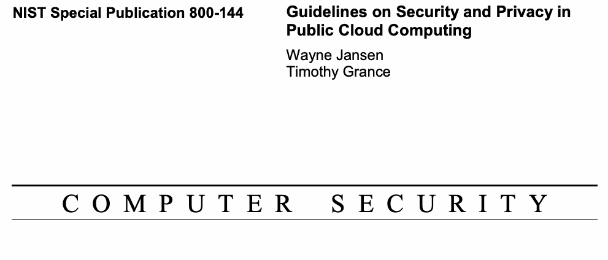
抽出したテキスト（原本と未照合・参考）
| Guidelines on Security and Privacy in Public Cloud Computing Wayne Jansen Timothy Grance | |
| C O M P U T E | R S E C U R I T Y |
抽出したテキストの訳（原本と未照合・参考）
| パブリッククラウドコンピューティングにおけるセキュリティとプライバシーに関するガイドライン Wayne Jansen Timothy Grance | |
| C O M P U T E | R S E C U R I T Y |
Computer Security Division Information Technology Laboratory National Institute of Standards and Technology Gaithersburg, MD 20899-8930
コンピュータセキュリティ部門 情報技術研究所 米国国立標準技術研究所 Gaithersburg, MD 20899-8930
未レビュー訳December 2011
2011年12月
未レビュー訳U.S. Department of Commerce Rebecca M. Blank, Acting Secretary
米国商務省 Rebecca M. Blank（長官代行）
未レビュー訳National Institute of Standards and Technology Patrick D. Gallagher, Under Secretary of Commerce for Standards and Technology and Director
米国国立標準技術研究所 Patrick D. Gallagher（商務省標準技術担当次官兼所長）
未レビュー訳Reports on Computer Systems Technology
コンピュータシステム技術報告書
The Information Technology Laboratory (ITL) at the National Institute of Standards and Technology (NIST) promotes the U.S. economy and public welfare by providing technical leadership for the Nation’s measurement and standards infrastructure. ITL develops tests, test methods, reference data, proof of concept implementations, and technical analysis to advance the development and productive use of information technology. ITL’s responsibilities include the development of technical, physical, administrative, and management standards and guidelines for the cost-effective security and privacy of sensitive unclassified information in Federal computer systems. This Special Publication discusses ITL’s research, guidance, and outreach efforts in computer security, and its collaborative activities with industry, government, and academic organizations.
米国国立標準技術研究所（NIST）の情報技術研究所（ITL）は、国家の計測・標準基盤に技術的リーダーシップを提供することで、米国経済と公共福祉の向上を促進している。ITLは、情報技術の発展と生産的な利用を推進するため、試験、試験方法、参照データ、概念実証実装、および技術分析を開発する。ITLの責務には、連邦コンピュータシステムにおける機微な非機密情報の費用対効果に優れたセキュリティとプライバシーのため、技術的、物理的、管理的および運用管理上の標準とガイドラインを策定することが含まれる。本Special Publicationでは、コンピュータセキュリティに関するITLの研究、ガイダンス、普及活動、および産業界、政府、学術機関との協力活動について論じる。
National Institute of Standards and Technology Special Publication 800-144
米国国立標準技術研究所 Special Publication 800-144
未レビュー訳80 pages (December 2011)
80ページ（2011年12月）
未レビュー訳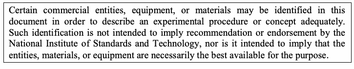
抽出したテキスト（原本と未照合・参考）
Certain commercial entities, equipment, or materials may be identified in this document in order to describe an experimental procedure or concept adequately. Such identification is not intended to imply recommendation or endorsement by the National Institute of Standards and Technology, nor is it intended to imply that the entities, materials, or equipment are necessarily the best available for the purpose.抽出したテキストの訳（原本と未照合・参考）
実験手順または概念を適切に説明するため、本書では特定の商業組織、機器、または材料を特定する場合がある。このような特定は、米国国立標準技術研究所による推奨または是認を意味するものではなく、また当該組織、材料、機器が目的に対して必ずしも入手可能な最良のものであることを意味しない。Abstract
概要
Cloud computing can and does mean different things to different people. The common characteristics most interpretations share are on-demand scalability of highly available and reliable pooled computing resources, secure access to metered services from nearly anywhere, and displacement of data and services from inside to outside the organization. While aspects of these characteristics have been realized to a certain extent, cloud computing remains a work in progress. This publication provides an overview of the security and privacy challenges pertinent to public cloud computing and points out considerations organizations should take when outsourcing data, applications, and infrastructure to a public cloud environment.
クラウドコンピューティングは、人によって異なる意味を持ち、実際に異なる意味で使われることがある。多くの解釈に共通する特徴は、可用性と信頼性の高い共有コンピューティング資源をオンデマンドで拡張できること、ほぼどこからでも計量されたサービスへ安全にアクセスできること、ならびにデータとサービスが組織内から組織外へ移ることである。これらの特徴の一部はある程度実現されているものの、クラウドコンピューティングは発展途上にある。本刊行物は、パブリッククラウドコンピューティングに関係するセキュリティとプライバシーの課題を概説し、データ、アプリケーション、インフラストラクチャをパブリッククラウド環境へ外部委託する際に組織が考慮すべき点を示す。
Keywords: Cloud Computing; Computer Security and Privacy; Information Technology Outsourcing
キーワード：クラウドコンピューティング；コンピュータセキュリティとプライバシー；情報技術の外部委託
Acknowledgements
謝辞
The authors, Wayne Jansen of Booz Allen Hamilton and Tim Grance of NIST, wish to thank colleagues who reviewed drafts of this document and contributed to its technical content, as well as the individuals who reviewed the public-release draft of this document and provided comments during the review period. In particular, Erika McCallister of NIST offered insight on the subject of privacy as it relates to cloud computing, and Tom Karygiannis and Ramaswamy Chandramouli, also from NIST, provided input on cloud security in early drafts. Thanks also go to Kevin Mills and Lee Badger, who assisted with our internal review process. Key improvements to this document would not have been possible without the feedback and valuable suggestions of all these individuals.
著者であるBooz Allen HamiltonのWayne JansenおよびNISTのTim Granceは、本書の草稿をレビューし技術的内容に貢献した同僚ならびに公開用草稿をレビュー期間中に確認しコメントを寄せた方々に謝意を表する。特に、NISTのErika McCallisterはクラウドコンピューティングに関連するプライバシーについて知見を提供し、同じくNISTのTom KarygiannisおよびRamaswamy Chandramouliは初期草稿にクラウドセキュリティに関する意見を寄せた。また、内部レビューを支援したKevin MillsおよびLee Badgerにも感謝する。これらの方々の意見と貴重な提案がなければ、本書の重要な改善は実現できなかった。
Table of Contents
目次
Executive Summary.................................................................................................................vi
エグゼクティブサマリー……vi
未レビュー訳1. Introduction — 1
1. はじめに — 1
未レビュー訳1.1 Authority — 1
1.1 権限 — 1
未レビュー訳1.2 Purpose and Scope — 1
1.2 目的および適用範囲 — 1
1.3 Audience — 1
1.3 対象読者 — 1
1.4 Document Structure — 2
1.4 文書の構成 — 2
未レビュー訳2. Background — 3
2. 背景 — 3
未レビュー訳2.1 Deployment Models — 3
2.1 配備モデル — 3
2.2 Service Models — 4
2.2 サービスモデル — 4
2.3 Outsourcing and Accountability — 6
2.3 外部委託と説明責任 — 6
3. Public Cloud Services — 7
3. パブリッククラウドサービス — 7
3.1 Service Agreements — 7
3.1 サービス合意 — 7
3.2 The Security and Privacy Upside — 8
3.2 セキュリティとプライバシー上の利点 — 8
3.3 The Security and Privacy Downside — 10
3.3 セキュリティとプライバシー上の欠点 — 10
4. Key Security and Privacy Issues — 14
4. 主なセキュリティおよびプライバシー課題 — 14
4.1 Governance — 14
4.1 ガバナンス — 14
未レビュー訳4.2 Compliance — 15
4.2 コンプライアンス — 15
未レビュー訳4.3 Trust — 18
4.3 信頼 — 18
未レビュー訳4.4 Architecture — 22
4.4 アーキテクチャ — 22
4.5 Identity and Access Management — 25
4.5 アイデンティティおよびアクセス管理 — 25
4.6 Software Isolation — 27
4.6 ソフトウェアの分離 — 27
4.7 Data Protection — 29
4.7 データ保護 — 29
未レビュー訳4.8 Availability — 31
4.8 可用性 — 31
4.9 Incident Response — 33
4.9 インシデント対応 — 33
4.10 Summary of Recommendations — 35
4.10 推奨事項の要約 — 35
5. Public Cloud Outsourcing — 37
5. パブリッククラウドへの外部委託 — 37
5.1 General Concerns — 39
5.1 一般的な懸念事項 — 39
5.2 Preliminary Activities — 42
5.2 準備活動 — 42
5.3 Initiating and Coincident Activities — 48
5.3 開始時および並行して行う活動 — 48
5.4 Concluding Activities — 50
5.4 終了活動 — 50
未レビュー訳5.5 Summary of Recommendations — 51
5.5 推奨事項の要約 — 51
6. Conclusion — 52
6. 結論 — 52
未レビュー訳7. References — 53
7. 参考文献 — 53
未レビュー訳Appendix A—Acronyms — 69
付録A—略語 — 69
未レビュー訳Appendix B—Online Resources — 70
付録B—オンライン資料 — 70
Executive Summary
エグゼクティブサマリー
未レビュー訳Cloud computing has been defined by NIST as a model for enabling convenient, on-demand network access to a shared pool of configurable computing resources (e.g., networks, servers, storage, applications, and services) that can be rapidly provisioned and released with minimal management effort or cloud provider interaction [Mel11]. Cloud computing technologies can be implemented in a wide variety of architectures, under different service and deployment models, and can coexist with other technologies and software design approaches. The security challenges cloud computing presents are formidable, including those faced by public clouds whose infrastructure and computational resources are owned and operated by an outside party that delivers services to the general public via a multi-tenant platform.
NISTはクラウドコンピューティングを、ネットワーク、サーバー、ストレージ、アプリケーション、サービスなど、構成可能な共有コンピューティング資源のプールへの便利なオンデマンドネットワークアクセスを可能にし、最小限の管理作業またはクラウド提供者とのやり取りで迅速にプロビジョニングおよび解放できるモデルと定義している[Mel11]。クラウドコンピューティング技術は、多様なアーキテクチャ、サービスモデル、配備モデルの下で実装でき、他の技術やソフトウェア設計方式と共存できる。クラウドコンピューティングがもたらすセキュリティ課題は重大である。これには、インフラストラクチャと計算資源を外部事業者が所有・運用し、マルチテナント型プラットフォームを介して一般利用者にサービスを提供するパブリッククラウドが直面する課題も含まれる。
The emergence of cloud computing promises to have far-reaching effects on the systems and networks of federal agencies and other organizations. Many of the features that make cloud computing attractive, however, can also be at odds with traditional security models and controls. The primary purpose of this report is to provide an overview of public cloud computing and the security and privacy considerations involved. More specifically, this document describes the threats, technology risks, and safeguards surrounding public cloud environments, and their treatment. This document does not prescribe or recommend any specific cloud computing service, service arrangement, service agreement, service provider, or deployment model. Each organization is instead expected to apply the guidelines provided when performing its own analysis of its requirements, and to assess, select, engage, and oversee the public cloud services that can best fulfill those requirements.
クラウドコンピューティングの登場は、連邦機関その他の組織のシステムおよびネットワークに広範な影響を及ぼすと見込まれる。しかし、クラウドコンピューティングの魅力となる機能の多くは、従来のセキュリティモデルや管理策と相いれない場合もある。本報告書の主な目的は、パブリッククラウドコンピューティングならびに関連するセキュリティとプライバシー上の考慮事項を概説することである。具体的には、パブリッククラウド環境に伴う脅威、技術的リスク、安全対策、およびそれらへの対処を説明する。本書は、特定のクラウドコンピューティングサービス、サービス取り決め、サービス合意、サービス提供者、または配備モデルを規定も推奨もしない。各組織は、自らの要件を分析し、その要件を最もよく満たすパブリッククラウドサービスを評価、選択、利用開始し、監督する際に、本書のガイドラインを適用することが期待される。
The key guidelines from the report are summarized and listed below and are recommended to federal departments and agencies.
本報告書の主要なガイドラインを以下に要約して列挙する。連邦省庁および機関に推奨する。
Carefully plan the security and privacy aspects of cloud computing solutions before engaging them. Public cloud computing represents a significant paradigm shift from the conventional norms of an organizational data center to a deperimeterized infrastructure open to use by potential adversaries. As with any emerging information technology area, cloud computing should be approached carefully with due consideration to the sensitivity of data. Planning helps to ensure that the computing environment is as secure as possible and in compliance with all relevant organizational policies and that privacy is maintained. It also helps to ensure that the agency derives full benefit from information technology spending.
クラウドコンピューティングを利用する前に、そのセキュリティとプライバシーの側面を慎重に計画する。パブリッククラウドコンピューティングは、組織の従来型データセンターの常識から、潜在的な敵対者にも利用され得る境界のないインフラストラクチャへの大きなパラダイム転換を意味する。新興の情報技術分野と同様、クラウドコンピューティングにはデータの機微性を十分考慮して慎重に取り組むべきである。計画によって、コンピューティング環境の安全性を可能な限り高め、関連するすべての組織ポリシーに準拠させ、プライバシーを維持しやすくなる。また、機関が情報技術への支出から十分な利益を得ることにも役立つ。
未レビュー訳The security objectives of an organization are a key factor for decisions about outsourcing information technology services and, in particular, for decisions about transitioning organizational data, applications, and other resources to a public cloud computing environment. Organizations should take a risk-based approach in analyzing available security and privacy options and deciding about placing organizational functions into a cloud environment. The information technology governance practices of the organizations that pertain to the policies, procedures, and standards used for application development and service provisioning, as well as the design, implementation, testing, use, and monitoring of deployed or engaged services, should be extended to cloud computing environments.
組織のセキュリティ目標は、情報技術サービスの外部委託、特に組織のデータ、アプリケーション、その他の資源をパブリッククラウド環境へ移行する判断における重要な要因である。組織は、利用可能なセキュリティおよびプライバシーの選択肢を分析し、組織機能をクラウド環境に配置するか決定する際、リスクベースのアプローチを取るべきである。アプリケーション開発とサービス提供に用いるポリシー、手順、標準、ならびに導入済みまたは利用中のサービスの設計、実装、試験、利用、監視に関する組織の情報技術ガバナンス実務を、クラウドコンピューティング環境にも拡張すべきである。
To maximize effectiveness and minimize costs, security and privacy must be considered throughout the system lifecycle from the initial planning stage forward. Attempting to address security and privacy issues after implementation and deployment is not only much more difficult and expensive, but also exposes the organization to unnecessary risk.
効果を最大化しコストを最小化するには、初期計画段階からシステムライフサイクル全体を通じてセキュリティとプライバシーを考慮しなければならない。実装・配備後にセキュリティとプライバシーの問題に対処しようとすると、はるかに困難で費用がかかるだけでなく、組織を不必要なリスクにさらす。
Understand the public cloud computing environment offered by the cloud provider. The responsibilities of both the organization and the cloud provider vary depending on the service model. Organizations consuming cloud services must understand the delineation of responsibilities over the computing environment and the implications for security and privacy. Assurances furnished by the cloud provider to support security or privacy claims, or by a certification and compliance review entity paid by the cloud provider, should be verified whenever possible through independent assessment by the organization.
クラウド提供者が提供するパブリッククラウド環境を理解する。組織とクラウド提供者双方の責任範囲は、サービスモデルによって異なる。クラウドサービスを利用する組織は、コンピューティング環境に関する責任分担と、セキュリティおよびプライバシーへの影響を理解しなければならない。セキュリティまたはプライバシーに関する主張を裏付けるためクラウド提供者が提示する保証、またはクラウド提供者が費用を負担する認証・コンプライアンスレビュー機関による保証は、可能な限り組織が独立評価を通じて検証すべきである。
未レビュー訳Understanding the policies, procedures, and technical controls used by a cloud provider is a prerequisite to assessing the security and privacy risks involved. It is also important to comprehend the technologies used to provision services and the implications for security and privacy of the system. Details about the system architecture of a cloud can be analyzed and used to formulate a complete picture of the protection afforded by the security and privacy controls, which improves the ability of the organization to assess and manage risk accurately, including mitigating risk by employing appropriate techniques and procedures for the continuous monitoring of the security state of the system.
クラウドプロバイダーが用いるポリシー、手順、技術的管理策を理解することは、関連するセキュリティおよびプライバシーリスクの評価に先立つ条件である。サービスのプロビジョニングに使われる技術と、システムのセキュリティおよびプライバシーへの影響を理解することも重要である。クラウドのシステムアーキテクチャの詳細を分析すれば、セキュリティおよびプライバシー管理策がもたらす保護の全体像を描ける。これにより、適切な技法・手順によるシステムのセキュリティ状態の継続的監視など、リスクの緩和を含め、組織がリスクを正確に評価・管理する能力が高まる。
Ensure that a cloud computing solution satisfies organizational security and privacy requirements. Public cloud providers’ default offerings generally do not reflect a specific organization’s security and privacy needs. From a risk perspective, determining the suitability of cloud services requires an understanding of the context in which the organization operates and the consequences from the plausible threats it faces. Adjustments to the cloud computing environment may be warranted to meet an organization’s requirements. Organizations should require that any selected public cloud computing solution is configured, deployed, and managed to meet their security, privacy, and other requirements.
クラウドコンピューティングソリューションが組織のセキュリティおよびプライバシー要件を満たすことを確保する。パブリッククラウド提供者の標準サービスは、通常、特定組織のセキュリティおよびプライバシーのニーズを反映していない。リスクの観点からクラウドサービスの適合性を判断するには、組織が活動する状況と、直面する妥当な脅威がもたらす結果を理解する必要がある。組織の要件を満たすため、クラウド環境の調整が必要となる場合がある。選択したパブリッククラウドソリューションが、組織のセキュリティ、プライバシーその他の要件を満たすよう構成、配備、管理されることを組織は求めるべきである。
未レビュー訳Non-negotiable service agreements in which the terms of service are prescribed completely by the cloud provider are generally the norm in public cloud computing. Negotiated service agreements are also possible. Similar to traditional information technology outsourcing contracts used by agencies, negotiated agreements can address an organization’s concerns about security and privacy details, such as the vetting of employees, data ownership and exit rights, breach notification, isolation of tenant applications, data encryption and segregation, tracking and reporting service effectiveness, compliance with laws and regulations, and the use of validated products meeting federal or national standards (e.g., Federal Information Processing Standard 140). A negotiated agreement can also document the assurances the cloud provider must furnish to corroborate that organizational requirements are being met.
サービス条件のすべてをクラウドプロバイダーが定める交渉不可のサービス合意が、パブリッククラウドコンピューティングでは一般的である。交渉可能なサービス合意も締結できる。機関が用いる従来型の情報技術外部委託契約と同様に、交渉による合意では、従業員の審査、データ所有権と退出権、侵害通知、テナント間のアプリケーション分離、データ暗号化と分離、サービス有効性の追跡と報告、法令・規制の遵守、連邦または国家標準（例：Federal Information Processing Standard 140）を満たす検証済み製品の利用など、セキュリティおよびプライバシーの詳細に関する組織の懸念に対処できる。また、組織の要件が満たされていることを裏付けるため、クラウドプロバイダーが提示すべき保証を文書化できる。
Critical data and applications may require an agency to undertake a negotiated service agreement in order to use a public cloud. Points of negotiation can negatively affect the economies of scale that a non-negotiable service agreement brings to public cloud computing, however, making a negotiated agreement less cost effective. As an alternative, the organization may be able to employ compensating controls to work around identified shortcomings in the public cloud service. Other alternatives include cloud computing environments with a more suitable deployment model, such as an internal private cloud, which can potentially offer an organization greater oversight and authority over security and privacy, and better limit the types of tenants that share platform resources, reducing exposure in the event of a failure or configuration error in a control.
重要なデータやアプリケーションを扱う場合、パブリッククラウドを利用するために機関が交渉可能なサービス合意を結ぶ必要があることがある。ただし、交渉事項によって、交渉不可のサービス合意がパブリッククラウドにもたらす規模の経済性が損なわれ、交渉可能な合意の費用対効果が下がる可能性がある。代替策として、パブリッククラウドサービスで特定された欠点を回避するための代償的な管理策を組織が採用できる場合がある。より適切な配備モデル、たとえば内部のプライベートクラウドを用いる環境も代替案となる。これにより、セキュリティとプライバシーに対する組織の監督権限を高め、プラットフォーム資源を共有するテナントの種類をより適切に制限し、管理策の障害や構成ミスが起きた場合の露出を減らせる可能性がある。
With the growing number of cloud providers and range of services from which to choose, organizations must exercise due diligence when selecting and moving functions to the cloud. Decision making about services and service arrangements entails striking a balance between benefits in cost and productivity versus drawbacks in risk and liability. While the sensitivity of data handled by government organizations and the current state of the art make the likelihood of outsourcing all information technology services to a public cloud low, it should be possible for most government organizations to deploy some of their information technology services to a public cloud, provided that all requisite risk mitigations are taken.
クラウド提供者の数と選択可能なサービスが増えているため、機能をクラウドへ移す際、組織は十分な注意を払って選定しなければならない。サービスやサービス取り決めの意思決定では、費用・生産性上の利点と、リスク・責任上の不利益との均衡を取る必要がある。政府組織が扱うデータの機微性と現時点の技術水準を考慮すると、すべての情報技術サービスをパブリッククラウドへ外部委託する可能性は低い。しかし必要なリスク緩和策をすべて講じれば、ほとんどの政府組織が一部の情報技術サービスをパブリッククラウドへ配備することは可能であると考えられる。
Ensure that the client-side computing environment meets organizational security and privacy requirements for cloud computing. Cloud computing encompasses both a server and a client side. With emphasis typically placed on the former, the latter can be easily overlooked. Services from different cloud providers, as well as cloud-based applications developed by the organization, can impose more exacting demands on the client, which may have implications for security and privacy that need to be taken into consideration.
クライアント側のコンピューティング環境が、クラウドコンピューティングに関する組織のセキュリティおよびプライバシー要件を満たすことを確保する。クラウドコンピューティングにはサーバー側とクライアント側の両方が含まれる。通常は前者に重点が置かれ、後者は見落とされやすい。異なるクラウド提供者のサービスや、組織が開発したクラウドベースのアプリケーションは、クライアントにより厳しい要件を課すことがあり、考慮すべきセキュリティおよびプライバシー上の影響が生じ得る。
未レビュー訳Because of their ubiquity, Web browsers are a key element for client-side access to cloud computing services. Clients may also entail small lightweight applications that run on desktop and mobile devices to access services. The various available plug-ins and extensions for Web browsers are notorious for their security problems. Many browser add-ons also do not provide automatic updates, increasing the persistence of any existing vulnerabilities. Similar problems exist for other types of clients.
Webブラウザーは広く普及しているため、クラウドコンピューティングサービスへのクライアント側アクセスの重要要素である。クライアントには、サービスへのアクセスに使うデスクトップ端末やモバイル端末上で動作する小規模で軽量なアプリケーションも含まれる。Webブラウザーで利用できる各種プラグインや拡張機能は、セキュリティ上の問題で知られている。多くのブラウザーアドオンは自動更新にも対応しておらず、既存の脆弱性が長く残る。ほかの種類のクライアントにも同様の問題がある。
Maintaining physical and logical security over clients can be troublesome, especially with embedded mobile devices such as smart phones. Their size and portability can result in the loss of physical control. Built-in security mechanisms often go unused or can be overcome or circumvented without difficulty by a knowledgeable party to gain control over the device. Moreover, cloud applications are often delivered to them through custom-built native applications (i.e., apps) rather than a Web browser.
クライアントの物理的および論理的セキュリティを維持することは、とりわけスマートフォンなどの組込み型モバイル端末では難しい。小型で持ち運べるため、物理的な管理を失うおそれがある。組込みのセキュリティ機構が使われないことも多く、知識を持つ者が容易にこれを突破または回避し、端末を掌握できる場合がある。さらに、クラウドアプリケーションはWebブラウザーではなく、専用のネイティブアプリケーション（アプリ）を通じて提供されることが多い。
The growing availability and use of social media, personal Webmail, and other publicly available sites are a concern, since they increasingly serve as avenues for social engineering attacks that can negatively impact the security of the client, its underlying platform, and cloud services accessed. Having a backdoor Trojan, keystroke logger, or other type of malware running on a client device undermines the security and privacy of public cloud services as well as other Internet-facing public services accessed. As part of the overall cloud computing security architecture, organizations should review existing security and privacy measures and employ additional ones, if necessary, to secure the client side.
ソーシャルメディア、個人用Webメールなど一般公開サイトの利用可能性と利用が増えており、懸念される。これらはソーシャルエンジニアリング攻撃の経路となることが増え、クライアント、その基盤プラットフォーム、およびアクセス先クラウドサービスのセキュリティに悪影響を及ぼす可能性がある。クライアント端末上でバックドア型トロイの木馬、キーロガー、その他のマルウェアが動作すれば、パブリッククラウドサービスだけでなく、アクセスする他のインターネット公開サービスのセキュリティとプライバシーも損なわれる。クラウドコンピューティング全体のセキュリティアーキテクチャの一環として、組織は既存のセキュリティおよびプライバシー対策を見直し、必要に応じてクライアント側を保護する追加対策を講じるべきである。
Maintain accountability over the privacy and security of data and applications implemented and deployed in public cloud computing environments. Organizations should employ appropriate security management practices and controls over cloud computing. Strong management practices are essential for operating and maintaining a secure cloud computing solution. Security and privacy practices entail monitoring the organization’s information system assets and assessing the implementation of policies, standards, procedures, controls, and guidelines that are used to establish and preserve the confidentiality, integrity, and availability of information system resources.
パブリッククラウド環境に実装・配備したデータおよびアプリケーションのプライバシーとセキュリティに関する説明責任を維持する。組織はクラウドコンピューティングに対して適切なセキュリティ管理実務と管理策を用いるべきである。安全なクラウドコンピューティングソリューションの運用・維持には、強固な管理実務が不可欠である。セキュリティおよびプライバシーの実務には、情報システム資産を監視し、情報システム資源の機密性、完全性、可用性を確立・維持するためのポリシー、標準、手順、管理策、ガイドラインの実装状況を評価することが含まれる。
未レビュー訳The organization should collect and analyze available data about the state of the system regularly and as often as needed to manage security and privacy risks, as appropriate for each level of the organization (i.e., governance level, mission or business process level, and information systems level) [Dem10]. Continuous monitoring of information security requires maintaining ongoing awareness of privacy and security controls, vulnerabilities, and threats to support risk management decisions. The goal is to conduct ongoing monitoring of the security of an organization’s networks, information, and systems, and to respond by accepting, avoiding, or mitigating risk as situations change.
組織は、各組織階層（ガバナンス階層、使命または業務プロセス階層、情報システム階層）に適した形で、セキュリティおよびプライバシーリスクを管理するため、システムの状態に関する利用可能なデータを定期的に、必要な頻度で収集・分析すべきである[Dem10]。情報セキュリティの継続的監視には、リスク管理上の意思決定を支援するため、プライバシーおよびセキュリティ管理策、脆弱性、脅威について常に把握しておく必要がある。組織のネットワーク、情報、システムのセキュリティを継続的に監視し、状況の変化に応じてリスクを受容、回避、または緩和することが目的である。
Assessing and managing risk in cloud computing systems can be a challenge, since significant portions of the computing environment are under the control of the cloud provider and may likely be beyond the organization’s purview. Both qualitative and quantitative factors apply in a risk analysis. Risks must be carefully weighed against the available technical, management, and operational safeguards and the necessary steps must be taken to reduce risk to an acceptable level. The organization must also ensure that security and privacy controls are implemented correctly, operate as intended, and meet organizational requirements.
クラウドコンピューティングシステムのリスクを評価・管理することは課題となり得る。コンピューティング環境の大部分がクラウド提供者の管理下にあり、組織の監督範囲外となる可能性が高いためである。リスク分析には定性的要因と定量的要因の両方が関わる。リスクを利用可能な技術的、管理的、運用上の安全対策と慎重に比較し、リスクを許容可能な水準まで低減するために必要な措置を講じなければならない。また組織は、セキュリティおよびプライバシー管理策が正しく実装され、意図したとおりに動作し、組織の要件を満たすことを確保しなければならない。
Establishing a level of confidence about a cloud service environment depends on the ability of the cloud provider to provision the security controls necessary to protect the organization’s data and applications, and also the evidence provided about the effectiveness of those controls [JTF10]. Verifying the correct functioning of a subsystem and the effectiveness of security controls as extensively as with an internal organizational system may not be feasible in some cases, however, and other factors such as third-party audits may be used to establish a level of trust. Ultimately, if the level of confidence in the service falls below expectations and the organization is unable to employ compensating controls, it must either reject the service or accept a greater degree of risk.
クラウドサービス環境への信頼度を確立できるかは、組織のデータやアプリケーションを保護するために必要なセキュリティ管理策をクラウド提供者が提供できるか、またそれらの有効性を示す証拠が提示されるかに依存する[JTF10]。内部組織システムと同程度にサブシステムの正しい動作やセキュリティ管理策の有効性を広範囲に検証することは、場合によっては実現できない。その場合、第三者監査などの要因を用いて信頼度を確立できる。最終的に、サービスへの信頼度が期待を下回り、組織が補完的管理策を採用できないなら、そのサービスを拒否するか、より高いリスクを受容しなければならない。
Cloud computing depends on the security of many individual components. Besides components for general computing, there are also components that the management backplane comprises, such as those for self-service, resource metering, quota management, data replication and recovery, service level monitoring, and workload management. Many of the simplified interfaces and service abstractions afforded by cloud computing belie the inherent underlying complexity that affects security. Organizations should ensure to the maximum extent practicable that all cloud computing elements are secure and that security and privacy are maintained based on sound computing practices, including those outlined in Federal Information Processing Standards (FIPS) and NIST Special Publications (SP). The standards and guides listed in the table below provide material that is especially relevant to cloud computing and should be used in conjunction with this report.
クラウドコンピューティングは多数の個別コンポーネントのセキュリティに依存する。一般的なコンピューティング用コンポーネントのほか、セルフサービス、資源計測、割当量管理、データ複製と復旧、サービスレベル監視、ワークロード管理など、管理バックプレーンを構成するコンポーネントもある。クラウドコンピューティングが提供する簡素化されたインターフェースやサービス抽象化の背後には、セキュリティに影響する本質的な複雑さが隠れている。組織は、実行可能な最大限の範囲で、すべてのクラウドコンピューティング要素が安全であり、連邦情報処理標準（FIPS）やNIST Special Publications（SP）に示されたものを含む適切なコンピューティング実務に基づいて、セキュリティとプライバシーが維持されるようにすべきである。以下の表に挙げる標準とガイドはクラウドコンピューティングに特に関連する資料であり、本報告書と併せて使用すべきである。
抽出したテキストの訳（原本と未照合・参考）
| 刊行物 | 標題 |
FIPS 199
FIPS 199
未レビュー訳Standards for Security Categorization of Federal Information and Information Systems
連邦情報および情報システムのセキュリティ分類に関する標準
未レビュー訳FIPS 200
FIPS 200
未レビュー訳Minimum Security Requirements for Federal Information and Information Systems
連邦情報および情報システムの最低セキュリティ要件
未レビュー訳SP 800-18
SP 800-18
未レビュー訳Guide for Developing Security Plans for Federal Information Systems
連邦情報システムのセキュリティ計画策定ガイド
未レビュー訳SP 800-34, Revision 1 Contingency Planning Guide for Federal Information Systems
SP 800-34、改訂1 緊急時対応計画ガイド：連邦情報システム
SP 800-37, Revision 1 Guide for Applying the Risk Management Framework to Federal Information Systems
SP 800-37、改訂1 連邦情報システムへのリスク管理フレームワーク適用ガイド
SP 800-39
SP 800-39
未レビュー訳Managing Information Security Risk
情報セキュリティリスクの管理
未レビュー訳SP 800-53, Revision 3 Recommended Security Controls for Federal Information Systems and Organizations
SP 800-53、改訂3 連邦情報システムおよび組織向け推奨セキュリティ管理策
SP 800-53, Appendix J Privacy Control Catalog
SP 800-53、付録J プライバシー管理策カタログ
SP 800-53A, Revision 1 Guide for Assessing the Security Controls in Federal Information Systems
SP 800-53A、改訂1 連邦情報システムのセキュリティ管理策評価ガイド
Guide for Mapping Types of Information and Information Systems to Security
情報および情報システムの種類をセキュリティカテゴリに対応付けるガイド
未レビュー訳SP 800-60
SP 800-60
未レビュー訳Categories
カテゴリ
未レビュー訳SP 800-61, Revision 1 Computer Security Incident Handling Guide
SP 800-61、改訂1 コンピュータセキュリティインシデント対応ガイド
SP 800-64, Revision 2 Security Considerations in the System Development Life Cycle
SP 800-64、改訂2 システム開発ライフサイクルにおけるセキュリティ上の考慮事項
SP 800-86
SP 800-86
未レビュー訳Guide to Integrating Forensic Techniques into Incident Response
インシデント対応へのフォレンジック技法の統合ガイド
未レビュー訳SP 800-88
SP 800-88
未レビュー訳Guidelines for Media Sanitization
媒体サニタイズに関するガイドライン
未レビュー訳SP 800-115
SP 800-115
未レビュー訳Technical Guide to Information Security Testing and Assessment
情報セキュリティ試験および評価に関する技術ガイド
未レビュー訳SP 800-122
SP 800-122
未レビュー訳Guide to Protecting the Confidentiality of Personally Identifiable Information (PII)
個人識別情報（PII）の機密性保護ガイド
未レビュー訳Information Security Continuous Monitoring for Federal Information Systems and
連邦情報システムの情報セキュリティ継続的監視および
未レビュー訳SP 800-137
SP 800-137
未レビュー訳Organizations
組織
未レビュー訳1. Introduction
1. はじめに
未レビュー訳Interest in cloud computing has grown rapidly in recent years due to the advantages of greater flexibility and availability in obtaining computing resources at lower cost. Security and privacy, however, are a concern for agencies and organizations considering transitioning applications and data to public cloud computing environments, and form the impetus behind this document.
クラウドコンピューティングへの関心は、より低いコストで柔軟性と可用性の高いコンピューティング資源を得られる利点から、近年急速に高まっている。しかし、アプリケーションおよびデータをパブリッククラウド環境へ移行しようとする機関や組織にとって、セキュリティとプライバシーは懸念事項であり、本書の作成の動機となっている。
1.1 Authority
1.1 権限
The National Institute of Standards and Technology (NIST) developed this document in furtherance of its statutory responsibilities under the Federal Information Security Management Act (FISMA) of 2002, Public Law 107-347.
国立標準技術研究所（NIST）は、2002年連邦情報セキュリティ管理法（FISMA）、Public Law 107-347に基づく法定責任を遂行するため、本書を策定した。
NIST is responsible for developing standards and guidelines, including minimum requirements, for providing adequate information security for all agency operations and assets; but such standards and guidelines shall not apply to national security systems. This guideline is consistent with the requirements of the Office of Management and Budget (OMB) Circular A-130, Section 8b(3), “Securing Agency Information Systems,” as analyzed in A-130, Appendix IV: Analysis of Key Sections. Supplemental information is provided in A-130, Appendix III.
NISTは、各機関のすべての業務および資産に十分な情報セキュリティを提供するための最低要件を含む標準およびガイドラインの策定に責任を負う。ただし、これらの標準およびガイドラインは国家安全保障システムには適用されない。本ガイドラインは、A-130付録IV「主要節の分析」で分析されている行政管理予算局（OMB）通達A-130第8b(3)節「機関情報システムの保護」の要件と整合している。補足情報はA-130付録IIIに記載されている。
This guideline has been prepared for use by federal agencies. It may be used by nongovernmental organizations on a voluntary basis and is not subject to copyright, though attribution is desired.
本ガイドラインは連邦機関による使用を目的として作成された。非政府組織も任意で使用でき、著作権の対象ではないが、出典表示が望ましい。
Nothing in this document should be taken to contradict standards and guidelines made mandatory and binding on federal agencies by the Secretary of Commerce under statutory authority, nor should these guidelines be interpreted as altering or superseding the existing authorities of the Secretary of Commerce, Director of the OMB, or any other federal official.
本書のいかなる内容も、法定権限に基づき商務長官が連邦機関に義務付け、拘束力を持たせた標準およびガイドラインに反すると解釈すべきではない。また、本ガイドラインは、商務長官、OMB長官またはその他の連邦当局者の既存の権限を変更もしくは置き換えるものと解釈すべきではない。
1.2 Purpose and Scope
1.2 目的および適用範囲
The purpose of this document is to provide an overview of public cloud computing and the security and privacy challenges involved. The document discusses the threats, technology risks, and safeguards for public cloud environments, and provides the insight needed to make informed information technology decisions on their treatment. The document does not prescribe or recommend any specific cloud computing service, service arrangement, service agreement, service provider, or deployment model. Each organization must perform its own analysis of its needs, and assess, select, engage, and oversee the public cloud services that can best fulfill those needs.
本書の目的は、パブリッククラウドコンピューティングの概要と、それに伴うセキュリティおよびプライバシー上の課題を示すことである。本書は、パブリッククラウド環境における脅威、技術的リスクおよび保護策を論じ、それらへの対処に関する十分な情報に基づく情報技術上の意思決定に必要な知見を提供する。本書は、特定のクラウドコンピューティングサービス、サービス契約、サービス合意、サービスプロバイダーまたは導入モデルを規定もしくは推奨するものではない。各組織は、自らのニーズを分析し、そのニーズを最もよく満たすパブリッククラウドサービスを評価、選択、契約し、監督しなければならない。
1.3 Audience
1.3 対象読者
The intended audience for this document includes the following categories of individuals:
本書の想定読者には、次のカテゴリーの人々が含まれる:
•System managers, executives, and information officers making decisions about cloud computing initiatives
•クラウドコンピューティングに関する取り組みについて意思決定を行うシステム管理者、経営幹部および情報責任者
未レビュー訳•Security professionals, including security officers, security administrators, auditors, and others with responsibility for information technology security
•セキュリティ担当官、セキュリティ管理者、監査人、その他情報技術セキュリティの責任者を含むセキュリティ専門家
未レビュー訳•Information technology program managers concerned with security and privacy measures for cloud computing
•クラウドコンピューティングのセキュリティおよびプライバシー対策に関心を持つ情報技術プログラム管理者
未レビュー訳•System and network administrators
•システム管理者およびネットワーク管理者
未レビュー訳•Users of public cloud computing services.
•パブリッククラウドコンピューティングサービスの利用者。
未レビュー訳This document, while technical in nature, provides background information to help readers understand the topics that are covered. The material presumes that readers possess fundamental operating system and networking expertise and have a basic understanding of cloud computing. Because of the evolving nature of security and privacy considerations in cloud computing, readers are expected to take advantage of other resources for more detailed and current information. These resources include the various publications listed or referenced in this document, the majority of which are available on-line.
本書は技術的な内容を扱うが、読者が取り上げる話題を理解できるよう背景情報も提供する。本書は、読者が基本的なオペレーティングシステムおよびネットワークの専門知識を有し、クラウドコンピューティングの基礎を理解していることを前提とする。クラウドコンピューティングにおけるセキュリティおよびプライバシーの考慮事項は進化し続けるため、読者はより詳細で最新の情報を他の情報源から得ることが期待される。これらの情報源には、本書で列挙または参照する各種出版物が含まれ、その大半はオンラインで入手できる。
1.4 Document Structure
1.4 文書の構成
The remainder of this document is organized into the following chapters:
本書の残りは、次の各章で構成される:
•Chapter 2 presents an overview of public cloud computing.
•第2章では、パブリッククラウドコンピューティングの概要を示す。
未レビュー訳•Chapter 3 discusses the benefits and drawbacks of public cloud services from a security and privacy perspective.
•第3章では、セキュリティおよびプライバシーの観点から、パブリッククラウドサービスの利点と欠点を論じる。
未レビュー訳•Chapter 4 discusses key security and privacy issues in public cloud computing and precautions that can be taken to mitigate them.
•第4章では、パブリッククラウドコンピューティングの主要なセキュリティおよびプライバシーの課題と、それらを軽減するために講じられる予防措置を論じる。
未レビュー訳•Chapter 5 provides guidance on addressing security and privacy issues when outsourcing support for data and applications to a cloud provider.
•第5章では、データおよびアプリケーションのサポートをクラウドプロバイダーに外部委託する際のセキュリティおよびプライバシー上の課題への対処に関するガイダンスを示す。
未レビュー訳•Chapter 6 presents a short conclusion.
•第6章では、簡単な結論を述べる。
未レビュー訳•Chapter 7 contains a list of references.
•第7章には参考文献一覧を掲載する。
未レビュー訳Sidebars containing auxiliary material related to the main discussion appear in gray text boxes throughout the main body of the document. At the end of the document, there are also appendices that contain supporting material: A list of acronyms is given in Appendix A, and a list of on-line resources can be found in Appendix B.
本文全体では、主な議論に関連する補助資料を灰色の囲み記事で示す。文末には補足資料を含む付録もある。付録Aには略語一覧、付録Bにはオンライン情報源一覧を掲載する。
2. Background
2. 背景
未レビュー訳Cloud computing has been defined by NIST as a model for enabling convenient, on-demand network access to a shared pool of configurable computing resources (e.g., networks, servers, storage, applications, and services) that can be rapidly provisioned and released with minimal management effort or cloud provider interaction [Mel11]. Cloud computing can be considered a new computing paradigm insofar as it allows the utilization of a computing infrastructure at one or more levels of abstraction, as an on-demand service made available over the Internet or other computer network. Because of the implications for greater flexibility and availability at lower cost, cloud computing is a subject that has been receiving a good deal of attention.
NISTはクラウドコンピューティングを、最小限の管理労力またはクラウドプロバイダーとのやり取りで迅速にプロビジョニングおよび解放できる、構成可能なコンピューティング資源（ネットワーク、サーバー、ストレージ、アプリケーションおよびサービスなど）の共有プールに対し、便利でオンデマンドなネットワークアクセスを可能にするモデルと定義している [Mel11]。クラウドコンピューティングは、インターネットまたはその他のコンピューターネットワークを介して提供されるオンデマンドサービスとして、1つ以上の抽象化レベルでコンピューティング基盤を利用できる限りにおいて、新たなコンピューティングパラダイムと見なすことができる。より低コストで、より高い柔軟性と可用性につながる含意があるため、クラウドコンピューティングは大きな注目を集めている話題である。
Cloud computing services benefit from economies of scale achieved through versatile use of resources, specialization, and other practicable efficiencies. However, cloud computing is an emerging form of distributed computing that is still undergoing evolution and standardization. The term itself is often used today with a range of meanings and interpretations [Fow09]. Much of what has been written about cloud computing is definitional, aimed at identifying important paradigms of deployment and use, and providing a general taxonomy for conceptualizing important facets of service.
クラウドコンピューティングサービスは、資源の柔軟な利用、専門化、およびその他の実用的な効率化によって実現する規模の経済の恩恵を受ける。しかし、クラウドコンピューティングは、現在も進化と標準化が進む新たな分散コンピューティング形態である。今日、この用語はさまざまな意味や解釈で使われることが多い [Fow09]。クラウドコンピューティングについて書かれたものの多くは定義に関するものであり、導入と利用における重要なパラダイムを特定し、サービスの重要な側面を概念化する一般的な分類体系を提供することを目的としている。
2.1 Deployment Models
2.1 導入モデル
Public cloud computing is one of several deployment models that have been defined [Mel11]. Deployment models broadly characterize the management and disposition of computational resources for delivery of services to consumers, as well as the differentiation between classes of consumers. A public cloud is one in which the infrastructure and computational resources that it comprises are made available to the general public over the Internet. It is owned and operated by a cloud provider delivering cloud services to consumers and, by definition, is external to the consumers’ organizations. At the other end of the spectrum are private clouds. A private cloud is one in which the computing environment is operated exclusively for a single organization. It may be managed by the organization or by a third party, and may be hosted within the organization’s data center or outside of it. A private cloud has the potential to give the organization greater control over the infrastructure, computational resources, and cloud consumers than can a public cloud.
パブリッククラウドコンピューティングは、定義されている複数の導入モデルの1つである [Mel11]。導入モデルは、サービスを消費者に提供するためのコンピューティング資源の管理および配置、ならびに消費者のクラス間の違いを大まかに特徴付ける。パブリッククラウドとは、その基盤および構成するコンピューティング資源をインターネット経由で一般に利用可能にするものである。クラウドサービスを消費者に提供するクラウドプロバイダーが所有・運用し、定義上、消費者の組織の外部にある。これと対極にあるのがプライベートクラウドである。プライベートクラウドとは、単一の組織専用に運用されるコンピューティング環境である。組織または第三者が管理でき、組織のデータセンター内または外部にホストできる。プライベートクラウドは、パブリッククラウドよりも、基盤、コンピューティング資源およびクラウド消費者に対する組織の制御を強められる可能性がある。
Two other deployment models exist: community and hybrid clouds. A community cloud falls between public and private clouds with respect to the target set of consumers. It is somewhat similar to a private cloud, but the infrastructure and computational resources are exclusive to two or more organizations that have common privacy, security, and regulatory considerations, rather than a single organization.1 Hybrid clouds are more complex than the other deployment models, since they involve a composition of two or more clouds (private, community, or public). Each member remains a unique entity, but is bound to the others through standardized or proprietary technology that enables application and data portability among them.
他に、コミュニティクラウドとハイブリッドクラウドという2つの導入モデルがある。コミュニティクラウドは、対象となる消費者の範囲に関して、パブリッククラウドとプライベートクラウドの中間に位置する。プライベートクラウドにやや似ているが、基盤とコンピューティング資源は単一の組織ではなく、共通のプライバシー、セキュリティおよび規制上の考慮事項を持つ2つ以上の組織専用である。1 ハイブリッドクラウドは、プライベート、コミュニティまたはパブリッククラウドのうち2つ以上を組み合わせるため、他の導入モデルより複雑である。各構成要素は固有の主体であり続けるが、標準技術または独自技術を介して相互に結び付き、アプリケーションおよびデータの間で可搬性を実現する。
未レビュー訳While the choice of deployment model has implications for the security and privacy of a system, the deployment model itself does not dictate the level of security and privacy of specific cloud offerings. That level depends mainly on assurances, such as the soundness of the security and privacy policies, the robustness of the security and privacy controls, and the extent of visibility into performance and management details of the cloud environment, which are furnished by the cloud provider or independently attained by the organization (e.g., via independent vulnerability testing or auditing of operations).
導入モデルの選択はシステムのセキュリティおよびプライバシーに影響するが、導入モデル自体が特定のクラウドサービスのセキュリティおよびプライバシーのレベルを決めるわけではない。そのレベルは主に、クラウドプロバイダーが提供する、または組織が（独立した脆弱性試験や運用監査などにより）独自に得る保証（セキュリティ・プライバシーポリシーの健全性、セキュリティ・プライバシー管理策の堅牢性、クラウド環境の性能および管理の詳細に対する可視性の程度など）に依存する。
2.2 Service Models
2.2 サービスモデル
Just as deployment models play an important role in cloud computing, service models are also an important consideration. The service model to which a cloud conforms dictates an organization’s scope and control over the computational environment, and characterizes a level of abstraction for its use. A service model can be actualized as a public cloud or as any of the other deployment models. Three well-known and often-used service models are the following [Lea09, Mel11, Vaq09, You08]:
導入モデルがクラウドコンピューティングで重要であるのと同様に、サービスモデルも重要な考慮事項である。クラウドが準拠するサービスモデルは、組織がコンピューティング環境に対して有する範囲および制御権を決定し、その利用における抽象化レベルを特徴付ける。サービスモデルはパブリッククラウド、または他のいずれの導入モデルとしても実現できる。広く知られよく利用されるサービスモデルは次の3つである [Lea09, Mel11, Vaq09, You08]:
•Software-as-a-Service. Software-as-a-Service (SaaS) is a model of service delivery whereby one or more applications and the computational resources to run them are provided for use on demand as a turnkey service. Its main purpose is to reduce the total cost of hardware and software development, maintenance, and operations. Security provisions are carried out mainly by the cloud provider. The cloud consumer does not manage or control the underlying cloud infrastructure or individual applications, except for preference selections and limited administrative application settings.
•サービスとしてのソフトウェア（SaaS）。1つ以上のアプリケーションとそれを実行するコンピューティング資源を、ターンキーサービスとしてオンデマンドで利用可能にするサービス提供モデルである。主な目的は、ハードウェアおよびソフトウェアの開発、保守、運用にかかる総コストを削減することである。セキュリティ対策は主にクラウドプロバイダーが実施する。クラウド消費者は、設定の選択および限定的な管理者向けアプリケーション設定を除き、基盤となるクラウド基盤または個々のアプリケーションを管理・制御しない。
未レビュー訳•Platform-as-a-Service. Platform-as-a-Service (PaaS) is a model of service delivery whereby the computing platform is provided as an on-demand service upon which applications can be developed and deployed. Its main purpose is to reduce the cost and complexity of buying, housing, and managing the underlying hardware and software components of the platform, including any needed program and database development tools. The development environment is typically special purpose, determined by the cloud provider and tailored to the design and architecture of its platform. The cloud consumer has control over applications and application environment settings of the platform. Security provisions are split between the cloud provider and the cloud consumer.
•サービスとしてのプラットフォーム（PaaS）。アプリケーションを開発・配備するプラットフォームをオンデマンドサービスとして提供するモデルである。主な目的は、プログラムおよびデータベースの開発ツールを含む、プラットフォームの基盤となるハードウェアおよびソフトウェアコンポーネントの購入、設置、管理にかかるコストと複雑さを軽減することである。開発環境は通常、専用目的であり、クラウドプロバイダーが決定し、そのプラットフォームの設計とアーキテクチャに合わせて調整される。クラウド消費者は、アプリケーションおよびプラットフォームのアプリケーション環境設定を制御する。セキュリティ対策はクラウドプロバイダーとクラウド消費者で分担する。
未レビュー訳•Infrastructure-as-a-Service. Infrastructure-as-a-Service (IaaS) is a model of service delivery whereby the basic computing infrastructure of servers, software, and network equipment is provided as an on-demand service upon which a platform to develop and execute applications can be established. Its main purpose is to avoid purchasing, housing, and managing the basic hardware and software infrastructure components, and instead obtain those resources as virtualized objects controllable via a service interface. The cloud consumer generally has broad freedom to choose the operating system and development environment to be hosted. Security provisions beyond the basic infrastructure are carried out mainly by the cloud consumer.
•サービスとしてのインフラストラクチャ（IaaS）。サーバー、ソフトウェアおよびネットワーク機器からなる基本的なコンピューティング基盤をオンデマンドサービスとして提供し、その上にアプリケーションを開発・実行するプラットフォームを構築できるモデルである。主な目的は、基本的なハードウェアおよびソフトウェア基盤コンポーネントの購入、設置および管理を避け、サービスインターフェースで制御可能な仮想化オブジェクトとして資源を取得することである。クラウド消費者は通常、ホストするオペレーティングシステムおよび開発環境を幅広く選択できる。基本基盤を超えるセキュリティ対策は主にクラウド消費者が実施する。
未レビュー訳Figure 1 illustrates the differences in scope and control between the cloud consumer and cloud provider for each of the service models discussed above. Five conceptual layers of a generalized cloud environment are identified in the center diagram and apply to public clouds, as well as each of the other deployment models. The arrows at the left and right of the diagram denote the approximate range of the cloud provider’s and cloud consumer’s scope and control over the cloud environment for each service model. In general, the higher the level of support available from a cloud provider, the more narrow the scope and control the cloud consumer has over the system.
図1は、上記の各サービスモデルについて、クラウド消費者とクラウドプロバイダーの適用範囲および制御の違いを示す。中央の図は一般的なクラウド環境を概念化した5つの層を示し、パブリッククラウドおよび他の各導入モデルにも当てはまる。図の左右の矢印は、各サービスモデルにおけるクラウドプロバイダーおよびクラウド消費者の適用範囲と制御のおおよその範囲を示す。一般に、クラウドプロバイダーから得られる支援のレベルが高いほど、システムに対するクラウド消費者の適用範囲と制御は狭くなる。
The two lowest layers shown denote the physical elements of a cloud environment, which are under the full control of the cloud provider, regardless of the service model. Heating, ventilation, air conditioning (HVAC), power, communications, and other aspects of the physical plant form the bottom layer, the facility layer, while computers, network and storage components, and other physical computing infrastructure elements form the hardware layer immediately above it.
図示した最下位の2層は、サービスモデルに関係なくクラウドプロバイダーが完全に制御する、クラウド環境の物理要素を示す。暖房、換気、空調（HVAC）、電力、通信およびその他の物理設備の要素が最下層の施設層を形成する。そのすぐ上のハードウェア層は、コンピューター、ネットワークおよびストレージの構成要素、その他の物理的なコンピューティング基盤要素で構成される。
The remaining layers denote the logical elements of a cloud environment. The virtualized infrastructure layer entails software elements, such as hypervisors, virtual machines, virtual data storage, and virtual network components used to realize the infrastructure upon which a computing platform can be established. While virtual machine technology is commonly used at this layer, other means of providing the necessary software abstractions are not precluded. Similarly, the platform architecture layer entails compilers, libraries, utilities, middleware, and other software tools and development components needed to implement and deploy applications. The application layer represents deployed software applications that are targeted towards end-user software clients or other programs, and made available via the cloud.
残りの層は、クラウド環境の論理要素を示す。仮想化基盤層は、コンピューティングプラットフォームを構築する基盤を実現するために使われる、ハイパーバイザー、仮想マシン、仮想データストレージ、仮想ネットワーク構成要素などのソフトウェア要素を含む。この層では仮想マシン技術が一般に用いられるが、必要なソフトウェア抽象化を提供する他の手段も排除されない。同様に、プラットフォームアーキテクチャ層は、アプリケーションの実装および配備に必要なコンパイラー、ライブラリー、ユーティリティー、ミドルウェア、その他のソフトウェアツールおよび開発コンポーネントを含む。アプリケーション層は、エンドユーザー向けソフトウェアクライアントまたは他のプログラムを対象とし、クラウド経由で利用可能にされる配備済みソフトウェアアプリケーションを表す。
未レビュー訳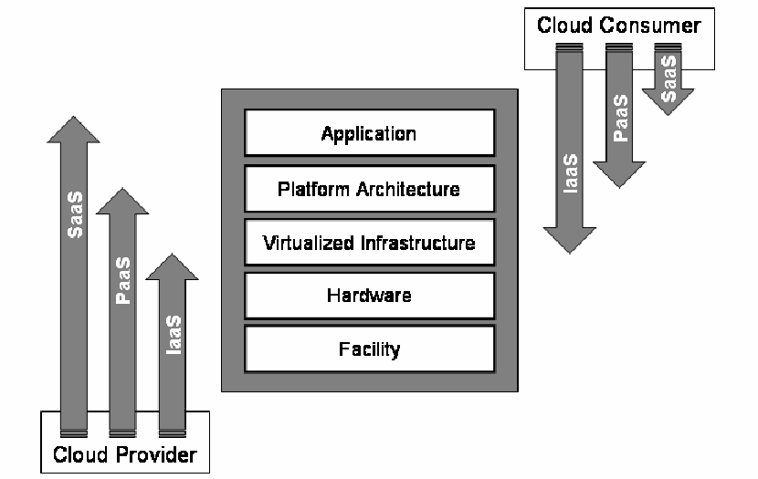
Figure 1: Differences in Scope and Control among Cloud Service Models
図1: クラウドサービスモデル間の適用範囲および制御の違い
未レビュー訳Some have argued that the distinction between IaaS and PaaS service models is fuzzy, and in many commercial offerings, the two are more alike than different [Arm10]. Nevertheless, these terms do serve a purpose, distinguishing between very basic support environments and environments having greater levels of support, and accordingly different allocations of control and responsibility between the cloud consumer and the cloud provider.
IaaSとPaaSのサービスモデルの区別は曖昧であり、多くの商用サービスでは両者の違いより共通点の方が多いという指摘がある [Arm10]。それでも、これらの用語には、非常に基本的な支援環境とより高いレベルの支援を備えた環境を区別し、それに応じてクラウド消費者とクラウドプロバイダー間の制御および責任の配分を区別する役割がある。
未レビュー訳2.3 Outsourcing and Accountability
2.3 外部委託と説明責任
While cloud computing can be implemented exclusively for an organization as an internal private cloud, its main thrust has been to provide a vehicle for outsourcing parts of the organizational computing environment to an outside party via a public cloud. As with any outsourcing of information technology services, concerns exist about the implications for computer security and privacy. The main issue centers on the risks associated with moving important applications or data from within the confines of the organization’s computing center to that of another organization (i.e., a public cloud), which is readily available for use by the general public.
クラウドコンピューティングは組織専用の内部プライベートクラウドとして実装することもできるが、主な狙いはパブリッククラウドを介して組織のコンピューティング環境の一部を外部に委託する手段を提供することである。情報技術サービスを外部委託する際と同様、コンピューターセキュリティおよびプライバシーへの影響が懸念される。主な問題は、重要なアプリケーションまたはデータを組織のコンピューティングセンター内から、一般の人々がすぐに利用できる別組織のコンピューティングセンター（すなわちパブリッククラウド）へ移すことに伴うリスクである。
Three broad classes of public clouds exist. The first class entails those with services that are provided at no cost to the consumer and are instead supported through advertisements. Search and electronic mail services are well-known examples. Such services may be limited to personal, non-commercial use. Information collected at registration and during use of the service may be combined with information obtained from other sources and used to deliver personalized advertisements to the consumer. Protection measures such as encrypted communications with the service may also be missing. The second class entails public clouds whose services are fee-based and free of advertisements. Services in this class can be similar to those of the first, but able to be offered at low cost to the consumer, because the terms of service delivery are non-negotiable and able to be modified unilaterally at the discretion of the cloud provider. Protection mechanisms that are beyond those of the first class and configurable by the consumer are typically provided. The third class entails public clouds whose services are fee-based and whose terms of service are negotiated between the organization and the cloud provider. While services are able to be tailored to the needs of the organization, the costs are generally dependent on the degree of deviation from the corresponding non-negotiable, fee-based services offered by the cloud provider.
パブリッククラウドには大きく3つの種類がある。第1の種類は、消費者に無料でサービスを提供し、広告によって運営を支えるものである。検索および電子メールサービスがよく知られた例である。このようなサービスは個人の非商用利用に限定される場合がある。サービスの登録時および利用時に収集した情報を他の情報源から得た情報と組み合わせ、消費者向けの個人別広告の配信に利用する場合がある。サービスとの通信暗号化などの保護措置が欠けていることもある。第2の種類は、有料で広告のないサービスを提供するパブリッククラウドである。この種類のサービスは第1の種類と似ている場合もあるが、サービス提供条件が交渉不能であり、クラウドプロバイダーの裁量で一方的に変更可能であるため、消費者に低コストで提供できる。第1の種類を超える、消費者が設定可能な保護メカニズムが通常提供される。第3の種類は、有料サービスを提供し、組織とクラウドプロバイダーの間でサービス条件を交渉するパブリッククラウドである。組織のニーズに合わせてサービスを調整できる一方、費用は通常、クラウドプロバイダーが提供する対応する交渉不能の有料サービスからどの程度変更するかに応じて決まる。
未レビュー訳Reducing cost and increasing efficiency are primary motivations for moving towards a public cloud, but relinquishing responsibility for security should not be. Ultimately, the organization is accountable for the choice of public cloud and the security and privacy of the outsourced service. Monitoring and addressing security issues that arise remain in the purview of the organization, as does oversight over other important issues such as performance and data privacy. Because cloud computing brings with it new security challenges, it is essential for an organization to oversee and manage how the cloud provider secures and maintains the computing environment and ensures data is kept secure.
コスト削減と効率向上はパブリッククラウドへの移行を促す主な動機だが、セキュリティに対する責任を放棄することが動機であってはならない。最終的な責任は組織にあり、パブリッククラウドの選択、および外部委託したサービスのセキュリティとプライバシーについて説明責任を負う。発生するセキュリティ問題の監視と対処は組織の責任範囲にとどまり、性能やデータプライバシーなど他の重要事項に対する監督も同様である。クラウドコンピューティングは新たなセキュリティ課題をもたらすため、クラウドプロバイダーがコンピューティング環境をどのように保護・維持し、データの安全を確保するかを組織が監督・管理することが不可欠である。
3. Public Cloud Services
3. パブリッククラウドサービス
未レビュー訳The outlook on cloud computing services can vary significantly among organizations, because of inherent differences in such things as the intended purpose, assets held, legal obligations, exposure to the public, threats faced, and tolerance to risk. For example, a government organization that predominantly handles data about individual citizens of the country has different privacy and security objectives from a government organization that does not. Similarly, the security objectives of a government organization that prepares and disseminates information for public consumption are different from one that deals mainly with classified information for its own internal use. From a risk perspective, determining the suitability of cloud services for an organization is not possible without understanding the context in which the organization operates and the consequences from the plausible threats it faces.
クラウドコンピューティングサービスに対する見方は、目的、保有資産、法的義務、一般への露出、直面する脅威、リスク許容度などに本質的な違いがあるため、組織によって大きく異なり得る。たとえば、国民個人に関するデータを主に扱う政府組織と、そうでない政府組織では、プライバシーおよびセキュリティの目標が異なる。同様に、一般向け情報を作成・配布する政府組織のセキュリティ目標は、主に内部利用の機密情報を扱う政府組織のものとは異なる。リスクの観点からは、組織が活動する状況および直面する起こり得る脅威がもたらす結果を理解しなければ、クラウドサービスがその組織に適しているかを判断できない。
The set of security and privacy objectives of an organization, therefore, is a key factor for decisions about outsourcing information technology services and, in particular, for decisions about transitioning organizational resources to a public cloud and a specific provider’s services and service arrangements. What works for one organization may not necessarily work for another. In addition, practical considerations apply—most organizations cannot afford financially to protect all computational resources and assets at the highest degree possible and must prioritize available options based on cost as well as criticality and sensitivity. When considering the potential benefits of public cloud computing, it is important to keep the organizational security and privacy objectives in mind and to act accordingly. Ultimately, a decision on cloud computing rests on a risk analysis of the tradeoffs involved.2
したがって、組織のセキュリティおよびプライバシー目標は、情報技術サービスを外部委託するかどうか、特に組織の資源をパブリッククラウドへ移行するか、また特定のプロバイダーのサービスや契約を選択するかを決定する際の重要な要素である。ある組織に適するものが、別の組織にも適するとは限らない。さらに、実務上の考慮事項もある。ほとんどの組織は、すべてのコンピューティング資源および資産を可能な限り最高水準で保護する経済的余裕がなく、コストに加えて重要度や機微性に基づき利用可能な選択肢に優先順位を付けなければならない。パブリッククラウドコンピューティングの潜在的な利点を検討する際は、組織のセキュリティおよびプライバシー目標を念頭に置き、それに応じて行動することが重要である。最終的に、クラウドコンピューティングに関する意思決定は、トレードオフのリスク分析に基づく。2
未レビュー訳3.1 Service Agreements
3.1 サービス合意
Specifications for public cloud services and service arrangements are generally called service agreements or service contracts. A service agreement defines the terms and conditions for access and use of the services offered by the cloud provider. It also establishes the period of service, conditions for termination, and disposition of data (e.g., preservation period) upon termination. The complete terms and conditions for a cloud service agreement are usually stipulated in multiple documents, which can typically include a Service Level Agreement (SLA), privacy policy, acceptable use policy, and terms of use [Bra10]. An SLA represents the understanding between the cloud consumer and cloud provider about the expected level of service to be delivered and, in the event that the provider fails to deliver the service at the level specified, the compensation available to the cloud consumer. The privacy policy documents information handling practices and the way consumer information is collected, used, and managed by the cloud provider, while the acceptable use policy identifies prohibited behaviors by cloud consumers. The terms of use cover other important details such as licensing of services,
パブリッククラウドのサービスおよびサービス契約の仕様は、一般にサービス合意またはサービス契約と呼ばれる。サービス合意は、クラウドプロバイダーが提供するサービスへのアクセスおよび利用条件を定める。また、サービス期間、終了条件、終了時のデータ処理（保存期間など）も定める。クラウドサービス合意の完全な条件は通常、複数の文書に規定され、典型的にはサービスレベル合意（SLA）、プライバシーポリシー、利用規定および利用条件が含まれる [Bra10]。SLAは、提供されるサービスの期待レベルと、プロバイダーが規定レベルでサービスを提供できなかった場合にクラウド消費者が受けられる補償について、クラウド消費者とプロバイダー間の合意を示す。プライバシーポリシーは、情報の取り扱い慣行およびプロバイダーが消費者情報を収集、利用、管理する方法を文書化する。利用規定は、クラウド消費者に禁止される行動を特定する。利用条件は、サービスのライセンス、
2The process to perform a risk analysis and manage risks is not discussed in this publication. For additional information, see NIST SP 800-30, Risk Management Guide for Information Technology Systems, and SP 800-37 Revision 1, Guide for Applying the Risk Management Framework to Federal Information Systems, at http://csrc.nist.gov/publications/PubsSPs.html. limitations on liability, and modifications to the terms of the agreement. Privacy and security risks depend to a great extent on the terms established in the service agreement.
2 リスク分析の実施およびリスク管理のプロセスは本出版物では論じない。追加情報については、NIST SP 800-30「情報技術システムのリスク管理ガイド」およびSP 800-37改訂第1版「連邦情報システムへのリスク管理フレームワーク適用ガイド」をhttp://csrc.nist.gov/publications/PubsSPs.htmlで参照。責任の制限、および合意条件の変更などを扱う。プライバシーとセキュリティのリスクは、サービス合意で定められる条件に大きく依存する。
未レビュー訳Two types of service agreements exist: predefined non-negotiable agreements and negotiated agreements [Bra10, UCG10]. Non-negotiable agreements are in many ways the basis for the economies of scale enjoyed by public cloud computing. The terms of service are prescribed completely by the cloud provider. They are typically not written with attention to federal privacy and security requirements [CIO10a]. Furthermore, with some offerings, the provider can make modifications to the terms of service unilaterally (e.g., by posting an updated version online) without giving any direct notification to the cloud consumer [Bra10].
サービス合意には、事前に定められた交渉不能な合意と交渉可能な合意の2種類がある [Bra10, UCG10]。交渉不能な合意は、多くの点でパブリッククラウドコンピューティングが享受する規模の経済の基礎となっている。サービス条件はクラウドプロバイダーが全面的に定める。通常、連邦政府のプライバシーおよびセキュリティ要件を考慮して作成されていない [CIO10a]。さらに、一部のサービスでは、クラウドプロバイダーが利用者に直接通知せず、サービス条件を一方的に変更できる（例: 更新版をオンラインで公開する）[Bra10]。
Negotiated service agreements are more like traditional outsourcing contracts for information technology services. They can be used to address an organization’s concerns about security and privacy policy, procedures, and technical controls, such as the vetting of employees, data ownership and exit rights, breach notification, isolation of tenant applications, data encryption and segregation, tracking and reporting service effectiveness, compliance with laws and regulations (e.g., Federal Information Security Management Act), and the use of validated products meeting national or international standards (e.g., Federal Information Processing Standard 140-2 for cryptographic modules).
交渉型サービス合意は、情報技術サービスの従来型外部委託契約により近い。従業員の審査、データ所有権と終了権、侵害通知、テナントアプリケーションの分離、データの暗号化と分離、サービスの有効性の追跡・報告、法令遵守（例: 連邦情報セキュリティ管理法）、および国家・国際標準を満たす検証済み製品の使用（例: 暗号モジュールに関する連邦情報処理標準140-2）など、セキュリティおよびプライバシーのポリシー、手順、技術的管理策に関する組織の懸念に対処するために利用できる。
Critical data and applications may require an agency to undertake a negotiated service agreement [Wall0]. Since points of negotiation can significantly perturb and negatively affect the economies of scale that a non-negotiable service agreement brings to public cloud computing, a negotiated service agreement is normally less cost effective. The outcome of a negotiation is also dependent on the size of the organization and the influence it can exert. Regardless of the type of service agreement, obtaining adequate legal and technical advice is recommended to ensure that the terms of service adequately meet the needs of the organization.
重要なデータおよびアプリケーションについては、機関が交渉型サービス合意を締結する必要がある場合がある [Wall0]。交渉可能な点によって、交渉不能なサービス合意がパブリッククラウドにもたらす規模の経済が大きく損なわれる可能性があるため、交渉型サービス合意は通常、費用対効果が低い。交渉の結果は、組織の規模および行使できる影響力にも左右される。サービス合意の種類にかかわらず、条件が組織のニーズを十分に満たすよう、適切な法務および技術面の助言を得ることが推奨される。
3.2 The Security and Privacy Upside
3.2 セキュリティおよびプライバシー面の利点
While one of the biggest obstacles facing public cloud computing is security, the cloud computing paradigm provides opportunities for innovation in provisioning security services that hold the prospect of improving the overall security of some organizations. The biggest beneficiaries are likely to be smaller organizations that have limited numbers of information technology administrators and security personnel, and can gain the economies of scale available to larger organizations with sizeable data centers, by transitioning to a public cloud.
パブリッククラウドコンピューティングが直面する最大の障害の一つはセキュリティだが、クラウドコンピューティングのパラダイムは、セキュリティサービスの提供に革新をもたらす機会を提供し、一部の組織のセキュリティ全体を改善できる可能性がある。最も大きな恩恵を受ける可能性が高いのは、情報技術管理者およびセキュリティ要員が限られており、パブリッククラウドへ移行することで、大規模なデータセンターを持つ大組織が得られる規模の経済を享受できる小規模組織である。
Opportunities for improved security also benefit privacy. That is, effective privacy can exist only upon a sound foundation of information security. However, privacy, just as security, has broad organizational, operational, and technical implications. While some aspects of privacy are closely related to the confidentiality, integrity, and availability objectives of security, other aspects are not. Instead, they involve important privacy-related principles and considerations that are addressed in law, regulations, and OMB guidance [CIO10b].
セキュリティ改善の機会はプライバシーにも利益をもたらす。効果的なプライバシーは、健全な情報セキュリティ基盤の上にのみ成り立つ。ただし、プライバシーもセキュリティと同様、組織、運用および技術に広く関わる。プライバシーの側面には、セキュリティの機密性、完全性および可用性の目標に密接に関連するものもあれば、そうでないものもある。後者は、法律、規則およびOMBガイダンスで扱われる重要なプライバシー原則および考慮事項に関わる [CIO10b]。
Potential areas of improvement where organizations may derive security and privacy benefits from transitioning to a public cloud computing environment include the following:
組織がパブリッククラウドコンピューティング環境へ移行することで、セキュリティおよびプライバシー上の利益を得られる可能性がある領域には、次が含まれる:
•Staff Specialization. Cloud providers, just as other organizations with large-scale computing facilities, have an opportunity for staff to specialize in security, privacy, and other areas of high interest and concern to the organization. Increases in the scale of computing induce specialization, which in turn allows security staff to shed other duties and concentrate exclusively on security and privacy issues. Through increased specialization, there is an opportunity for staff members to gain in-depth experience and training, take remedial actions, and make improvements to security and privacy more readily than otherwise would be possible with a more diverse set of duties.
•職員の専門化。大規模なコンピューティング施設を持つ他の組織と同様に、クラウドプロバイダーは、セキュリティ、プライバシー、その他組織にとって関心と懸念の高い領域に職員を専門化させる機会を有する。コンピューティング規模の拡大により専門化が進み、セキュリティ要員は他の職務から解放され、セキュリティとプライバシーの問題に専念できる。専門化の進展により、職員は多様な職務を担う場合よりも、深い経験やトレーニングを得て、是正措置を講じ、セキュリティとプライバシーを改善しやすくなる。
未レビュー訳•Platform Strength. The structure of cloud computing platforms is typically more uniform than that of most traditional computing centers. Greater uniformity and homogeneity facilitate platform hardening and enable better automation of security management activities like configuration control, vulnerability testing, security audits, and security patching of platform components. Information assurance and security response activities also profit from a uniform, homogeneous cloud infrastructure, as do system management activities, such as fault management, load balancing, and system maintenance. Similarly, infrastructure homogeneity benefits management controls employed to protect privacy. On the other hand, homogeneity means that a single flaw will be manifested throughout the cloud, potentially impacting all tenants and services. Many cloud computing environments meet standards for operational compliance and certification in areas such as healthcare (e.g., Health Insurance Portability and Accountability Act (HIPAA)), finance (e.g., Payment Card Industry Data Security Standard (PCI DSS)), security (e.g., ISO 27001, Information Security Management Systems - Requirements), and audit (e.g., Standards for Attestation Engagements (SSAE) No. 16), and may attain formal certification or attestation from an independent third party, to impart a level of assurance with regard to some recognized and generally accepted criteria.
•プラットフォームの堅牢性。クラウドコンピューティングプラットフォームの構造は、一般に従来型の多くのコンピューティングセンターより均一である。均一性と同質性が高いほど、プラットフォームの堅牢化が容易になり、構成管理、脆弱性試験、セキュリティ監査、プラットフォーム構成要素へのセキュリティパッチ適用などのセキュリティ管理活動をより適切に自動化できる。情報保証およびセキュリティ対応活動も、均一で同質なクラウド基盤から恩恵を受ける。障害管理、負荷分散、システム保守などのシステム管理活動も同様である。また、基盤の同質性はプライバシー保護のための管理策にも利点をもたらす。他方、同質性によって単一の欠陥がクラウド全体に広がり、すべてのテナントおよびサービスに影響する可能性もある。多くのクラウド環境は、医療（例: 医療保険の相互運用性と説明責任に関する法律（HIPAA））、金融（例: PCI DSS）、セキュリティ（例: ISO 27001「情報セキュリティマネジメントシステム—要求事項」）、監査（例: SSAE第16号）などの分野で運用コンプライアンスおよび認証の標準を満たし、認知され一般に受け入れられている基準に関する一定の保証水準を付与するため、独立した第三者による正式な認証または証明を得ている場合がある。
未レビュー訳•Resource Availability. The scalability of cloud computing facilities allows for greater availability. Redundancy and disaster recovery capabilities are built into cloud computing environments and on-demand resource capacity can be used for better resilience when faced with increased service demands or distributed denial of service attacks, and for quicker recovery from serious incidents. When an incident occurs, an opportunity also exists to contain attacks and capture event information more readily, with greater detail and less impact on production. Availability can also bolster privacy through better opportunities for individuals to access and correct records and for records to be ready for use when needed for the purposes collected [CIO10b]. In some cases, however, such resiliency and capacity can have a downside. For example, an unsuccessful distributed denial of service attack can quickly consume large amounts of resources to defend against, which could inflict financial damage to an organization, if charges for increased usage in such situations are upheld. Access to vast amounts of inexpensive storage may also engender more information to be collected than needed or information to be retained longer than necessary.
•資源の可用性。クラウドコンピューティング施設の拡張性は、可用性の向上を可能にする。冗長性および災害復旧機能がクラウド環境に組み込まれており、オンデマンドの資源容量は、サービス需要の増加や分散型サービス妨害攻撃に直面した際の耐障害性向上、および重大なインシデントからの迅速な復旧に活用できる。インシデント発生時には、攻撃を封じ込め、イベント情報をより詳細に、かつ本番環境への影響を抑えて取得できる可能性もある。可用性は、個人が記録にアクセスして訂正する機会を改善し、収集目的のため必要なときに記録を利用可能にすることで、プライバシーの強化にもつながる [CIO10b]。ただし、場合によっては、このような回復力と容量に欠点がある。たとえば、失敗した分散型サービス妨害攻撃への防御でも大量の資源が急速に消費され、そのような状況での利用増加分の料金が請求されると、組織に金銭的損害を与える可能性がある。安価な大容量ストレージを利用できるため、必要以上の情報収集や必要以上に長期間の情報保持につながる可能性もある。
未レビュー訳•Backup and Recovery. The backup and recovery policies and procedures of a cloud provider may be superior to those of the organization and may be more robust. Data maintained within a cloud can be more available, faster to restore, and more reliable in many circumstances than that maintained in a traditional data center, and also meet offsite backup storage and geographical compliance requirements. Under such conditions, cloud services could also serve as an offsite repository for an organization’s data center, in lieu of more traditional tape-based offsite storage [Kum08]. However, network performance over the Internet and the amount of data involved are limiting factors that can affect restoration.
•バックアップおよび復旧。クラウドプロバイダーのバックアップおよび復旧ポリシー・手順は、組織のものより優れており、より堅牢な場合がある。クラウド内で維持されるデータは、多くの場合、従来のデータセンターで維持されるデータより可用性が高く、迅速に復元でき、信頼性も高い。また、オフサイトバックアップストレージおよび地理的コンプライアンス要件を満たす場合もある。このような条件下では、より従来型のテープによるオフサイト保管に代えて、クラウドサービスを組織のデータセンター用オフサイト保管場所として利用できる [Kum08]。ただし、インターネット経由のネットワーク性能と対象データ量は、復元に影響する制約要因である。
未レビュー訳•Mobile Endpoints. The architecture of a cloud solution extends to the client at the service endpoint that is used to access hosted applications. Cloud clients can be general-purpose Web browsers or more special-purpose applications. Since the main computational resources needed by cloud-based applications are typically held by the cloud provider, clients can generally be lightweight computationally and easily supported on laptops, notebooks, and netbooks, as well as embedded devices such as smart phones and tablets, benefiting the productivity of an increasingly mobile workforce.3 One caveat to this point is that mobile devices, particularly embedded devices, require proper set up and protection to be of benefit overall, which include restrictions on the type of data maintained on the device [Jan08].
•モバイルエンドポイント。クラウドソリューションのアーキテクチャは、ホストされたアプリケーションへのアクセスに使用するサービスエンドポイント上のクライアントまで及ぶ。クラウドクライアントは汎用Webブラウザーまたはより専用的なアプリケーションであり得る。クラウドベースのアプリケーションに必要な主要なコンピューティング資源は通常クラウドプロバイダーが保持するため、クライアントは一般に軽量であり、ノートPC、ノートブック、ネットブック、スマートフォンやタブレットなどの組み込み機器でも容易にサポートできる。このため、モバイル化が進む労働力の生産性向上に役立つ。3 ただし、モバイル機器、特に組み込み機器は、全体的な利点を得るため、機器に保存するデータの種類の制限など、適切な設定および保護が必要である [Jan08]。
未レビュー訳•Data Concentration. Data maintained and processed in a public cloud may present less of a risk to an organization with a mobile workforce than having that data dispersed on portable computers, embedded devices, or removable media out in the field, where theft and loss routinely occur. That is not to say, however, that no risk exists when data is concentrated.4 Many organizations have made the transition to support access to organizational data from mobile devices to improve workflow management and gain other operational efficiencies and productivity benefits. Carefully constructed applications can restrict access and services to only the data and tasks that correspond strictly with the responsibilities a user needs to accomplish, limiting data exposure in the event of a device compromise.
•データの集中。パブリッククラウドで維持・処理されるデータは、盗難や紛失が頻繁に起こる現場のポータブルコンピューター、組み込み機器またはリムーバブルメディアに分散している場合に比べ、モバイル要員を抱える組織にとってリスクが低くなる可能性がある。ただし、データを集中させてもリスクがなくなるわけではない。4 多くの組織は、ワークフロー管理を改善し、その他の運用効率や生産性向上を得るため、モバイル機器から組織データへのアクセスを可能にしてきた。慎重に構築されたアプリケーションは、ユーザーの責任遂行に厳密に対応するデータとタスクだけにアクセスおよびサービスを制限し、機器侵害時のデータ露出を制限できる。
未レビュー訳3.3 The Security and Privacy Downside
3.3 セキュリティおよびプライバシー面の欠点
Besides its many potential benefits for security and privacy, public cloud computing also brings with it potential areas of concern, when compared with computing environments found in traditional data centers. Some of the more fundamental concerns include the following:
セキュリティとプライバシーに多くの潜在的利点がある一方、パブリッククラウドコンピューティングには、従来のデータセンターのコンピューティング環境と比べて懸念される領域もある。より基本的な懸念には次が含まれる:
•System Complexity. A public cloud computing environment is extremely complex compared with that of a traditional data center. Many components make up a public cloud, resulting in a large attack surface. Besides components for general computing, such as deployed applications, virtual machine monitors, guest virtual machines, data storage, and supporting middleware, there are also components that the management backplane comprises, such as those for self-service, resource metering, quota management, data replication and recovery, service level monitoring, workload management, and cloud bursting.5 Cloud services themselves may also be realized through nesting and layering with services from other cloud providers. Components change over time as upgrades and feature improvements occur, confounding matters further.
•システムの複雑さ。パブリッククラウドコンピューティング環境は、従来のデータセンターに比べて非常に複雑である。多くの構成要素で成り立つため、攻撃対象領域が広い。配備済みアプリケーション、仮想マシンモニター、ゲスト仮想マシン、データストレージ、支援ミドルウェアなどの一般的なコンピューティング構成要素に加え、管理バックプレーンを構成するセルフサービス、資源計測、割当量管理、データ複製と復旧、サービスレベル監視、ワークロード管理、クラウドバースティングなどの構成要素もある。5 クラウドサービス自体も、他のクラウドプロバイダーのサービスと入れ子になり、階層化されて実現される場合がある。アップグレードや機能改善に伴い構成要素が時間とともに変化するため、問題はさらに複雑になる。
未レビュー訳Security depends not only on the correctness and effectiveness of many components, but also on the interactions among them. Challenges exist in understanding and securing application programming interfaces that are often proprietary to a cloud provider. The number of possible interactions between components increases as the square of the number of components, which pushes the level of complexity upward. Complexity typically relates inversely to security, with greater complexity giving rise to increased vulnerability [Avo00, Gee08, Sch00]. Decreases in security also heighten privacy risks related to the loss or unauthorized access, destruction, use, modification or disclosure of personal data.
セキュリティは、多数の構成要素の正確性と有効性だけでなく、それらの相互作用にも依存する。クラウドプロバイダー独自のものであることが多いアプリケーションプログラミングインターフェースを理解し、保護することには課題がある。構成要素間に可能な相互作用の数は、構成要素数の二乗に比例して増え、複雑さを高める。複雑さは通常、セキュリティと逆相関し、複雑さが増すほど脆弱性が高まる [Avo00, Gee08, Sch00]。セキュリティの低下は、個人データの喪失、または不正なアクセス、破壊、利用、変更もしくは開示に関するプライバシーリスクも高める。
•Shared Multi-tenant Environment. Public cloud services offered by providers have a serious underlying complication—client organizations typically share components and resources with other consumers that are unknown to them. Rather than using physical separation of resources as a control, cloud computing places greater dependence on logical separation at multiple layers of the application stack [Owa10]. While not unique to cloud computing, logical separation is a non-trivial problem that is exacerbated by the scale of cloud computing (e.g., [Bos11]). An attacker could pose as a consumer to exploit vulnerabilities from within the cloud environment, overcome the separation mechanisms, and gain unauthorized access. Access to organizational data and resources could also inadvertently be exposed to other consumers or be blocked from legitimate consumers through a configuration or software error [Opp03].
•共有マルチテナント環境。プロバイダーが提供するパブリッククラウドサービスには、深刻な根本的課題がある。利用組織は通常、相手を知らない他の消費者と構成要素および資源を共有する。資源を物理的に分離する管理策の代わりに、クラウドコンピューティングはアプリケーションスタックの複数層で論理的分離に大きく依存する [Owa10]。論理的分離はクラウド固有の問題ではないが、クラウドの規模により問題が悪化する（例: [Bos11]）。攻撃者が消費者になりすましてクラウド環境内から脆弱性を悪用し、分離メカニズムを突破して不正アクセスする可能性がある。構成またはソフトウェアの誤りにより、組織のデータおよび資源が他の消費者に誤って露出したり、正当な消費者が利用できなくなったりする可能性もある [Opp03]。
未レビュー訳Threats to network and computing infrastructures continue to increase each year and become more sophisticated. Having to share an infrastructure with unknown outside parties can be a major drawback for some applications and require a high level of assurance pertaining to the strength of the security mechanisms used for logical separation.
ネットワークおよびコンピューティング基盤に対する脅威は毎年増加し、より巧妙になっている。未知の外部組織と基盤を共有することは、一部のアプリケーションにとって大きな欠点となり、論理的分離に用いるセキュリティメカニズムの強度に関して高い保証レベルを必要とする。
•Internet-facing Services. Public cloud services are delivered over the Internet, exposing the administrative interfaces used to self-service and manage an account, as well as non-administrative interfaces used to access deployed services.6 Applications and data that were previously accessed from the confines of an organization’s intranet, but moved to a public cloud, must now face increased risk from network threats that were previously defended against at the perimeter of the organization’s intranet and from new threats that target the exposed interfaces. The performance and quality of services delivered over the Internet may also be at issue. The effect is somewhat analogous to the inclusion of wireless access points into an organization’s intranet at the onset of that technology, necessitating additional safeguards for secure use.
•インターネット公開サービス。パブリッククラウドサービスはインターネット経由で提供されるため、セルフサービスやアカウント管理に用いる管理インターフェース、および配備済みサービスへのアクセスに用いる非管理インターフェースが外部に露出する。6 以前は組織のイントラネット内からアクセスしていたアプリケーションおよびデータをパブリッククラウドへ移行すると、イントラネット境界で防御されていたネットワーク脅威および露出したインターフェースを標的とする新たな脅威にさらされる。インターネット経由で提供されるサービスの性能と品質も問題となり得る。この状況は、技術導入初期に組織のイントラネットへ無線アクセスポイントを組み込んだ場合にやや似ており、安全に利用するための追加保護策が必要となる。
未レビュー訳Relying on remote administrative access as the means for the organization to manage assets that are held within the cloud also increases risk, compared with a traditional data center, where administrative access to platforms can be restricted to direct or internal connections (e.g., [Som11]). Similarly, remote administrative access of the cloud infrastructure, if done by the cloud provider, is also a concern. When taken together with the previous two items, a highly complex, multi-tenanted computing environment, whose services are Internet-facing and available to the public, arguably affords a potentially attractive attack surface that must be carefully safeguarded.
クラウド内に保持されている資産を組織が管理する手段としてリモート管理アクセスに依存すると、従来型データセンターで管理アクセスを直接接続または内部接続（例: [Som11]）に制限できる場合に比べてリスクが高まる。同様に、クラウドプロバイダーがクラウド基盤をリモート管理することも懸念事項である。前述の2項目と合わせると、非常に複雑なマルチテナントコンピューティング環境がインターネットに公開され、一般に利用可能であることは、魅力的な攻撃対象領域となる可能性があり、慎重な保護を要する。
•Loss of Control. While security and privacy concerns in cloud computing services are similar to those of traditional non-cloud services, they are amplified by external control over organizational assets and the potential for mismanagement of those assets. Transitioning to a public cloud requires a transfer of responsibility and control to the cloud provider over information as well as system components that were previously under the organization’s direct control. The transition is usually accompanied by the lack of a direct point of contact with the management of operations and influence over decisions made about the computing environment. This situation makes the organization dependent on the cooperation of the cloud provider to carry out activities that span the responsibilities of both parties, such as continuous monitoring and incident response. Compliance with data protection laws and regulations is another important area of joint responsibility that requires coordination with and the cooperation of the cloud provider.
•制御の喪失。クラウドコンピューティングサービスにおけるセキュリティおよびプライバシーの懸念は従来型の非クラウドサービスと似ているが、組織資産に対する外部制御と資産の管理不備の可能性によって増幅される。パブリッククラウドへ移行すると、以前は組織が直接管理していた情報およびシステム構成要素に対する責任と制御をクラウドプロバイダーへ移転する必要がある。通常、運用管理への直接の連絡先と、コンピューティング環境に関する意思決定への影響力も失われる。この状況により、継続的監視やインシデント対応など、両当事者の責任にまたがる活動の実施をクラウドプロバイダーの協力に依存する。データ保護法令への準拠も、調整とクラウドプロバイダーの協力を要する重要な共同責任領域である。
未レビュー訳Loss of control over both the physical and logical aspects of the system and data diminishes the organization’s ability to maintain situational awareness, weigh alternatives, set priorities, and effect changes in security and privacy that are in the best interest of the organization. Legal protections for privacy may also be affected when information is stored with a third-party service provider [Cou09, Han06]. Under such conditions, maintaining accountability can be more challenging, offsetting some of the potential benefits discussed earlier.
システムおよびデータの物理的・論理的側面に対する制御を失うと、状況認識を維持し、代替案を比較検討し、優先順位を定め、組織の利益に資するセキュリティおよびプライバシー上の変更を実施する能力が低下する。情報を第三者サービスプロバイダーに保存すると、プライバシーに関する法的保護も影響を受ける可能性がある [Cou09, Han06]。このような条件下では説明責任の維持が難しくなり、先に述べた潜在的な利点の一部を相殺する。
A more detailed discussion of the security and privacy issues that stem from these fundamental concerns is given in the next chapter.
これらの根本的懸念に起因するセキュリティおよびプライバシー上の問題については、次章で詳しく論じる。
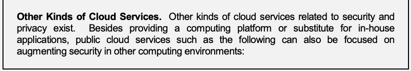
抽出したテキスト（原本と未照合・参考）
Other Kinds of Cloud Services. Other kinds of cloud services related to security and privacy exist. Besides providing a computing platform or substitute for in-house applications, public cloud services such as the following can also be focused on augmenting security in other computing environments:抽出したテキストの訳（原本と未照合・参考）
その他の種類のクラウドサービス。セキュリティとプライバシーに関連する他の種類のクラウドサービスも存在する。社内アプリケーション向けのコンピューティングプラットフォームや代替手段を提供するだけでなく、次のようなパブリッククラウドサービスは、他のコンピューティング環境のセキュリティ強化を目的とする場合もある: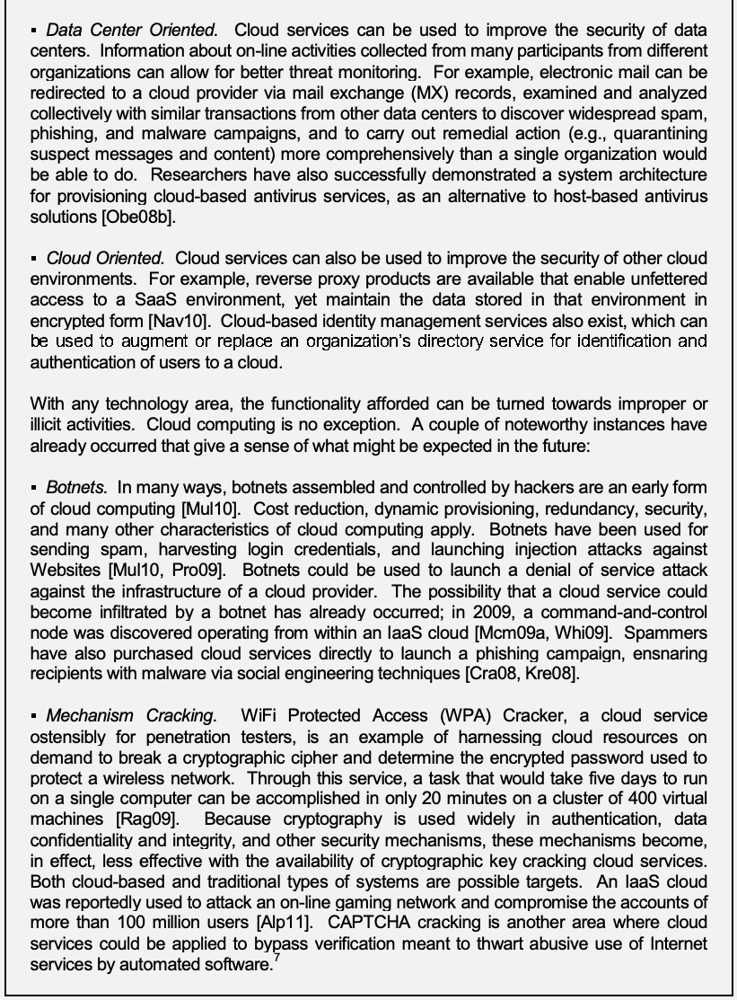
抽出したテキスト（原本と未照合・参考）
▪ Data Center Oriented. Cloud services can be used to improve the security of data centers. Information about on-line activities collected from many participants from different organizations can allow for better threat monitoring. For example, electronic mail can be redirected to a cloud provider via mail exchange (MX) records, examined and analyzed collectively with similar transactions from other data centers to discover widespread spam, phishing, and malware campaigns, and to carry out remedial action (e.g., quarantining suspect messages and content) more comprehensively than a single organization would be able to do. Researchers have also successfully demonstrated a system architecture for provisioning cloud-based antivirus services, as an alternative to host-based antivirus solutions [Obe08b]. ▪ Cloud Oriented. Cloud services can also be used to improve the security of other cloud environments. For example, reverse proxy products are available that enable unfettered access to a SaaS environment, yet maintain the data stored in that environment in encrypted form [Nav10]. Cloud-based identity management services also exist, which can be used to augment or replace an organization’s directory service for identification and authentication of users to a cloud. With any technology area, the functionality afforded can be turned towards improper or illicit activities. Cloud computing is no exception. A couple of noteworthy instances have already occurred that give a sense of what might be expected in the future: ▪ Botnets. In many ways, botnets assembled and controlled by hackers are an early form of cloud computing [Mul10]. Cost reduction, dynamic provisioning, redundancy, security, and many other characteristics of cloud computing apply. Botnets have been used for sending spam, harvesting login credentials, and launching injection attacks against Websites [Mul10, Pro09]. Botnets could be used to launch a denial of service attack against the infrastructure of a cloud provider. The possibility that a cloud service could become infiltrated by a botnet has already occurred; in 2009, a command-and-control node was discovered operating from within an IaaS cloud [Mcm09a, Whi09]. Spammers have also purchased cloud services directly to launch a phishing campaign, ensnaring recipients with malware via social engineering techniques [Cra08, Kre08]. ▪ Mechanism Cracking. WiFi Protected Access (WPA) Cracker, a cloud service ostensibly for penetration testers, is an example of harnessing cloud resources on demand to break a cryptographic cipher and determine the encrypted password used to protect a wireless network. Through this service, a task that would take five days to run on a single computer can be accomplished in only 20 minutes on a cluster of 400 virtual machines [Rag09]. Because cryptography is used widely in authentication, data confidentiality and integrity, and other security mechanisms, these mechanisms become, in effect, less effective with the availability of cryptographic key cracking cloud services. Both cloud-based and traditional types of systems are possible targets. An IaaS cloud was reportedly used to attack an on-line gaming network and compromise the accounts of more than 100 million users [Alp11]. CAPTCHA cracking is another area where cloud services could be applied to bypass verification meant to thwart abusive use of Internet services by automated software.7抽出したテキストの訳（原本と未照合・参考）
▪ データセンター向け。クラウドサービスはデータセンターのセキュリティ向上に利用できる。異なる組織の多数の参加者から収集したオンライン活動情報により、脅威監視を改善できる。たとえば、電子メールをメール交換（MX）レコード経由でクラウドプロバイダーに転送し、調査し、他のデータセンターからの同様の取引と合わせて分析することで、広範なスパム、フィッシングおよびマルウェア攻撃を発見し、疑わしいメッセージやコンテンツの隔離などの是正措置を、単独の組織より包括的に実施できる。研究者は、ホストベースのウイルス対策ソリューションの代替として、クラウドベースのウイルス対策サービスを提供するシステムアーキテクチャの実現にも成功している [Obe08b]。 ▪ クラウド向け。クラウドサービスは他のクラウド環境のセキュリティ向上にも利用できる。たとえば、SaaS環境への自由なアクセスを可能にしながら、その環境に保存されたデータを暗号化状態に維持するリバースプロキシ製品がある [Nav10]。また、クラウドへのユーザー識別および認証のため、組織のディレクトリーサービスを補完または置換できるクラウドベースのアイデンティティ管理サービスも存在する。どの技術領域でも、提供される機能は不適切または違法な活動に利用される可能性がある。クラウドコンピューティングも例外ではない。すでに注目すべき事例がいくつか発生しており、今後起こり得ることを示唆している: ▪ ボットネット。多くの点で、ハッカーが構築・制御するボットネットはクラウドコンピューティングの初期形態である [Mul10]。コスト削減、動的な資源割当、冗長性、セキュリティなど、クラウドコンピューティングの多くの特性を備える。ボットネットはスパム送信、ログイン資格情報の収集、Webサイトへのインジェクション攻撃に使用されてきた [Mul10, Pro09]。クラウドプロバイダーの基盤へのサービス妨害攻撃にも使用される可能性がある。クラウドサービスがボットネットに侵入される可能性はすでに現実となっており、2009年にはIaaSクラウド内部でコマンド・アンド・コントロールノードが稼働しているのが発見された [Mcm09a, Whi09]。スパマーがクラウドサービスを直接購入してフィッシング攻撃を開始し、ソーシャルエンジニアリングを通じて受信者にマルウェアを仕掛けた事例もある [Cra08, Kre08]。 ▪ 暗号解読。侵入テスト担当者向けとうたうクラウドサービス、WiFi Protected Access（WPA）Crackerは、オンデマンドでクラウド資源を活用し、暗号を解読して無線ネットワークの保護に使用される暗号化パスワードを特定する例である。このサービスでは、単一のコンピューターで実行すると5日かかる作業を、400台の仮想マシンのクラスター上でわずか20分で完了できる [Rag09]。認証、データ機密性・完全性およびその他のセキュリティメカニズムに暗号が広く使用されているため、暗号鍵解読クラウドサービスが利用可能になると、これらのメカニズムは事実上、有効性が低下する。クラウドベースと従来型の両方のシステムが標的になり得る。IaaSクラウドを使ったオンラインゲームネットワークへの攻撃により、1億人を超えるユーザーのアカウントが侵害されたと報告されている [Alp11]。CAPTCHA解読も、インターネットサービスの不正利用を防ぐための検証を自動ソフトウェアで回避する目的でクラウドサービスを利用できる分野である。74. Key Security and Privacy Issues
4. 主要なセキュリティおよびプライバシー上の課題
未レビュー訳Although the emergence of cloud computing is a recent development, insights into critical aspects of security can be gleaned from reported experiences of early adopters and also from researchers analyzing and experimenting with available cloud provider platforms and associated technologies. The sections below highlight privacy and security-related issues that are believed to have long-term significance for public cloud computing and, in many cases, for other cloud computing service models. Where possible, examples of previously exhibited or identified problems are provided to illustrate an issue. The examples are not exhaustive and may cover only one aspect of a more general issue. For many of the issues, the specific problems discussed have been resolved. Nevertheless, the broader issue persists in most cases and has the potential to be expressed again in other ways among the various service models. Security and privacy considerations that stem from information technology outsourcing also exist; they are covered in the next chapter and complement the material below.
クラウドコンピューティングの登場は最近のことだが、初期導入者から報告された経験や、利用可能なクラウドプロバイダープラットフォームおよび関連技術を分析・実験する研究者から、セキュリティの重要な側面に関する知見を得られる。以下の各節では、パブリッククラウドコンピューティング、また多くの場合は他のクラウドサービスモデルにおいて長期的に重要と考えられる、プライバシーおよびセキュリティ関連の問題を取り上げる。可能な場合、問題を例示するため、以前に発生または特定された問題を示す。例は網羅的ではなく、より一般的な問題の一側面だけを扱うことがある。取り上げた個別の問題の多くは解決済みである。しかし、より広範な問題は多くの場合依然として存在し、さまざまなサービスモデルで別の形で再発する可能性がある。情報技術の外部委託に起因するセキュリティおよびプライバシーの考慮事項もあり、次章で扱う。これらは以下の内容を補完する。
Because cloud computing has grown out of an amalgamation of technologies, including service oriented architecture, virtualization, Web 2.0, and utility computing, many of the privacy and security issues involved can be viewed as known problems cast in a new setting. The importance of their combined effect in this setting, however, should not be discounted. Public cloud computing does represent a thought-provoking paradigm shift from conventional norms to an open deperimeterized organizational infrastructure—at the extreme, displacing applications from one organization’s infrastructure to the infrastructure of another organization, where the applications of potential adversaries may also operate.
クラウドコンピューティングは、サービス指向アーキテクチャ、仮想化、Web 2.0およびユーティリティーコンピューティングなどの技術を統合して発展したため、関連するプライバシーおよびセキュリティ上の問題の多くは、既知の問題を新たな環境に持ち込んだものと見なせる。しかし、この環境でそれらが組み合わさった影響を軽視すべきではない。パブリッククラウドコンピューティングは、従来の規範から、境界を開放・解体した組織基盤への、示唆に富むパラダイムシフトである。極端な場合、アプリケーションがある組織の基盤から別組織の基盤へ移され、そこでは潜在的な敵対者のアプリケーションも稼働し得る。
4.1 Governance
4.1 ガバナンス
Governance implies control and oversight by the organization over policies, procedures, and standards for application development and information technology service acquisition, as well as the design, implementation, testing, use, and monitoring of deployed or engaged services. With the wide availability of cloud computing services, lack of organizational controls over employees engaging such services arbitrarily can be a source of problems. While cloud computing simplifies platform acquisition, it doesn't alleviate the need for governance; instead, it has the opposite effect, amplifying that need.
ガバナンスとは、アプリケーション開発および情報技術サービス調達に関するポリシー、手順、標準に加え、配備または契約したサービスの設計、実装、試験、利用および監視について、組織が管理・監督することを意味する。クラウドコンピューティングサービスを広く利用できる状況では、従業員が任意にサービスを利用することに対する組織的管理の欠如が問題の原因となる場合がある。クラウドコンピューティングはプラットフォームの調達を簡素化するが、ガバナンスの必要性をなくすものではない。むしろ、その必要性を増大させる。
The ability to reduce capital investment for computing resources, and instead, satisfy computational needs through operational expenses is an advantage of cloud computing. Cloud computing can lower the initial cost of deploying new services and shorten the time required to gain a tangible benefit from the investment (i.e., accelerate the time-to-value), thus better aligning expense with actual use.8 However, the normal processes and procedures an organization uses to acquire computational resources as capital expenditures may be easily bypassed by a department or an individual, and the procuration obscured under day-to-day operational expenses.9 If such actions are not governed by an organization, its policies and procedures for privacy, security, and oversight could be overlooked and the organization put at risk. For example, vulnerable systems could be deployed, legal regulations could be ignored, charges could amass quickly to unacceptable levels, resources could be used for unsanctioned purposes, or other untoward effects could occur.
コンピューティング資源への資本投資を削減し、代わりに運用費でコンピューティング需要を満たせることはクラウドコンピューティングの利点である。クラウドコンピューティングは新サービス導入時の初期費用を下げ、投資から実質的な利益を得るまでの時間（すなわち価値実現までの時間）を短縮し、実際の利用状況により費用を合わせやすくする。8 ただし、資本支出としてコンピューティング資源を調達するために組織が通常用いるプロセスや手順は、部門または個人によって簡単に迂回され、調達が日々の運用費に紛れて見えなくなる可能性がある。9 そのような行動を組織が統制しなければ、プライバシー、セキュリティおよび監督に関するポリシーや手順が見落とされ、組織がリスクにさらされる可能性がある。たとえば、脆弱なシステムの配備、法規制の無視、料金の急速な不許容水準への増大、認可されていない目的での資源利用など、望ましくない影響が生じ得る。
未レビュー訳A study involving more than nine hundred information technology professionals in Europe and the United States indicates a strong concern by participants that cloud computing services may have been deployed without their knowledge in parts of their respective organizations [Pon10]. The issue is somewhat akin to the problem with individuals setting up rogue wireless access points tied into the organizational infrastructure—without proper governance, the organizational computing infrastructure could be transformed into a sprawling, unmanageable mix of insecure services. Organizational practices pertaining to the policies, procedures, and standards used for application development and service acquisition, as well as the design, implementation, testing, use, and monitoring of deployed or engaged services, should be extended to cover cloud computing environments.
欧州および米国の900人を超える情報技術専門家を対象とした調査では、参加者が所属する組織の一部で、本人たちの知らないうちにクラウドコンピューティングサービスが導入されていた可能性に対し、強い懸念が示された [Pon10]。これは、個人が不正な無線アクセスポイントを設置して組織基盤へ接続する問題にやや似ている。適切なガバナンスがなければ、組織のコンピューティング基盤は、安全でないサービスが無秩序に広がる、管理不能な混在環境へ変わり得る。アプリケーション開発およびサービス調達のポリシー、手順、標準、ならびに配備・契約したサービスの設計、実装、試験、利用および監視に関する組織的慣行を、クラウドコンピューティング環境にも適用すべきである。
Dealing with cloud services requires attention to the roles and responsibilities involved between the organization and cloud provider, particularly with respect to managing risks and ensuring organizational requirements are met. Ensuring systems are secure and risk is managed is challenging in any environment and even more daunting with cloud computing. Audit mechanisms and tools should be in place to determine how data is stored, protected, and used, to validate services, and to verify policy enforcement. A risk management program should also be in place that is flexible enough to deal with the continuously evolving and shifting risk landscape.
クラウドサービスを扱うには、組織とクラウドプロバイダー間の役割と責任、特にリスク管理と組織要件の充足に注意を払う必要がある。どのような環境でも、システムの安全確保とリスク管理は困難であり、クラウドコンピューティングではさらに難しい。データの保存、保護および利用方法を判断し、サービスを検証し、ポリシーの実施を確認する監査メカニズムおよびツールを整備すべきである。また、絶えず進化し変化するリスク環境に対処できる柔軟なリスク管理プログラムを整備すべきである。
4.2 Compliance
4.2 コンプライアンス
Compliance refers to an organization’s responsibility to operate in agreement with established laws, regulations, standards, and specifications. Various types of security and privacy laws and regulations exist within different countries at the national, state, and local levels, making compliance a potentially complicated issue for cloud computing. For example, at the end of 2010, the National Conference of State Legislatures reported that forty-six states have enacted legislation governing disclosure of security breaches of personal information, and that at least twenty-nine states have enacted laws governing the disposal of personal data held by businesses and/or government.10
コンプライアンスとは、確立された法律、規制、標準、仕様に従って運用する組織の責任を指す。国ごとに国・州・地方の各レベルで、セキュリティおよびプライバシーに関するさまざまな法律・規制が存在するため、コンプライアンスはクラウドコンピューティングにとって複雑な課題となり得る。たとえば、2010年末、全米州議会会議は、46州が個人情報のセキュリティ侵害の開示を規定する法律を制定し、少なくとも29州が企業および／または政府が保有する個人データの廃棄を規定する法律を制定したと報告した。10
未レビュー訳•Law and Regulations. For U.S. Federal agencies, the major security and privacy compliance concerns include the Clinger-Cohen Act of 1996, the Office of Management and Budget (OMB) Circular No. A-130, particularly Appendix III, the Privacy Act of
•法律および規制。米国連邦機関にとって主なセキュリティおよびプライバシーのコンプライアンス上の懸念には、1996年Clinger-Cohen法、行政管理予算局（OMB）Circular No. A-130（特に付録III）、1974年プライバシー法が含まれる。
未レビュー訳1974, the E-Government Act of 2002 and its accompanying OMB guidance, and the Federal Information Security Management Act (FISMA) of 2002.11 Also of importance are National Archives and Records Administration (NARA) statutes, including the Federal Records Act (44 U.S.C. Chapters 21, 29, 31, 33) and NARA regulations (Title 36 of the Code of Federal Regulations, Chapter XII, Subchapter B).
1974年、2002年電子政府法およびそれに伴うOMBガイダンス、ならびに2002年連邦情報セキュリティマネジメント法（FISMA）。11 また、国立公文書記録管理局（NARA）の法令も重要であり、連邦記録法（合衆国法典第44編第21、29、31、33章）およびNARA規則（連邦規則集第36編第XII章サブチャプターB）が含まれる。
未レビュー訳The Clinger-Cohen Act assigns responsibilities for the efficiency, security, and privacy of computer systems within the federal government and establishes a comprehensive approach for executive agencies to improve the acquisition and management of their information resources. As part of OMB’s responsibilities under the Clinger-Cohen act, various circulars have been issued. Circular A-130 establishes policy for the management of Federal information resources, including procedural and analytic guidelines for implementing specific aspects of these policies. Appendix III of A-130 requires that adequate security is provided for all agency information that is collected, processed, transmitted, stored, or disseminated in general support systems and major applications.
Clinger-Cohen法は、連邦政府内のコンピュータシステムの効率、セキュリティ、プライバシーに関する責任を定め、行政機関が情報資源の調達と管理を改善するための包括的な取り組みを確立する。同法に基づくOMBの責任の一環として、各種Circularが発行されている。Circular A-130は、連邦情報資源の管理方針を定め、これらの方針の特定側面を実施するための手続きおよび分析ガイドラインを含む。A-130付録IIIは、一般支援システムおよび主要アプリケーションで収集、処理、送信、保存または配布されるすべての機関情報に十分なセキュリティを提供するよう求める。
The Privacy Act governs the collection, maintenance, use, and dissemination of information about individuals that is maintained in systems of records by federal agencies and can be retrieved by a personal identifier (e.g., name). It requires each agency to publish notice of its systems of records (i.e., a system of records notice (SORN)) in the Federal Register and to allow individuals to request access to and correction of their records and information. The E-Government Act of 2002, among other things, requires federal agencies to complete a Privacy Impact Assessment (PIA) on all new or substantially changed technology that collects, maintains, or disseminates PII, and to make the results publicly available. M-03-22, OMB Guidance for Implementing the Privacy Provisions of the E-Government Act of 2002, provides direction to agencies on conducting PIAs. A PIA is a structured review of an information system to identify and mitigate privacy risks, including risks to confidentiality, at every stage of the system lifecycle. It can also serve as a tool for individuals working on a program or accessing a system to understand how to best integrate privacy protections when working with PII.
プライバシー法は、連邦機関が記録システムで保有し、個人識別子（氏名など）で検索できる個人に関する情報の収集、維持、利用、配布を規律する。各機関に対し、記録システム（すなわちシステム・オブ・レコード通知（SORN））を連邦官報で公示し、個人が自身の記録・情報へのアクセスおよび訂正を請求できるようにすることを求める。2002年電子政府法は、とりわけ、個人識別可能情報（PII）を収集、維持、または配布する新規技術もしくは大幅に変更された技術について、連邦機関がプライバシー影響評価（PIA）を完了し、その結果を一般に公開することを求める。OMBガイダンスM-03-22「2002年電子政府法のプライバシー条項を実施するためのガイダンス」は、PIAの実施方法を機関に示す。PIAは、システムライフサイクルのすべての段階で、機密性へのリスクを含むプライバシーリスクを特定・緩和するための情報システムの体系的レビューである。また、プログラムに携わる者やシステムにアクセスする者が、PIIを扱う際にプライバシー保護を適切に組み込む方法を理解する手段にもなる。
FISMA requires federal agencies to adequately protect their information and information systems against unauthorized access, use, disclosure, disruption, modification, or destruction [HR2458]. That mandate includes protecting information systems used or operated by an agency or by a contractor of an agency or other organization on behalf of an agency. That is, any external provider handling federal information or operating information systems on behalf of the federal government must meet the same security requirements as the source federal agency. The security requirements also apply to external subsystems storing, processing, or transmitting federal information and any services provided by, or associated with, the subsystem.
FISMAは、連邦機関に対し、情報および情報システムを不正アクセス、使用、開示、妨害、改変、破壊から適切に保護することを求める[HR2458]。この義務は、機関が使用または運用する情報システム、あるいは機関の請負業者その他の組織が機関に代わって使用・運用する情報システムの保護を含む。すなわち、連邦政府に代わって連邦情報を扱う、または情報システムを運用する外部提供者は、情報の提供元である連邦機関と同じセキュリティ要件を満たさなければならない。これらのセキュリティ要件は、連邦情報を保存、処理、送信する外部サブシステム、およびそのサブシステムが提供する、または関連するサービスにも適用される。
Under the Federal Records Act and NARA regulations, agencies are responsible for managing federal records effectively throughout their lifecycle, including records in electronic information systems and in contracted environments. If a contractor holds federal records, the contractor must manage them in accordance with all applicable records management laws and regulations. Managing the records includes secure storage, retrievability, and proper disposition, including transfer of permanently valuable records to NARA in an acceptable format [Fer10].
連邦記録法およびNARA規則の下で、機関は電子情報システムおよび契約環境内の記録を含め、ライフサイクル全体を通じて連邦記録を効果的に管理する責任を負う。請負業者が連邦記録を保有する場合、適用されるすべての記録管理法令に従って管理しなければならない。これには、安全な保管、検索可能性、適切な処分、および恒久的価値のある記録を許容される形式でNARAへ移管することが含まれる[Fer10]。
Other government and industry-association requirements, such as the Health Insurance Portability and Accountability Act (HIPAA) and the Payment Card Industry Data Security Standard (PCI DSS), may apply to a particular organization. For example, the Veterans Health Administration falls under HIPAA regulations for private and public health care facilities, which apply to both employees and contractors [DVA]. HIPAA requires both technical and physical safeguards for controlling access to protected health information, which may create compliance issues for some cloud providers.
医療保険の携行性と責任に関する法律（HIPAA）やペイメントカード業界データセキュリティ基準（PCI DSS）など、政府および業界団体のその他の要件が特定の組織に適用されることがある。たとえば、退役軍人保健局には、従業員と請負業者の双方に適用される、民間・公的医療施設向けHIPAA規則が適用される[DVA]。HIPAAは、保護対象保健情報へのアクセスを管理するため、技術的および物理的な安全対策を求めており、一部のクラウド提供者にコンプライアンス上の課題を生じさせる可能性がある。
Cloud providers are becoming more sensitive to legal and regulatory concerns, and may be willing to commit to store and process data in specific jurisdictions and apply required safeguards for security and privacy. However, the degree to which they will accept liability in their service agreements, for exposure of content under their control, remains to be seen. Even so, organizations are ultimately accountable for the security and privacy of data held by a cloud provider on their behalf.
クラウド提供者は法的・規制上の懸念をより重視するようになっており、特定の法域内でデータを保管・処理し、セキュリティおよびプライバシーに必要な安全対策を適用することに同意する場合もある。しかし、管理下のコンテンツが露出した場合にサービス合意の下でどこまで責任を負うかは、今後の状況を見なければならない。それでも、クラウド提供者が組織に代わって保有するデータのセキュリティとプライバシーについて、最終的な説明責任は組織が負う。
•Data Location. One of the most common compliance issues facing an organization is data location [Bin09, Kan09, Ove10]. Use of an in-house computing center allows an organization to structure its computing environment and to know in detail where data is stored and what safeguards are used to protect the data. In contrast, a characteristic of many cloud computing services is that data is stored redundantly in multiple physical locations and detailed information about the location of an organization’s data is unavailable or not disclosed to the service consumer. This situation makes it difficult to ascertain whether sufficient safeguards are in place and whether legal and regulatory compliance requirements are being met. For example, NARA regulations (i.e., 36 CFR 1234) include facility requirements for the storage of federal records and stipulate a minimum height above and distance away from a flood plain. External audits and security certifications can alleviate this issue to some extent, but they are not a panacea [Mag10].
•データの所在地。組織が直面する最も一般的なコンプライアンス課題の一つは、データの所在地である[Bin09, Kan09, Ove10]。社内コンピューティングセンターを利用すれば、組織は環境を構成し、データの保管場所と保護に用いる安全対策を詳細に把握できる。これに対し、多くのクラウドサービスでは、データが複数の物理的な場所に冗長保存され、組織データの所在地に関する詳細が利用者に開示されない、または入手できない。十分な安全対策が講じられているか、法令・規制要件が満たされているかの判断が難しくなる。たとえば、NARA規則（36 CFR 1234）は連邦記録の保管施設要件を含み、洪水氾濫原からの最低限の高さおよび距離を定めている。外部監査やセキュリティ認証はこの問題をある程度軽減できるが、万能ではない[Mag10]。
未レビュー訳When information crosses borders, the governing legal, privacy, and regulatory regimes can be ambiguous and raise a variety of concerns (e.g., [CBC04, Wei11]). Consequently, constraints on the transborder flow of sensitive data, as well as the requirements on the protection afforded the data, have become the subject of national and regional privacy and security laws and regulations [Eis05].
情報が国境を越えると、適用される法制度、プライバシー制度、規制制度が曖昧になり、さまざまな懸念が生じ得る（例：[CBC04, Wei11]）。そのため、機微データの国境を越える移転に関する制約、およびデータに適用すべき保護要件は、各国・地域のプライバシー法令やセキュリティ規制の対象となっている[Eis05]。
The main compliance concerns with transborder data flows include whether the laws in the jurisdiction where the data was collected permit the flow, whether those laws continue to apply to the data post transfer, and whether the laws at the destination present additional risks or benefits [Eis05]. Technical, physical and administrative safeguards, such as access controls, often apply. For example, European data protection laws may impose additional obligations on the handling and processing of data transferred to the U.S. [DoC00]. These concerns can be alleviated if the cloud provider has some reliable means to ensure that an organization’s data is stored and processed only within specific jurisdictions.
越境データフローに関する主なコンプライアンス上の懸念には、データ収集地の法令が移転を認めるか、移転後もその法令がデータに適用されるか、移転先の法令が追加のリスクまたは利益をもたらすかが含まれる[Eis05]。アクセス管理策などの技術的、物理的、管理的安全対策が適用されることも多い。たとえば、欧州のデータ保護法は、米国へ移転されたデータの取扱い・処理に追加義務を課す場合がある[DoC00]。クラウド提供者が、組織データを特定の法域内でのみ保管・処理する信頼できる手段を備えていれば、こうした懸念を軽減できる。
•Electronic Discovery. Electronic discovery involves the identification, collection, processing, analysis, and production of Electronically Stored Information (ESI) in the discovery phase of litigation [Daw05]. Organizations also have other incentives and obligations to preserve and produce electronic documents, such as complying with audit and regulatory information requests, and for government organizations, complying with Freedom of Information Act (FOIA) requests. ESI includes not only electronic mail, attachments, and other data objects stored on a computer system or storage media, but also any associated metadata, such as dates of object creation or modification, and non-rendered file content (i.e., data that is not explicitly displayed for consumers).
•電子証拠開示。電子証拠開示は、訴訟の証拠開示段階で電子的に保存された情報（ESI）を特定、収集、処理、分析、提出することを指す[Daw05]。組織には監査・規制上の情報請求への対応や、政府組織の場合は情報公開法（FOIA）請求への対応など、電子文書を保存・提出する他の動機や義務もある。ESIには、電子メール、添付ファイル、コンピュータシステムや記憶媒体に保存されたその他のデータオブジェクトだけでなく、オブジェクトの作成・変更日などの関連メタデータや、表示されないファイル内容（利用者に明示表示されないデータ）も含まれる。
未レビュー訳The capabilities and processes of a cloud provider, such as the form in which data is maintained and the electronic discovery-related tools available, affect the ability of the organization to meet its obligations in a cost effective, timely, and compliant manner [Mcd10]. For example, a cloud provider’s archival capabilities may not preserve the original metadata as expected, causing spoliation (i.e., the intentional, reckless, or negligent destruction, loss, material alteration, or obstruction of evidence that is relevant to litigation), which could negatively impact litigation. The cloud provider’s electronic discovery capabilities and processes must not compromise the privacy or security of the data and applications of the organization in satisfying the discovery obligations of other cloud consumers, and vice versa.
データの維持形式や電子証拠開示ツールなど、クラウド提供者の機能とプロセスは、組織が費用対効果よく、適時かつ準拠した形で義務を果たせるかに影響する[Mcd10]。たとえば、クラウド提供者のアーカイブ機能が元のメタデータを期待どおりに保存しないと、訴訟に悪影響を及ぼし得る証拠の毀損（訴訟に関連する証拠を意図的、無謀、過失により破壊、紛失、重大な変更、または隠匿すること）が起きる場合がある。他のクラウド利用者の証拠開示義務を満たす際、クラウド提供者の電子証拠開示機能・プロセスが、組織のデータやアプリケーションのプライバシーまたはセキュリティを損なってはならず、その逆も同様である。
4.3 Trust
4.3 信頼
Under the cloud computing paradigm, an organization relinquishes direct control over many aspects of security and privacy, and in doing so, confers a high level of trust onto the cloud provider. At the same time, federal agencies have a responsibility to protect information and information systems commensurate with the risk and magnitude of the harm resulting from unauthorized access, use, disclosure, disruption, modification, or destruction, regardless of whether the information is collected or maintained by or on behalf of the agency; or whether the information systems are used or operated by an agency or by a contractor of an agency or other organization on behalf of an agency [HR2458].
クラウドコンピューティングの枠組みでは、組織はセキュリティとプライバシーの多くの側面に対する直接的な管理を手放し、その結果、クラウド提供者に大きな信頼を委ねる。同時に連邦機関には、情報が機関によって、または機関に代わって収集・維持されるか、情報システムが機関によって、または機関の請負業者その他の組織によって機関に代わり使用・運用されるかにかかわらず、不正アクセス、使用、開示、妨害、改変、破壊による損害のリスクと規模に応じて、情報および情報システムを保護する責任がある[HR2458]。
•Insider Access. Data processed or stored outside the physical confines of an organization, its firewall, and other security controls bring with it an inherent level of risk. The insider security threat is a well-known issue for most organizations and, despite the name, applies as well to outsourced cloud services [Ash10, Cap09, Kow08]. Insider threats go beyond those posed by current or former employees to include contractors, organizational affiliates, and other parties that have received access to an organization’s networks, systems, and data to carry out or facilitate operations. Incidents may involve various types of fraud, sabotage of information resources, and theft of sensitive information. Incidents may also be caused unintentionally—for instance, a bank employee reportedly sent out sensitive customer information to the wrong Google mail account [Zet09b].
•内部者アクセス。組織の物理的境界、ファイアウォール、その他のセキュリティ管理策の外でデータを処理または保管することには、本質的なリスクが伴う。内部者によるセキュリティ脅威は多くの組織でよく知られた問題であり、その名称にかかわらず外部委託されたクラウドサービスにも当てはまる[Ash10, Cap09, Kow08]。内部者脅威は現職・元職員によるものだけでなく、業務の実施または支援のために組織のネットワーク、システム、データへのアクセスを得た請負業者、組織関係者その他の者も含む。事案にはさまざまな不正、情報資源の妨害行為、機微情報の窃取が含まれ得る。銀行職員が顧客の機微情報を誤って別のGoogleメールアカウントへ送信したと報じられた例のように、意図せず発生することもある[Zet09b]。
未レビュー訳Moving data and applications to a cloud computing environment operated by a cloud provider expands the circle of insiders not only to the cloud provider’s staff and subcontractors, but also potentially to other customers using the service, thereby increasing risk. For example, a denial of service attack launched by a malicious insider was demonstrated against a well-known IaaS cloud [Mee09, Sla09]. The attack involved a cloud consumer creating an initial 20 accounts and launching virtual machine instances for each, then using those accounts to create an additional 20 accounts and machine instances in an iterative fashion, exponentially growing and consuming resources beyond set limits.
クラウドプロバイダーが運用するクラウド環境へデータやアプリケーションを移すと、内部者の範囲はクラウドプロバイダーの職員や下請業者だけでなく、同じサービスを利用する他の顧客にも及ぶ可能性があり、リスクが増大する。たとえば、悪意ある内部者が広く知られたIaaSクラウドに対して開始したサービス妨害攻撃が実証された[Mee09, Sla09]。この攻撃では、クラウド消費者が最初に20個のアカウントを作成してそれぞれで仮想マシンインスタンスを起動し、次にそれらのアカウントを用いてさらに20個のアカウントとマシンインスタンスを反復的に作成して、資源を指数関数的に増大させ、設定上限を超えて消費した。
•Data Ownership. The organization’s ownership rights over the data must be firmly established in the service contract to enable a basis for trust and privacy of data. The continuing controversy over privacy and data ownership rights for social networking users illustrates the impact that ambiguous terms can have on the parties involved (e.g., [Goo10, Rap09]). Ideally, the contract should state clearly that the organization retains exclusive ownership over all its data; that the cloud provider acquires no rights or licenses through the agreement, including intellectual property rights or licenses, to use the organization’s data for its own purposes; and that the cloud provider does not acquire and may not claim any interest in the data due to security [Mcd10]. For these provisions to work as intended, the terms of data ownership must not be subject to unilateral amendment by the cloud provider.
•データ所有権。データの信頼性とプライバシーの基盤を確立するため、組織がデータに対して持つ所有権をサービス契約で明確に定めなければならない。ソーシャルネットワーキング利用者のプライバシーおよびデータ所有権を巡る継続的な論争は、曖昧な条件が関係者に及ぼす影響を示している（例：[Goo10, Rap09]）。理想的には、組織がすべてのデータの排他的所有権を保持すること、クラウド提供者が合意を通じて知的財産権やライセンスを含む権利・ライセンスを取得せず、独自目的で組織データを使用しないこと、ならびにセキュリティを理由にデータへの権利・利益を取得または主張しないことを契約に明記すべきである[Mcd10]。これらの条項を意図どおり機能させるには、クラウド提供者が一方的にデータ所有条件を変更できないようにしなければならない。
未レビュー訳•Composite Services. Cloud services themselves can be composed through nesting and layering with other cloud services. For example, a public SaaS provider could build its services upon those of a PaaS or IaaS cloud. The level of availability of the SaaS cloud would then depend on the availability of those services. If the percent availability of a support service drops, the overall availability suffers proportionally.
•複合サービス。クラウドサービス自体が、他のクラウドサービスとの入れ子構造や階層化によって構成されることがある。たとえば、パブリックSaaS提供者がPaaSまたはIaaSクラウド上にサービスを構築する場合がある。この場合、SaaSクラウドの可用性はそれらのサービスの可用性に依存する。支援サービスの可用率が下がれば、全体の可用性も比例して低下する。
未レビュー訳Cloud services that use third-party cloud providers to outsource or subcontract some of their services should raise concerns, including the scope of control over the third party, the responsibilities involved (e.g., policy and licensing arrangements), and the remedies and recourse available should problems occur. Public cloud providers that host applications or services of other parties may involve other domains of control, but through transparent authentication mechanisms, appear to a consumer to be that of the cloud provider. Trust is often not transitive, requiring that third-party arrangements are disclosed in advance of reaching an agreement with the cloud provider, and that the terms of these arrangements are maintained throughout the agreement or until sufficient notification can be given of any anticipated changes.
サービスの一部を外部委託または下請けするために第三者のクラウドプロバイダーを利用するクラウドサービスについては、第三者に対する管理範囲、責任（ポリシーやライセンスの取り決めなど）、問題発生時の救済および求償手段などに関する懸念を持つべきである。他者のアプリケーションやサービスをホストするパブリッククラウドプロバイダーは、別の管理ドメインを含む場合があるが、透過的な認証機構により、消費者にはクラウドプロバイダー自身のものに見えることがある。信頼は推移的でないことが多いため、クラウドプロバイダーとの合意に至る前に第三者との取り決めを開示すること、またそれらの取り決めの条件を、合意期間中、または予定される変更について十分な通知ができるまで維持することが求められる。
Liability and performance guarantees can become a serious issue with composite cloud services. For example, a consumer storage-based social networking service closed down after losing access to a significant amount of data from 20,000 of its clients. Because it relied on another cloud provider to host historical data, and on yet another cloud provider to host its newly launched application and database, direct responsibility for the cause of the failure was unclear and never resolved [Bro08].
複合クラウドサービスでは、責任および性能保証が深刻な問題となり得る。たとえば、消費者向けのストレージベースのソーシャルネットワーキングサービスが、顧客20,000人の大量のデータにアクセスできなくなった後、閉鎖した。過去データのホスティングを別のクラウド提供者に、新たに開始したアプリケーションとデータベースのホスティングをさらに別の提供者に依存していたため、障害原因に対する直接の責任は不明確なまま解決されなかった[Bro08]。
•Visibility. Continuous monitoring of information security requires maintaining ongoing awareness of security controls, vulnerabilities, and threats to support risk management decisions [Dem10]. Collecting and analyzing available data about the state of the system should be done regularly and as often as needed by the organization to manage security and privacy risks, as appropriate for each level of the organization involved in decision making. Transition to public cloud services entails a transfer of responsibility to the cloud provider for securing portions of the system on which the organization’s data and applications operate. To fulfill the obligations of continuous monitoring, the organization is dependent on the cloud provider, whose cooperation is essential, since aspects of the computing environment are under the cloud provider’s complete control.
•可視性。情報セキュリティの継続的監視には、リスク管理上の意思決定を支援するため、セキュリティ管理策、脆弱性、脅威を継続的に把握する必要がある[Dem10]。組織は、意思決定に関係する各階層に応じて、セキュリティおよびプライバシーリスクを管理するため、システムの状態に関する利用可能なデータを定期的に必要な頻度で収集・分析すべきである。パブリッククラウドサービスへの移行では、組織のデータやアプリケーションが動作するシステムの一部を保護する責任がクラウド提供者へ移る。継続的監視の義務を果たすには、コンピューティング環境の側面を完全に管理するクラウド提供者に組織が依存し、その協力が不可欠となる。
未レビュー訳Knowledge of a cloud provider’s security measures is also needed for the organization to conduct risk management. For example, the process of identifying vulnerabilities should include an analysis of the system security features and the security controls used to protect the cloud environment [Sto02]. Cloud providers can be reluctant to provide details of their security and privacy measures and status, however, since such information is often considered proprietary and might otherwise be used to devise an avenue of attack. Moreover, detailed network and system level monitoring by a cloud consumer is generally not part of most service arrangements, limiting visibility and the means to audit operations directly (e.g., [Bro09, Dig08, Met09]). While notification tools and Web-based dashboards are typically made available to consumers to monitor status, they can lack sufficient detail and may themselves suffer disruption during a system outage [Goo09a, Ker11, Per11].
リスク管理を行うには、クラウド提供者のセキュリティ対策について知る必要もある。たとえば、脆弱性の特定には、システムのセキュリティ機能とクラウド環境の保護に用いられるセキュリティ管理策の分析を含めるべきである[Sto02]。しかし、クラウド提供者はセキュリティ・プライバシー対策や状態の詳細を開示したがらない場合がある。そうした情報は専有情報とみなされることが多く、攻撃経路の考案に悪用される可能性もあるためである。さらに、クラウド利用者による詳細なネットワーク・システムレベルの監視は、通常、多くのサービス取り決めに含まれず、可視性と直接監査の手段を制限する（例：[Bro09, Dig08, Met09]）。状態監視用の通知ツールやWebダッシュボードは一般に利用可能だが、詳細が不十分な場合があり、システム停止中にはそれ自体が利用不能になる可能性もある[Goo09a, Ker11, Per11]。
未レビュー訳Transparency in the way the cloud provider operates, including the provisioning of composite services, is a vital ingredient for effective oversight over system security and privacy by an organization. To ensure that policy and procedures are being enforced throughout the system lifecycle, service arrangements should include some means for the organization to gain visibility into the security controls and processes employed by the cloud provider and their performance over time. For example, the service agreement could include the right to audit controls via a third party, as a way to validate control aspects that are not otherwise accessible or assessable by the consumer. Ideally, the consumer would have control over aspects of the means of visibility to accommodate its needs, such as the threshold for alerts and notifications, and the level of detail and schedule of reports.
複合サービスの提供を含むクラウド提供者の運用に関する透明性は、組織がシステムのセキュリティとプライバシーを効果的に監督するうえで不可欠である。システムライフサイクル全体を通じてポリシーと手順が確実に適用されるよう、サービス取り決めには、クラウド提供者が採用するセキュリティ管理策とプロセス、およびその経時的な実績を組織が把握する手段を含めるべきである。たとえば、利用者がアクセスまたは評価できない管理策の側面を検証するため、第三者を通じて監査する権利をサービス合意に含められる。理想的には、警報・通知のしきい値、報告の詳細度と頻度など、利用者のニーズに合わせて可視化手段を組織が管理できる。
•Ancillary Data. While the focus of attention in cloud computing is mainly on protecting application data, cloud providers also hold significant details about the accounts of cloud consumers that could be compromised and used in subsequent attacks. Payment information is one example; other, more subtle types of information, can also be involved. For example, a database of contact information stolen from a SaaS cloud provider, via a targeted phishing attack against one of its employees, was used in turn to launch successful targeted electronic mail attacks against consumers of the cloud service [Kre07, Mcm07]. The incident illustrates the need for cloud providers to protect and report promptly security breaches occurring not only in the data the cloud provider holds for its consumers, but also in the data it holds about its consumers, regardless of whether the data is held within or separately from the cloud infrastructure.
•付随データ。クラウドコンピューティングでは主にアプリケーションデータの保護に注目が集まるが、クラウド提供者はクラウド利用者のアカウントに関する大量の詳細情報も保持しており、侵害されて後続攻撃に利用される可能性がある。支払情報が一例であり、より目立たない種類の情報も関係し得る。たとえば、SaaSクラウド提供者の従業員を狙ったフィッシング攻撃で盗まれた連絡先データベースが、そのサービスの利用者を狙う標的型メール攻撃に利用された[Kre07, Mcm07]。この事案は、クラウド提供者が利用者のために保有するデータだけでなく、利用者について保有するデータに発生したセキュリティ侵害も、クラウド基盤内外の保管場所を問わず保護し、速やかに報告する必要性を示す。
未レビュー訳Other types of ancillary data that exists involve information the cloud provider collects or produces about customer-related activity in the cloud. They include data collected to meter and charge for consumption of resources, logs and audit trails, and other such metadata that is generated and accumulated within the cloud environment. Unlike organizational data, a cloud provider may be more inclined to claim ownership over the operational and other types of metadata it collects. Such data, if sold, released, or leaked to a third party, however, is a potential threat to an organization’s privacy, since the data could be used to infer the status and outlook of an organization’s initiative (e.g., the activity level or projected growth of a startup company). Several points to consider clarifying in a service contract are the types of metadata collected by the cloud provider, the protection afforded the metadata, and the organization’s rights over metadata, including ownership, opting out of collection or distribution, and fair use.
クラウド提供者がクラウド内の顧客関連活動について収集または生成する情報も、付随データに含まれる。資源消費量の計測・課金用データ、ログや監査証跡、その他クラウド環境内で生成・蓄積されるメタデータなどである。組織データとは異なり、クラウド提供者は、運用メタデータその他の収集情報について所有権を主張する傾向が強い可能性がある。しかし、こうしたデータが第三者に販売、公開、漏えいすれば、組織の取り組み状況や見通し（例：新興企業の活動水準や予想成長）を推測するために利用され、プライバシーへの脅威となり得る。サービス契約では、クラウド提供者が収集するメタデータの種類、その保護方法、所有権、収集・配布の拒否、適正利用を含む組織の権利について明確化を検討すべきである。
•Risk Management. With cloud-based services, some subsystems or subsystem components fall outside of the direct control of a client organization. Many organizations are more comfortable with risk when they have greater control over the processes and equipment involved. At a minimum, a high degree of control provides the option to weigh alternatives, set priorities, and act decisively in the best interest of the organization when faced with an incident. Risk management is the process of identifying and assessing risk to organizational operations, organizational assets, or individuals resulting from the operation of an information system, and taking the necessary steps to reduce it to an acceptable level [Sto02]. The process includes the conduct of a risk assessment, the implementation of a risk mitigation strategy, and the employment of techniques and procedures for the continuous monitoring of the security state of the information system.12 Public cloud-based systems, as with traditional information systems, require that risks are managed throughout the system lifecycle.
•リスク管理。クラウドベースサービスでは、一部のサブシステムやその構成要素がクライアント組織の直接管理外となる。多くの組織は、関係するプロセスや機器をより強く管理できるほど、リスクを許容しやすい。最低限でも、強い管理権限があれば、インシデント時に選択肢を比較し、優先順位を設定し、組織の最善の利益のために断固たる対応を取れる。リスク管理とは、情報システムの運用に起因する組織運用、組織資産、または個人へのリスクを特定・評価し、許容可能な水準へ低減するために必要な措置を講じるプロセスである[Sto02]。このプロセスには、リスク評価の実施、リスク緩和戦略の実装、情報システムのセキュリティ状態を継続的に監視する技法・手順の採用が含まれる。12 従来型情報システムと同様、パブリッククラウドシステムもシステムライフサイクル全体を通じてリスクを管理する必要がある。
未レビュー訳Assessing and managing risk in systems that use cloud services can be a challenge. FISMA and OMB policy require external providers handling federal information or operating information systems on behalf of the federal government to meet the same security requirements as federal agencies [JTF10]. To the maximum extent practicable, organizations should ensure that privacy and security controls are implemented correctly, operate as intended, and meet its requirements. Organizations should understand the privacy and security controls of the cloud service, establish adequate arrangements in the service agreement, making any needed adjustments, and monitor compliance of the service controls with the terms of the agreement.
クラウドサービスを利用するシステムのリスク評価・管理は課題となり得る。FISMAおよびOMBポリシーは、連邦情報を扱う、または連邦政府に代わって情報システムを運用する外部提供者に対し、連邦機関と同じセキュリティ要件を満たすよう求めている[JTF10]。実行可能な最大限の範囲で、プライバシーおよびセキュリティ管理策が正しく実装され、意図したとおり動作し、要件を満たすことを組織は確保すべきである。組織はクラウドサービスのプライバシー・セキュリティ管理策を理解し、サービス合意に適切な取り決めを設け、必要な調整を加え、サービス管理策が合意条件を遵守しているか監視すべきである。
Establishing a level of trust about a cloud service is dependent on the degree of control an organization is able to exert on the provider to provision the security controls necessary to protect the organization’s data and applications, and also the evidence provided about the effectiveness of those controls [JTF10]. However, verifying the correct functioning of a subsystem and the effectiveness of security controls as extensively as with an organizational system may not be feasible in some cases, and other means (e.g., third-party audits) may be used to establish a level of trust. Ultimately, if the level of trust in the service falls below expectations and the organization is unable to employ compensating controls, it must either reject the service or accept a greater degree of risk.
クラウドサービスへの信頼度を確立できるかは、組織がクラウド提供者に対して、組織データおよびアプリケーション保護に必要なセキュリティ管理策を提供させるため、どの程度管理権限を行使できるか、またその管理策の有効性を示す証拠が提示されるかに依存する[JTF10]。ただし、組織内システムと同程度にサブシステムの正しい動作やセキュリティ管理策の有効性を広範囲に検証できない場合があり、第三者監査などの別手段で信頼度を確立できる。最終的に、サービスへの信頼度が期待を下回り、組織が補完的管理策を講じられない場合、サービスを拒否するか、より高いリスクを受容しなければならない。
未レビュー訳4.4 Architecture
4.4 アーキテクチャ
The architecture of the software and hardware used to deliver cloud services can vary significantly among public cloud providers for any specific service model. The physical location of the infrastructure is determined by the cloud provider as is the design and implementation of the reliability, resource pooling, scalability, and other logic needed in the support framework. Applications are built on the programming interfaces of Internet-accessible services, which typically involve multiple cloud components communicating with each other over application programming interfaces. Virtual machines typically serve as the abstract unit of deployment for IaaS clouds and are loosely coupled with the cloud storage architecture. Cloud providers may also use other computing abstractions in lieu of virtual machine technology to provision services for other service models.
クラウドサービスの提供に使用するソフトウェアおよびハードウェアのアーキテクチャは、特定のサービスモデルであってもパブリッククラウド提供者によって大きく異なる。インフラストラクチャの物理的な場所はクラウド提供者が決定し、信頼性、資源共有、拡張性、および支援フレームワークに必要なその他のロジックの設計・実装も提供者が担う。アプリケーションはインターネットからアクセス可能なサービスのプログラミングインターフェース上に構築され、通常は複数のクラウドコンポーネントがAPIを介して相互通信する。IaaSクラウドでは通常、仮想マシンが抽象的な配備単位となり、クラウドストレージアーキテクチャとは疎結合である。他のサービスモデルでサービスを提供する際、クラウド提供者は仮想マシン技術に代わるコンピューティング抽象化を用いることもある。
To complement the server side of the equation, cloud-based applications require a client side to initiate and obtain services. While Web browsers often serve as clients, other possibilities exist. In addition, an adequate and secure network communications infrastructure must be in place. Many of the simplified interfaces and service abstractions on the client, server, and network belie the inherent underlying complexity that affects security and privacy. Therefore, it is important to understand the technologies the cloud provider uses to provision services and the implications the technical controls involved have on security and privacy of the system throughout its lifecycle. With such information, the underlying system architecture of a cloud can be decomposed and mapped to a framework of security and privacy controls that can be used to assess and manage risk.
サーバー側を補完するため、クラウドベースアプリケーションはサービスを開始・取得するクライアント側も必要とする。Webブラウザーがクライアントとなることが多いが、他の選択肢もある。また、適切で安全なネットワーク通信基盤が必要である。クライアント、サーバー、ネットワーク上の簡素化されたインターフェースやサービス抽象化の背後には、セキュリティとプライバシーに影響する本質的な複雑さがある。したがって、クラウド提供者がサービス提供に使う技術と、関連する技術的管理策がシステムライフサイクル全体のセキュリティおよびプライバシーに与える影響を理解することが重要である。この情報を用いれば、クラウドの基盤アーキテクチャを分解し、リスク評価・管理に用いるセキュリティおよびプライバシー管理策の枠組みに対応付けられる。
•Attack Surface. The hypervisor or virtual machine monitor is an additional layer of software between an operating system and hardware platform that is used to operate multi-tenant virtual machines and is common to IaaS clouds. Besides virtualized resources, the hypervisor normally supports other application programming interfaces to conduct administrative operations, such as launching, migrating, and terminating virtual machine instances. Compared with a traditional, non-virtualized implementation, the addition of a hypervisor causes an increase in the attack surface. That is, there are additional methods (e.g., application programming interfaces), channels (e.g., sockets), and data items (e.g., input strings) an attacker can use to cause damage to the system.
•攻撃対象領域。ハイパーバイザーまたは仮想マシンモニターは、マルチテナント仮想マシンを運用するためにOSとハードウェア基盤の間に置かれる追加のソフトウェア層であり、IaaSクラウドで一般的である。仮想化資源に加え、ハイパーバイザーは通常、仮想マシンインスタンスの起動、移行、終了などの管理操作を行うための他のAPIをサポートする。従来の非仮想化実装と比べると、ハイパーバイザーの追加によって攻撃対象領域が拡大する。すなわち、攻撃者がシステムに損害を与えるために利用できる手段（APIなど）、チャネル（ソケットなど）、データ項目（入力文字列など）が増える。
未レビュー訳The complexity in virtual machine environments can also be more challenging than in their traditional counterparts, giving rise to conditions that undermine security [Gar05]. For example, paging, checkpointing, and migration of virtual machines can leak sensitive data to persistent storage, subverting protection mechanisms in the hosted operating system intended to prevent such occurrences. Moreover, the hypervisor itself can potentially be compromised. A compromise of the hypervisor could result in the compromise of all systems that it hosts [Sca11]. For instance, a vulnerability that allowed specially crafted File Transfer Protocol (FTP) requests to corrupt a heap buffer in the hypervisor, which in turn could induce the execution of arbitrary code at the host, was discovered in the Network Address Translation (NAT) routine of a widely used virtualization software product [Sec05, She05].
仮想マシン環境の複雑さは、従来の環境と比べてもより扱いにくい場合があり、セキュリティを損なう状況を生じさせる[Gar05]。たとえば、仮想マシンのページング、チェックポイント作成、移行によって機微データが永続ストレージへ漏えいし、そうした事態を防ぐためホストされるOSに備わる保護機構が無効になる場合がある。さらに、ハイパーバイザー自体も侵害される可能性がある。ハイパーバイザーが侵害されれば、それがホストする全システムが侵害され得る[Sca11]。たとえば、広く使われる仮想化ソフトウェア製品のネットワークアドレス変換（NAT）ルーチンに、特別に細工されたファイル転送プロトコル（FTP）要求によってハイパーバイザー内のヒープバッファを破壊でき、その結果ホスト上で任意コードが実行され得る脆弱性が発見された[Sec05, She05]。
Virtual servers and applications, much like their non-virtual counterparts, need to be secured, both physically and logically. Following organizational policies and procedures, the operating system and applications should be hardened when producing virtual machine images for deployment. Care must also be taken to provision security for the virtualized environments in which the images run [You07]. For example, virtual firewalls can be used to isolate groups of virtual machines from other hosted groups, such as production systems from development systems or development systems from other cloud-resident systems. Carefully managing virtual machine images is also important to avoid accidentally deploying images under development or containing vulnerabilities.
仮想サーバーやアプリケーションも、非仮想化環境と同様に、物理的および論理的に保護する必要がある。組織のポリシーと手順に従い、配備用の仮想マシンイメージを作成する際にはOSとアプリケーションを堅牢化すべきである。イメージが動作する仮想化環境にもセキュリティを適切に確保しなければならない[You07]。たとえば、仮想ファイアウォールを使って、本番システムと開発システム、または開発システムと他のクラウド上のシステムなど、仮想マシン群を他のホストグループから分離できる。開発中のイメージや脆弱性を含むイメージを誤って配備しないよう、仮想マシンイメージを慎重に管理することも重要である。
•Virtual Network Protection. Most virtualization platforms have the ability to create software-based switches and network configurations as part of the virtual environment to allow virtual machines on the same host to communicate more directly and efficiently. For example, for virtual machines requiring no external network access, the virtual networking architectures of most virtualization software products support same-host networking, in which a private subnet is created for intra-host communications. Traffic over virtual networks may not be visible to security protection devices on the physical network, such as network-based intrusion detection and prevention systems [Sca11, Vie09]. To avoid a loss of visibility and protection against intra-host attacks, duplication of the physical network protection capabilities may be required on the virtual network [Ref10, Vmw10]. While some hypervisors allow network monitoring, their capabilities are generally not as robust as those in tools used to monitor physical networks. Organizations should consider the risk and performance tradeoffs between having traffic hidden within the hypervisor versus exposing that traffic to the physical network for monitoring [Sca11].
•仮想ネットワークの保護。多くの仮想化プラットフォームは、仮想環境の一部としてソフトウェアベースのスイッチとネットワーク構成を作成し、同一ホスト上の仮想マシンがより直接かつ効率的に通信できる。たとえば外部ネットワーク接続が不要な仮想マシンでは、多くの仮想化製品が同一ホスト内通信を支援し、ホスト内通信用のプライベートサブネットを作成する。仮想ネットワーク上のトラフィックは、ネットワーク型侵入検知・防止システムなど、物理ネットワーク上のセキュリティ保護機器から見えない場合がある[Sca11, Vie09]。ホスト内攻撃に対する可視性と保護の喪失を避けるため、仮想ネットワークにも物理ネットワークと同等の保護機能を重複して設置する必要がある場合がある[Ref10, Vmw10]。一部ハイパーバイザーはネットワーク監視を認めるが、その機能は通常、物理ネットワーク監視ツールほど強力ではない。ハイパーバイザー内にトラフィックを隠す場合と、監視のため物理ネットワークに露出させる場合のリスク・性能上のトレードオフを組織は考慮すべきである[Sca11]。
A side effect of virtualized environments is the potential loss of separation of duties between existing administration roles in an organization. For example, in traditional computing environments, computer administrators typically do not configure network security components, such as intrusion detection and prevention systems and firewalls. Network security administrators, on the other hand, can configure such devices, but typically do not have administrative rights on hosts to grant system access. In virtual environments, the distinct roles of computer and network security administrators can collapse into a single role of a virtual infrastructure administrator. Other distinct roles, such as that of storage administrators, can be similarly affected. Management and operational controls may be needed to compensate a lack of technical controls in virtual environments for maintaining separation of duty.
仮想化環境の副作用として、組織内の既存の管理役割間で職務分離が失われる可能性がある。たとえば従来のコンピューティング環境では、コンピュータ管理者は通常、侵入検知・防止システムやファイアウォールなどのネットワークセキュリティコンポーネントを構成しない。一方、ネットワークセキュリティ管理者はそのような装置を構成できるが、通常はホスト上の管理権限を持たずシステムアクセスを許可できない。仮想環境では、コンピュータ管理者とネットワークセキュリティ管理者の別々の役割が、仮想インフラストラクチャ管理者という単一の役割に統合される場合がある。ストレージ管理者など他の独立した役割も同様の影響を受け得る。仮想環境で職務分離を維持するため、技術的管理策の不足を補う管理的・運用上の管理策が必要となる場合がある。
Virtual Machine Images. IaaS cloud providers and manufacturers of virtual machine products maintain repositories of virtual machine images. A virtual machine image entails the software stack, including installed and configured applications, used to boot the virtual machine into an initial state or the state of some previous checkpoint. Sharing virtual machine images is a common practice in some cloud computing environments as a quick way to get started. Virtual machine images created by the organization must be carefully managed and controlled to avoid problems. For instance, images need to be kept up-to-date with the latest security patches. Caution must be taken to avoid using images that have not been vetted or releasing images in a haphazard fashion.
仮想マシンイメージ。IaaSクラウド提供者および仮想マシン製品の製造者は、仮想マシンイメージのリポジトリを維持している。仮想マシンイメージは、仮想マシンを初期状態または過去のチェックポイント状態で起動するための、インストール・構成済みアプリケーションを含むソフトウェアスタックである。一部のクラウド環境では、すぐに利用を開始する手段としてイメージを共有することが一般的である。組織が作成した仮想マシンイメージは問題を避けるため慎重に管理・統制しなければならない。たとえば、最新のセキュリティパッチを適用しておく必要がある。審査されていないイメージの使用や、無計画なイメージ公開を避けるよう注意しなければならない。
The provider of an image faces risks, since an image can contain proprietary code and data and embody vulnerabilities. An attacker may attempt to examine images to determine whether they leak information or provide an avenue for attack [Wei09]. This is especially true of development images that are accidentally released. The reverse may also occur—an attacker may attempt to supply a virtual machine image containing malware to consumers of a cloud computing system [Jen09, Wei09].13 For example, researchers demonstrated that by manipulating the registration process to gain a first-page listing, they could readily entice cloud consumers to run virtual machine images they contributed to the image repository of a popular cloud provider [Mee09, Sla09]. The risks for consumers running tainted images include theft and corruption of data. Organizations should consider implementing a formal image management process to govern the creation, storage, and use of virtual machine images [Sca11].
イメージ提供者には、イメージに専有コードやデータが含まれ、脆弱性を内包する可能性があるためリスクがある。攻撃者は、イメージから情報が漏れていないか、攻撃経路にならないかを調べようとすることがある[Wei09]。誤って公開された開発用イメージでは特に問題となる。逆に、攻撃者がマルウェアを含む仮想マシンイメージをクラウド利用者に提供しようとすることもある[Jen09, Wei09]。13 研究者は、登録手順を操作して検索結果の先頭に掲載させることで、人気のクラウド提供者のリポジトリに投稿した仮想マシンイメージを利用者に容易に実行させられることを示した[Mee09, Sla09]。汚染されたイメージを実行する利用者には、データ窃取や破損のリスクがある。組織は仮想マシンイメージの作成、保管、利用を統制する正式なイメージ管理プロセスの導入を検討すべきである[Sca11]。
未レビュー訳•Client-Side Protection. A successful defense against attacks requires securing both the client and server side of cloud computing. With emphasis typically placed on the latter, the former can be easily overlooked. Services from different cloud providers, as well as cloud-based applications developed by the organization, can impose more exacting demands on the client, which may have implications for security and privacy that need to be taken into consideration. Web browsers, a key element for many cloud computing services, and the various plug-ins and extensions available for them are notorious for their security problems [Jen09, Ker10, Pro07, Pro09]. Moreover, many browser add-ons do not provide automatic updates, increasing the persistence of any existing vulnerabilities.
•クライアント側の保護。攻撃から適切に防御するには、クラウドコンピューティングのクライアント側とサーバー側の両方を保護する必要がある。通常は後者に重点が置かれ、前者は見落とされやすい。異なるクラウド提供者のサービスや組織が開発するクラウドベースアプリケーションは、クライアントに厳しい要件を課すことがあり、セキュリティ・プライバシー上の影響を考慮する必要がある。多くのクラウドサービスにおける重要要素であるWebブラウザーと各種プラグイン・拡張機能には、セキュリティ上の問題がよくある[Jen09, Ker10, Pro07, Pro09]。さらに、多くのブラウザーアドオンは自動更新に対応せず、既存の脆弱性が長期化する。
未レビュー訳Maintaining physical and logical security over clients can be troublesome, especially with embedded mobile devices such as smart phones. Their size and portability can result in the loss of physical control. Built-in security mechanisms often go unused or can be overcome or circumvented without difficulty by a knowledgeable party to gain control over the device [Jan08]. Smart phones are also treated more as fixed appliances with a limited set of functions, than as general-purpose systems. Moreover, cloud applications are often delivered to them through custom-built native applications (i.e., apps) rather than a Web browser. No single operating system dominates smart phones, and security patches and updates for system components are not as frequent as for desktop computers, making vulnerabilities more persistent and widening the window of opportunity for exploitation. As a safeguard, organizations can prohibit or strictly limit access to PII and other sensitive data from portable and mobile devices and reduce risk [Mcc10].
とりわけスマートフォンなどの組込み型モバイル端末では、クライアントの物理的・論理的セキュリティの維持が難しい。小型で携帯可能なため、物理的な管理を失うおそれがある。組込みのセキュリティ機構は利用されないことも多く、知識を持つ者が容易に突破または回避して端末を掌握できる[Jan08]。スマートフォンは汎用システムというより、機能が限定された固定機器として扱われることも多い。クラウドアプリケーションはWebブラウザーではなく専用ネイティブアプリ（アプリ）を介して提供されることが多い。またスマートフォンでは単一のOSが支配的ではなく、システムコンポーネントのセキュリティパッチや更新頻度がデスクトップより低いため、脆弱性が長期間残り、悪用機会が広がる。安全対策として、組織は携帯・モバイル端末からPIIその他の機微データへのアクセスを禁止または厳しく制限し、リスクを低減できる[Mcc10]。
The growing availability and use of social media, personal Webmail, and other publicly available sites also have associated risks that are a concern, since they increasingly serve as avenues for social engineering attacks that can negatively impact the security of the browser, its underlying platform, and cloud services accessed. For example, spyware was reportedly installed in a hospital system via an employee’s personal Webmail account and sent the attacker more than 1,000 screen captures, containing financial and other confidential information, before being discovered [Mcm09b]. Having a backdoor Trojan, keystroke logger, or other type of malware present on a client, runs counter to protecting the security and privacy of public cloud services, as well as other Internet-facing public services being accessed [Fre08, MRG10].
ソーシャルメディア、個人用Webメール、その他の公開サイトの利用可能性と利用の増加にも懸念すべきリスクがある。これらはソーシャルエンジニアリング攻撃の経路となり、ブラウザー、その基盤プラットフォーム、およびアクセスするクラウドサービスのセキュリティに悪影響を及ぼし得る。たとえば、病院システムで職員の個人用Webメールアカウントを介してスパイウェアがインストールされ、発見されるまで財務情報その他の機密情報を含む画面キャプチャを1,000件以上攻撃者へ送信したと報じられた[Mcm09b]。クライアント上のバックドア型トロイの木馬、キーロガー、その他のマルウェアは、アクセス対象となるパブリッククラウドサービスおよび他のインターネット公開サービスのセキュリティとプライバシー保護を損なう[Fre08, MRG10]。
As part of the overall security architecture for cloud computing, organizations need to review existing measures and employ additional ones, if necessary, to secure the client side. Banks are beginning to take the lead in deploying hardened browser environments that encrypt network exchanges and protect against keystroke logging [Dun10a, Dun10b]. Security awareness training also is an important measure for an organization to apply, since the proper behavior of individuals is an essential safeguard against many types of attacks.
クラウドコンピューティング全体のセキュリティアーキテクチャの一環として、組織は既存対策を見直し、必要に応じて追加対策を講じてクライアント側を保護する必要がある。銀行は、ネットワーク通信を暗号化しキーロギングを防ぐ堅牢化ブラウザー環境の導入を主導し始めている[Dun10a, Dun10b]。個人の適切な行動は多くの攻撃に対する重要な安全策であるため、セキュリティ意識向上研修も組織が適用すべき重要な対策である。
4.5 Identity and Access Management
4.5 アイデンティティおよびアクセス管理
Data sensitivity and privacy of information have become increasingly an area of concern for organizations. The identity proofing and authentication aspects of identity management entail the use, maintenance, and protection of PII collected from users. Preventing unauthorized access to information resources in the cloud is also a major consideration. One recurring issue is that the organizational identification and authentication framework may not naturally extend into a public cloud and extending or changing the existing framework to support cloud services may prove difficult [Cho09]. The alternative of employing two different authentication systems, one for the internal organizational systems and another for external cloud-based systems, is a complication that can become unworkable over time. Identity federation, popularized with the introduction of service oriented architectures, is one solution.
情報の機微性とプライバシーは、組織にとってますます懸念事項となっている。アイデンティティ管理における本人確認と認証では、利用者から収集したPIIの利用、維持、保護が伴う。クラウド内の情報資源への不正アクセス防止も大きな考慮事項である。繰り返し生じる課題の一つは、組織の識別・認証フレームワークがパブリッククラウドに自然には拡張されず、クラウドサービスを支援するために既存フレームワークを拡張・変更することが難しい場合がある点である[Cho09]。内部組織システムと外部クラウドシステムに別々の認証システムを用いる代替策は、時間の経過とともに運用困難となり得る。サービス指向アーキテクチャの導入により普及したアイデンティティ連携は一つの解決策である。
Identity federation allows the organization and cloud provider to trust and share digital identities and attributes across both domains, and to provide a means for single sign-on. For federation to succeed, identity and access management transactions must be interpreted carefully and unambiguously and protected against attacks. Clear separation of the managed identities of the cloud consumer from those of the cloud provider must also be ensured to protect the consumer’s resources from provider-authenticated entities and vice versa. Identity federation can be accomplished in a number of ways, such as with the Security Assertion Markup Language (SAML) standard or the OpenID standard.
アイデンティティ連携により、組織とクラウド提供者は両ドメイン間でデジタルIDと属性を信頼・共有し、シングルサインオンを実現できる。連携を成功させるには、ID・アクセス管理の取引を慎重かつ明確に解釈し、攻撃から保護しなければならない。利用者の資源を提供者が認証した主体から保護し、その逆も実現するため、クラウド利用者が管理するIDとクラウド提供者のIDを明確に分離しなければならない。アイデンティティ連携は、Security Assertion Markup Language（SAML）標準やOpenID標準など、複数の方法で実現できる。
•Authentication. Authentication is the process of establishing confidence in user identities. Authentication assurance levels should be appropriate for the sensitivity of the application and information assets accessed and the risk involved [Bur06]. A growing number of cloud providers support the SAML standard and use it to administer users and authenticate them before providing access to applications and data. SAML provides a means to exchange information between cooperating domains. For example, a SAML transaction can convey assertions that a user has been authenticated by an identity provider and also include information about the user’s privileges. Upon receipt of the transaction, the service provider then uses the information to grant the user an appropriate level of access, once the identity and credentials supplied for the user are successfully verified.
•認証。認証とは、利用者のIDの確かさを確立するプロセスである。認証保証レベルは、アクセス対象のアプリケーションおよび情報資産の機微性と関連リスクに適合すべきである[Bur06]。クラウド提供者の多くがSAML標準をサポートし、アプリケーションやデータへのアクセスを許可する前の利用者管理・認証に用いている。SAMLは協調するドメイン間で情報を交換する手段を提供する。たとえばSAML取引で、利用者がIDプロバイダーによって認証済みであるというアサーションを伝え、利用者の権限情報を含められる。取引を受信したサービスプロバイダーは、利用者のIDと提示された資格情報を正常に検証した後、その情報に基づいて適切なアクセスレベルを付与する。
未レビュー訳SAML request and response messages are typically mapped over SOAP,14 which relies on the eXtensible Markup Language (XML) for its format. SOAP messages are digitally signed. In a public cloud, for instance, once a user has established a public key certificate with the service, the private key can be used to sign SOAP requests.
SAMLの要求・応答メッセージは通常SOAP上にマッピングされる。14 SOAPは形式にeXtensible Markup Language（XML）を用いる。SOAPメッセージにはデジタル署名が付与される。たとえばパブリッククラウドでは、利用者がサービスで公開鍵証明書を確立した後、秘密鍵を使ってSOAP要求に署名できる。
未レビュー訳SOAP message security validation is complicated and must be carried out carefully to prevent attacks. XML wrapping attacks have been successfully demonstrated against a public IaaS cloud [Gru09]. XML wrapping involves manipulation of SOAP messages. A new element (i.e., the wrapper) is introduced into the SOAP Security header; the original message body is then moved under the wrapper and replaced by a bogus body containing an operation defined by the attacker [Gaj09, Gru09]. The original body can still be referenced and its signature verified, but the operation in the replacement body is executed instead.
SOAPメッセージのセキュリティ検証は複雑であり、攻撃を防ぐため慎重に実施しなければならない。パブリックIaaSクラウドに対するXMLラッピング攻撃が実証されている[Gru09]。XMLラッピングではSOAPメッセージを操作する。新しい要素（ラッパー）をSOAP Securityヘッダーに挿入し、元のメッセージ本文をラッパーの下に移動したうえで、攻撃者が定義した操作を含む偽の本文で置き換える[Gaj09, Gru09]。元の本文は参照可能で署名も検証できる一方、置き換えられた本文内の操作が実行される。
•Access Control. SAML alone is not sufficient to provide cloud-based identity and access management services. The capability to adapt cloud consumer privileges and maintain control over access to resources is also needed. As part of identity management, standards like the eXtensible Access Control Markup Language (XACML) can be used by a cloud provider to control access to cloud resources, in lieu of some proprietary means. The XACML standard defines an XML-based language for stating policy and forming access control decisions. XACML focuses on the mechanism for arriving at authorization decisions, which complements SAML’s focus on the means for transferring authentication and authorization decisions between cooperating entities.
•アクセス制御。SAMLだけではクラウドベースのID・アクセス管理サービスを提供するのに十分ではない。クラウド利用者の権限を調整し、資源へのアクセス管理を維持する機能も必要である。ID管理の一環として、クラウド提供者は独自方式に代えて、eXtensible Access Control Markup Language（XACML）などの標準を用いてクラウド資源へのアクセスを制御できる。XACML標準は、ポリシーの記述とアクセス制御判断の形成に使うXMLベースの言語を定義する。XACMLは認可判断に至る仕組みに重点を置き、協調する主体間で認証・認可判断を転送する手段に重点を置くSAMLを補完する。
未レビュー訳XACML is capable of controlling the proprietary service interfaces of most providers, and some cloud providers already have it in place. The basic XACML usage model assumes that when a resource access is attempted, a Policy Enforcement Point (PEP), responsible for protecting access to resources, sends a request containing a description of the attempted access to a Policy Decision Point (PDP) for evaluation against available policies and attributes. The PDP evaluates this request and returns an authorization decision for the PEP to enforce. XACML does not define protocols or transport mechanisms or specify how user credentials are validated. Messages transmitted between XACML entities are susceptible to attack by malicious third parties, including unauthorized disclosure, replay, deletion and modification attacks, unless sufficient safeguards are in place to protect transactions [Kel05].
XACMLは多くの提供者の独自サービスインターフェースを制御でき、一部のクラウド提供者はすでに導入している。基本的なXACML利用モデルでは、資源アクセスが試みられると、資源アクセス保護を担うPolicy Enforcement Point（PEP）が、試行されたアクセスの説明を含む要求をPolicy Decision Point（PDP）に送り、利用可能なポリシーおよび属性に照らして評価させる。PDPは要求を評価し、PEPが適用する認可判断を返す。XACMLはプロトコルや転送機構を定義せず、利用者資格情報の検証方法も規定しない。取引を保護する十分な安全策がなければ、XACML主体間のメッセージは不正開示、再送、削除、改変などの攻撃を受ける可能性がある[Kel05]。
4.6 Software Isolation
4.6 ソフトウェアの分離
High degrees of multi-tenancy over large numbers of platforms are needed for cloud computing to achieve the envisioned flexibility of on-demand provisioning of reliable services and the cost benefits and efficiencies due to economies of scale. To reach the high scales of consumption desired, cloud providers have to ensure dynamic, flexible delivery of service and isolation of consumer resources. Multi-tenancy in IaaS cloud computing environments is typically done by multiplexing the execution of virtual machines from potentially different consumers on the same physical server [Ris09]. Applications deployed on guest virtual machines remain susceptible to attack and compromise, much the same as their non-virtualized counterparts. This was dramatically exemplified by a botnet found operating out of an IaaS cloud computing environment [Mcm09a, Whi09].
クラウドコンピューティングで想定される、信頼性の高いサービスのオンデマンド提供の柔軟性と、規模の経済によるコスト面の利点・効率性を実現するには、多数のプラットフォームにわたる高度なマルチテナントが必要である。大規模利用を実現するため、クラウド提供者は動的で柔軟なサービス提供と利用者資源の分離を確保しなければならない。IaaSクラウド環境のマルチテナントは通常、異なる利用者の仮想マシンを同一物理サーバー上で多重化して実行することで実現される[Ris09]。ゲスト仮想マシン上に配備されたアプリケーションは、非仮想化環境と同様に攻撃や侵害を受けやすい。IaaSクラウド環境でボットネットが稼働しているのが発見された事例がこれを顕著に示した[Mcm09a, Whi09]。
Multi-tenancy in PaaS and SaaS cloud computing environments can be handled differently. For example, many SaaS providers rely on an infrastructure free of virtual machines, using instead a single logical instance of an application (i.e., a software technology stack) that can handle extremely large numbers of tenants, scaling upwards or outwards as needed [Arm10, Wai08]. Regardless of the service model and multi-tenant software architecture used, the computations of different consumers must be able to be carried out in isolation from one another, mainly through the use of logical separation mechanisms.
PaaSおよびSaaSクラウド環境では、マルチテナントを異なる方法で扱える。たとえば、多くのSaaS提供者は仮想マシンを使わない基盤に依存し、代わりに非常に多くのテナントを処理し、必要に応じて上方または外向きに拡張する単一論理インスタンスのアプリケーション（ソフトウェア技術スタック）を用いる[Arm10, Wai08]。サービスモデルやマルチテナント型ソフトウェアアーキテクチャにかかわらず、異なる利用者の計算処理は、主として論理分離機構によって互いに分離して実行できなければならない。
•Hypervisor Complexity. The security of a computer system depends on the quality of the underlying software kernel that controls the confinement and execution of processes. A virtual machine monitor or hypervisor is designed to run multiple virtual machines, each hosting an operating system and applications, concurrently on a single host computer, and to provide isolation between the different guest virtual machines.
•ハイパーバイザーの複雑さ。コンピュータシステムのセキュリティは、プロセスの隔離と実行を制御する基盤ソフトウェアカーネルの品質に依存する。仮想マシンモニターまたはハイパーバイザーは、OSとアプリケーションをそれぞれ実行する複数の仮想マシンを単一ホスト上で同時に動かし、ゲスト仮想マシン間を分離するよう設計されている。
未レビュー訳A virtual machine monitor can, in theory, be smaller and less complex than an operating system. These characteristics generally make it easier to analyze and improve the quality of security, giving a virtual machine monitor the potential to be better suited for maintaining strong isolation between guest virtual machines than an operating system is for isolating processes [Kar08]. In practice, however, modern hypervisors can be large and complex, comparable to an operating system, which negates this advantage. For example, Xen, an open source x86 virtual machine monitor, incorporates a modified Linux kernel to implement a privileged partition for input/output operations, and KVM, another open source effort, transforms a Linux kernel into a virtual machine monitor [Kar08, Sha08, Xen08]. Understanding the use of virtualization by a cloud provider is a prerequisite to understanding the security risk involved.
仮想マシンモニターは理論上OSより小さく、複雑さも低くできる。これらの特性によりセキュリティ品質の分析と改善が容易になり、OSがプロセスを分離するよりも強固にゲスト仮想マシンを隔離するのに適する可能性がある[Kar08]。しかし実際の最新ハイパーバイザーはOSに匹敵する規模と複雑さを持つ場合があり、この利点が失われる。たとえばオープンソースのx86仮想マシンモニターXenは、入出力操作用の特権パーティションを実装するために改変Linuxカーネルを組み込む。もう一つのオープンソースプロジェクトKVMはLinuxカーネルを仮想マシンモニターへ変換する[Kar08, Sha08, Xen08]。クラウド提供者の仮想化利用を理解することは、関連するセキュリティリスクの理解に先立つ条件である。
•Attack Vectors. Multi-tenancy in virtual machine-based cloud infrastructures, together with the subtleties in the way physical resources are shared between guest virtual machines, can give rise to new sources of threat. The most serious threat is that malicious code can escape the confines of its virtual machine and interfere with the hypervisor or other guest virtual machines. Live migration, the ability to transition a virtual machine between hypervisors on different host computers without halting the guest operating system, and other features provided by virtual machine monitor environments to facilitate systems management, also increase software size and complexity and potentially add other areas to target in an attack.
•攻撃ベクトル。仮想マシンベースのクラウド基盤におけるマルチテナントと、ゲスト仮想マシン間で物理資源を共有する方法の微妙な違いが、新たな脅威源となる場合がある。最も深刻な脅威は、悪意あるコードが仮想マシンの隔離境界を脱出し、ハイパーバイザーまたは他のゲスト仮想マシンに干渉することである。ゲストOSを停止せずに異なるホスト上のハイパーバイザー間で仮想マシンを移行するライブ移行など、システム管理を容易にする仮想マシンモニター環境の機能は、ソフトウェアの規模・複雑さを増し、攻撃対象となる領域を増加させる可能性もある。
未レビュー訳Several examples illustrate the types of attack vectors possible. The first is mapping the cloud infrastructure. While seemingly a daunting task to perform, researchers have demonstrated an approach with a popular IaaS cloud [Ris09]. By launching multiple virtual machine instances from multiple cloud consumer accounts and using network probes, assigned IP addresses and domain names were analyzed to identify service location patterns. Building on that information and general technique, the plausible location of a specific target virtual machine could be identified and new virtual machines instantiated to be eventually co-resident with the target.
考えられる攻撃ベクトルの例がいくつかある。第一はクラウド基盤のマッピングである。一見困難な作業だが、研究者は著名なIaaSクラウドで実現方法を示した[Ris09]。複数のクラウド利用者アカウントから多数の仮想マシンを起動し、ネットワークプローブを使って割当IPアドレスとドメイン名を分析し、サービス配置のパターンを特定した。この情報と手法を利用すれば、特定の標的仮想マシンの配置場所を推定し、新たな仮想マシンを起動して最終的に標的と同居させることができる。
Once a suitable target location is found, the next step for the guest virtual machine is to bypass or overcome containment by the hypervisor or to takedown the hypervisor and system entirely. Weaknesses in the provided programming interfaces and the processing of instructions are common targets for uncovering vulnerabilities to exploit [Fer07]. For example, a serious flaw that allowed an attacker to write to an arbitrary out-of-bounds memory location was discovered in the power management code of a hypervisor by fuzzing emulated I/O ports [Orm07].15 A denial of service vulnerability, which could allow a guest virtual machine to crash the host computer along with the other virtual machines being hosted, was also uncovered in a virtual device driver of a popular virtualization software product [Vmw09].
適切な標的配置場所を見つけた後、ゲスト仮想マシンはハイパーバイザーの封じ込めを回避・突破するか、ハイパーバイザーとシステム全体を停止させようとする。提供されるプログラミングインターフェースや命令処理の弱点は、悪用可能な脆弱性を発見する際の一般的な標的である[Fer07]。たとえば、エミュレートされたI/Oポートをファジングした結果、ハイパーバイザーの電源管理コードに、攻撃者が境界外の任意のメモリ位置へ書き込める重大な欠陥が見つかった[Orm07]。15 また、一般的な仮想化製品の仮想デバイスドライバーで、ゲスト仮想マシンがホストと他の仮想マシンをクラッシュさせ得るサービス妨害脆弱性も発見された[Vmw09]。
未レビュー訳More indirect attack avenues may also be possible. For example, researchers developed a way for an attacker to gain administrative control of guest virtual machines during a live migration, by employing a man-in-the-middle attack to modify the code used for authentication [Obe08a]. Memory modification during migration presents other possibilities, such as the potential to insert a virtual machine-based rootkit layer below the operating system [Kin06]. A zero-day exploit in HyperVM, an open source application for managing virtual private servers, purportedly led to the destruction of approximately 100,000 virtual server-based Websites hosted by a service provider [Goo09b]. Another example of an indirect attack involves monitoring resource utilization on a shared server to gain information and perhaps perform a side-channel attack, similar to attacks used against implementations of cryptographic mechanisms in other computing environments [Ris09]. For example, an attacker could determine periods of high activity, estimate high-traffic rates, and possibly launch keystroke timing attacks to gather passwords and other data from a target server.
より間接的な攻撃経路もあり得る。たとえば研究者は、ライブ移行中に認証コードを中間者攻撃で改変し、攻撃者がゲスト仮想マシンの管理制御を得る方法を開発した[Obe08a]。移行中のメモリ改変には、OSの下に仮想マシンベースのルートキット層を挿入する可能性など、別の脅威もある[Kin06]。仮想プライベートサーバー管理用のオープンソースアプリケーションHyperVMのゼロデイ攻撃により、サービス提供者がホストしていた約100,000件の仮想サーバーベースWebサイトが破壊されたとされる[Goo09b]。別の間接攻撃例では、共有サーバーの資源利用状況を監視して情報を得て、おそらくは他の環境における暗号メカニズムの実装を狙う攻撃と同様のサイドチャネル攻撃を行う[Ris09]。たとえば、攻撃者は活動が活発な時間帯や高トラフィック率を推定し、標的サーバーからパスワードなどを得るキーストロークタイミング攻撃を仕掛けられる。
4.7 Data Protection
4.7 データ保護
Data stored in a public cloud typically resides in a shared environment collocated with data from other customers. Organizations placing sensitive and regulated data into a public cloud, therefore, must account for the means by which access to the data is controlled and the data is kept secure. Similar concerns exist for data migrated within or between clouds.
パブリッククラウドに保存されたデータは通常、他の顧客データと同じ環境に併置される共有環境に存在する。したがって、機微情報や規制対象データをパブリッククラウドに置く組織は、データへのアクセスを制御し安全に保つ手段を考慮しなければならない。同様の懸念は、クラウド内またはクラウド間で移行するデータにもある。
•Value Concentration. A response to the question “Why do you rob banks?” is often attributed to Willie Sutton, a historic and prolific bank robber [Coc97]—his purported answer: “because that is where the money is.” In many ways, data records are the currency of the 21st century and cloud-based data stores are the bank vault, making them an increasingly preferred target due to the collective value concentrated there [Row07]. Just as economies of scale exist in robbing banks instead of individuals, a high payoff ratio also exists for successfully compromising a cloud. Successful exploits against highly regarded security firms illustrate that no one is beyond the reach of a determined adversary (e.g., [And11], [Bra11], and [Pep11b]).
•価値の集中。「なぜ銀行強盗をするのか」という問いへの答えとして、歴史上名高い銀行強盗犯Willie Suttonに「金がある場所だから」との言葉が帰されている[Coc97]。多くの点で、データ記録は21世紀の通貨であり、クラウドベースのデータ保管庫は銀行の金庫に当たる。価値が集積するため、クラウドはますます好まれる標的となっている[Row07]。個人を狙うより銀行強盗の方が規模の経済があるのと同じく、クラウド侵害の成功も大きな見返りをもたらす。高い評価を受けるセキュリティ企業への攻撃成功は、決意した敵対者から逃れられる者はいないことを示している（例：[And11], [Bra11], [Pep11b]）。
未レビュー訳As opposed to a direct approach, Willie’s trademark was a combination of finesse and circumvention. That style works as well in the digital world of cloud computing. For instance, a recent exploit involved targeting a personal electronic mail account of a social networking service administrator, reportedly by answering a set of security questions to gain access to the account, and using the information found there to gain access to company files stored in a PaaS cloud [Inf09, Sut09]. A similar weakness in password resets was identified in an IaaS public cloud [Gar07]. A registered electronic mail address and valid password for an account were all that were required to download authentication credentials from the cloud provider’s management dashboard, which in turn granted access to all of the account’s resources. Since lost passwords for the cloud service could be reset by electronic mail, an attacker controlling the mail system associated with an account, or passively eavesdropping on the network through which electronic mail containing a password reset would pass, could effectively take control of the account.
直接攻撃とは異なり、Willieの常套手段は巧妙さと迂回の組み合わせだった。この手口はクラウドコンピューティングのデジタル世界でも有効である。たとえば、ソーシャルネットワーキングサービス管理者の個人用メールアカウントを標的とし、セキュリティ質問に答えてアカウントへアクセスした後、そこから得た情報でPaaSクラウドに保存された会社ファイルへアクセスした攻撃が報告された[Inf09, Sut09]。IaaSパブリッククラウドでも、パスワードリセットの同様の弱点が確認された[Gar07]。クラウド提供者の管理ダッシュボードから認証資格情報をダウンロードするために必要だったのは、登録済みメールアドレスと有効なアカウントパスワードだけであり、資格情報によりアカウント内の全資源へアクセスできた。クラウドサービスの紛失パスワードはメールでリセットできたため、アカウントに紐づくメールシステムを制御する攻撃者や、パスワードリセットメールが通過するネットワークを受動的に盗聴する者は、事実上アカウントを掌握できた。
Having data collocated with that of an organization with a high threat profile could also lead to a denial of service, as an unintended casualty from an attack targeted against that organization [Row07]. Similarly, side effects from a physical attack against a high profile organization’s cloud-based resources are also a possibility. For example, over the years, facilities of the Internal Revenue Service have attracted their share of attention from would-be attackers [Kat10, Lab95, Lat96, Sch10].
脅威度の高い組織のデータと併置されることで、その組織を狙う攻撃の意図しない巻き添えとしてサービス妨害が発生する可能性もある[Row07]。高い知名度を持つ組織のクラウド資源に対する物理攻撃の副次的影響もあり得る。たとえば、長年にわたり内国歳入庁の施設は攻撃を企てる者の注目を集めてきた[Kat10, Lab95, Lat96, Sch10]。
•Data Isolation. Data can take many forms. For example, for cloud-based application development, it includes the application programs, scripts, and configuration settings, along with the development tools. For deployed applications, it includes records and other content created or used by the applications, including deallocated objects, as well as account information about the users of the applications. Access controls are one means to keep data away from unauthorized users; encryption is another. Access controls are typically identity-based, which makes authentication of the user’s identity an important issue in cloud computing. Lacking physical control over the storage of information, encryption is the only way to ensure that it is truly protected.
•データ分離。データには多くの形態がある。たとえばクラウドベースのアプリケーション開発では、開発ツールとともにアプリケーションプログラム、スクリプト、構成設定を含む。配備済みアプリケーションでは、割当解除済みオブジェクトや利用者アカウント情報を含め、アプリケーションが作成または使用する記録その他のコンテンツを含む。データを不正利用者から隔離する一つの方法はアクセス制御であり、暗号化も別の方法である。アクセス制御は通常IDベースであるため、クラウドコンピューティングでは利用者IDの認証が重要となる。情報の保管場所を物理的に管理できない場合、真に保護されていることを保証する唯一の方法は暗号化である。
未レビュー訳Database environments used in cloud computing can vary significantly. For example, some environments support a multi-instance model, while others support a multi-tenant model. The former provide a unique database management system running on a virtual machine instance for each cloud consumer, giving the consumer complete control over role definition, user authorization, and other administrative tasks related to security. The latter provide a predefined environment for the cloud consumer that is shared with other tenants, typically through tagging data with a consumer identifier. Tagging gives the appearance of exclusive use of the instance, but relies on the cloud provider to establish and maintain a sound secure database environment.
クラウドコンピューティングで使うデータベース環境は大きく異なり得る。たとえば、複数インスタンスモデルを支援する環境もあれば、マルチテナントモデルを支援する環境もある。前者は各利用者に対し、仮想マシン上で動作する固有のデータベース管理システムを提供し、利用者がロール定義、ユーザー認可その他のセキュリティ管理タスクを完全に制御できる。後者は、通常、利用者識別子をデータに付与することで、他テナントと共有する事前定義環境を提供する。タグ付けによりインスタンスを専有しているように見せるが、安全で堅牢なデータベース環境の確立・維持はクラウド提供者に依存する。
Various types of multi-tenant arrangements exist for databases. Each arrangement pools resources differently, offering different degrees of isolation and resource efficiency [Jac07, Wai08]. Other considerations also apply. For example, certain features, like data encryption, are more viable with arrangements that use separate rather than shared databases. These sorts of tradeoffs require careful evaluation of the suitability of the data management solution for the data involved. Requirements in certain fields or industries, such as healthcare, would likely influence the choice of database and data organization used in an application. Privacy sensitive information, in general, is a serious concern [Pea09].
データベースにはさまざまなマルチテナント方式があり、それぞれ資源のプール方法が異なるため、分離度と資源効率も異なる[Jac07, Wai08]。他の考慮事項もある。たとえば、データ暗号化などの機能は、共有データベースより個別データベースを用いる方式で実現しやすい。こうしたトレードオフを踏まえ、対象データに対するデータ管理ソリューションの適合性を慎重に評価しなければならない。医療など特定分野・業界の要件は、アプリケーションで用いるデータベースやデータ構成の選択に影響する可能性が高い。一般に、プライバシー上機微な情報は深刻な懸念である[Pea09]。
Data must be secured while at rest, in transit, and in use, and access to the data must be controlled. Standards for communications protocols and public key certificates allow data transfers to be protected using cryptography and can usually be implemented with equal effort in SaaS, PaaS, and IaaS environments [CSA11a, Pro10]. Procedures for protecting data at rest are not as well standardized, however, making interoperability an issue due to the predominance of proprietary systems. Capabilities also vary greatly across service models, and cryptographic protection may not be feasible for some environments, particularly PaaS and SaaS environments [CSA11a, Pro10]. The lack of interoperability affects the availability of data and complicates the portability of applications and data between cloud providers. Protecting data in use is an emerging area of cryptography with little practical results to offer, leaving trust mechanisms as the main safeguard [Gre09, Pro10].
データは保存中、転送中、使用中のすべての状態で保護し、アクセスを制御しなければならない。通信プロトコルおよび公開鍵証明書の標準により、暗号技術を用いたデータ転送保護が可能であり、通常SaaS、PaaS、IaaS環境のいずれでも同程度の労力で実装できる[CSA11a, Pro10]。一方、保存データを保護する手順は標準化の程度が低く、独自システムが多いため相互運用性が課題となる。機能はサービスモデルによって大きく異なり、特にPaaSやSaaSなど一部環境では暗号保護が実現できないこともある[CSA11a, Pro10]。相互運用性の欠如はデータ可用性に影響し、クラウド提供者間のアプリケーション・データ移植を複雑にする。使用中データの保護は暗号分野の新興領域で、実用的な成果が乏しいため、信頼機構が主な安全策となっている[Gre09, Pro10]。
The security of a system employing cryptography depends on the proper control of central keys and key management components [Bar05]. Currently, the responsibility for cryptographic key management falls mainly on the cloud consumer. Key generation and storage is usually performed outside the cloud using hardware security modules, which do not scale well to the cloud paradigm. NIST’s Cryptographic Key Management Project is identifying scalable and usable cryptographic key management and exchange strategies for use by government, which could help to alleviate the problem eventually.16
暗号を採用するシステムのセキュリティは、中心となる鍵および鍵管理コンポーネントを適切に制御できるかに依存する[Bar05]。現状、暗号鍵管理の責任は主にクラウド利用者が負う。鍵の生成と保管は通常、ハードウェアセキュリティモジュールを用いてクラウド外で行われるが、こうした装置はクラウド方式に十分拡張できない。NIST暗号鍵管理プロジェクトは、政府利用向けの拡張可能で使いやすい暗号鍵管理・交換戦略を特定しており、将来的にこの問題を軽減する可能性がある。16
未レビュー訳A guiding principle is for employees of the organization to be in control of the central keying material and to configure the key management components for cloud-based applications [Bar05]. Before proceeding in cloud environments where the cloud provider provides facilities for key management, the organization must fully understand and weigh the risks involved in the processes defined by the cloud provider for the key management lifecycle [SCA11]. Cryptographic operations performed in the cloud become part of the key management process and, therefore, should be managed and audited by the organization.
基本原則は、組織の職員が中心となる鍵素材を管理し、クラウドベースアプリケーションの鍵管理コンポーネントを構成することである[Bar05]。クラウド提供者が鍵管理機能を提供する環境を利用する前に、組織は提供者が定める鍵管理ライフサイクルのプロセスに伴うリスクを十分理解し、評価しなければならない[SCA11]。クラウドで実行される暗号処理は鍵管理プロセスの一部となるため、組織が管理し監査すべきである。
未レビュー訳•Data Sanitization. The data sanitization practices that a cloud provider implements have obvious implications for security. Sanitization involves the expunging of data from storage media by overwriting, degaussing, or other means, or the destruction of the media itself, to prevent unauthorized disclosure of information.17 It applies in various equipment refresh or maintenance situations, such as when a storage device is removed from service or repurposed. Data sanitization also applies to backup copies made for recovery and restoration of service and residual data remaining upon termination of service.
•データサニタイズ。クラウド提供者が実施するデータサニタイズの方法は、明らかにセキュリティに影響する。サニタイズとは、情報の不正開示を防ぐため、上書き、消磁その他の手段で記憶媒体からデータを消去すること、または媒体自体を破壊することである。17 記憶装置を運用から外す、または転用する場合など、機器更新や保守のさまざまな状況で適用される。サービスの回復・復元用に作成されたバックアップコピーや、サービス終了時に残存するデータにも適用される。
未レビュー訳In a public cloud computing environment, data from one consumer is physically collocated (e.g., in an IaaS data store) or commingled (e.g., in a SaaS database) with the data of other consumers, which can complicate matters. Many examples exist of researchers obtaining used drives from online auctions and other sources and recovering large amounts of sensitive information from them (e.g., [Val08]). With the proper skills and equipment, it is also possible to recover data from failed drives, if they are not disposed of properly [Sob06]. Service agreements should stipulate sufficient measures that are taken to ensure data sanitization is performed appropriately throughout the system lifecycle.
パブリッククラウドコンピューティング環境では、ある利用者のデータが他利用者のデータと物理的に併置される（例：IaaSデータストア）か混在する（例：SaaSデータベース）ため、問題が複雑になることがある。オンラインオークションなどから使用済みドライブを入手した研究者が大量の機微情報を復元した例が数多くある（例：[Val08]）。適切に処分されなかった故障ドライブからも、適切な技能と機器があればデータ復元が可能である[Sob06]。サービス合意では、システムライフサイクル全体で適切なデータサニタイズが実行されるよう、十分な措置を規定すべきである。
4.8 Availability
4.8 可用性
In simple terms, availability is the extent to which an organization’s full set of computational resources is accessible and usable. Availability can be affected temporarily or permanently, and a loss can be partial or complete. Denial of service attacks, equipment outages, and natural disasters are all threats to availability. The concern is that most downtime is unplanned and can impact the mission of the organization.
簡単にいえば、可用性とは、組織が持つコンピューティング資源一式にアクセスし利用できる程度である。可用性は一時的または恒久的に影響を受け、損失は部分的または全面的となり得る。サービス妨害攻撃、機器停止、自然災害はいずれも可用性への脅威である。懸念は、停止の大半が計画外であり、組織の使命に影響し得ることである。
•Temporary Outages. Despite employing architectures designed for high service reliability and availability, cloud computing services can and do experience outages and performance slowdowns [Lea09]. A number of examples illustrate this point. In February 2008, a popular storage cloud service suffered a three-hour outage that affected its consumers, including Twitter and other startup companies [Dig08, Kri08, Mil08]. In June 2009, a lightning storm caused a partial outage of an IaaS cloud that affected some users for four hours, and in April 2011, a network upgrade attempt caused a serous outage lasting more than twenty-four hours [Met11, Mil09, Pep11a]. Similarly, in February 2008, a database cluster failure at a SaaS cloud caused an outage for several hours, and in January 2009, another brief outage occurred due to a network device failure [Fer09, Goo09a, Mod08]. In March 2009, a PaaS cloud experienced severe degradation for about twenty-two hours due to networking issues related to an upgrade [Cla09, Mic09].
•一時的停止。高いサービス信頼性と可用性を実現する設計を採用していても、クラウドサービスで停止や性能低下が発生する[Lea09]。例はいくつもある。2008年2月、人気のストレージクラウドサービスで3時間の停止があり、Twitterや新興企業などの利用者に影響した[Dig08, Kri08, Mil08]。2009年6月には落雷によりIaaSクラウドで一部停止が起き、一部利用者に4時間影響した。2011年4月にはネットワーク更新の試みが失敗し、24時間を超える重大停止を招いた[Met11, Mil09, Pep11a]。同様に2008年2月、SaaSクラウドのデータベースクラスター障害で数時間停止し、2009年1月にはネットワーク機器故障で短時間の停止が起きた[Fer09, Goo09a, Mod08]。2009年3月には、更新に関連するネットワーク問題によりPaaSクラウドが約22時間にわたって深刻に性能低下した[Cla09, Mic09]。
未レビュー訳At a level of 99.95% availability, 4.38 hours of downtime are to be expected in a year. Periods of scheduled maintenance are usually excluded as a source of downtime in SLAs and may be scheduled with short notice from the cloud provider. The level of availability of a cloud service and its capabilities for data backup and disaster recovery need to be addressed in the organization’s contingency and continuity planning to ensure the recovery and restoration of disrupted cloud services and operations, using alternate services, equipment, and locations, if required. Cloud storage services may represent a single point of failure for the applications hosted there. In such situations, the services of a second cloud provider could be used to back up data processed by the primary provider to ensure that during a prolonged disruption or serious disaster at the primary’s facilities, the data remains available for immediate resumption of critical operations.
可用性99.95%の場合、年間4.38時間の停止が見込まれる。予定保守期間は通常SLA上の停止時間に含まれず、クラウドプロバイダーから短い予告で設定されることがある。クラウドサービスの可用性レベルとデータバックアップ・災害復旧機能は、必要に応じて代替サービス、機器、拠点を用いて、停止したクラウドサービスと業務を回復・復元できるよう、組織の緊急時対応・事業継続計画で扱う必要がある。クラウドストレージサービスが、その上でホストされるアプリケーションにとって単一障害点となる場合がある。このような状況では、一次プロバイダーの施設で長期の停止または重大な災害が生じても、重要業務を直ちに再開できるようデータが利用可能な状態に保たれるよう、第二のクラウドプロバイダーのサービスを用いて、一次プロバイダーが処理するデータをバックアップできる。
•Prolonged and Permanent Outages. The possibility exists for a cloud provider to experience serious problems, like bankruptcy or facility loss, which affect service for extended periods or cause a complete shutdown. For example, in April 2009, the Federal Bureau of Investigation raided computing centers in Texas and seized hundreds of servers, when investigating fraud allegations against a handful of companies that operated out of the centers [Zet09a]. The seizure disrupted service to hundreds of other businesses unrelated to the investigation, but who had the misfortune of having their computer operations collocated at the targeted centers [Zet09a]. A similar raid with much the same result occurred more recently [Sch11]. Other examples of outages are the major data loss experienced in 2009 by a bookmark repository service, and the abrupt failure of an on-line storage-as-a-service provider, who closed without warning to its users in 2008 [Cal09, Gun08]. Changing business conditions may also cause a cloud provider to disband its services, as occurred recently with an online cloud storage service [Sto10].
•長期・恒久的停止。クラウド提供者が破産や施設喪失などの深刻な問題に直面し、サービスが長期間停止または完全停止する可能性がある。たとえば2009年4月、FBIはテキサス州のコンピューティングセンターを捜索し、施設内で事業を行う数社の詐欺疑惑を捜査する中で数百台のサーバーを押収した[Zet09a]。この押収により、捜査対象とは無関係でありながら対象施設にコンピュータ運用を併置していた数百社のサービスが中断した[Zet09a]。最近も同様の結果を招いた捜索があった[Sch11]。その他、2009年のブックマーク保管サービスにおける大規模データ損失や、2008年にオンラインストレージサービス提供者が利用者へ警告せず突然事業を終了した例がある[Cal09, Gun08]。最近のオンラインクラウドストレージサービスのように、事業環境の変化で提供者がサービスを終了することもある[Sto10]。
未レビュー訳If an organization relies on a cloud service for data storage and processing, it must be prepared to carry on mission critical operations without the use of the service for periods when the cloud experiences a serious outage. The organization’s contingency plan should address prolonged and permanent system disruptions and support continuity of operations that effect the restoration of essential functions elsewhere. Having policy, plans, and standard operating procedures in place avoids creating an undue reliance on employing cloud services without sufficient recourse.
データの保管・処理をクラウドサービスに依存する組織は、クラウドで重大な停止が起きた期間、そのサービスを使わずに使命上重要な業務を継続できる準備をしなければならない。組織の緊急時対応計画では、長期または恒久的なシステム停止に対処し、重要機能を別の場所で復旧して業務継続できるようにすべきである。ポリシー、計画、標準運用手順を整備しておけば、十分な救済手段なしにクラウドサービスへ過度に依存する事態を避けられる。
•Denial of Service. A denial of service attack involves saturating the target with bogus requests to prevent it from responding to legitimate requests in a timely manner. An attacker typically uses multiple computers or a botnet to launch an assault. Even an unsuccessful distributed denial of service attack can quickly consume large amounts of resources to defend against and cause charges to soar. The dynamic provisioning of a cloud in some ways simplifies the work of an attacker to cause harm. While the resources of a cloud are significant, with enough attacking computers they can become saturated [Jen09]. For example, a denial of service attack against a code hosting site operating over an IaaS cloud resulted in more than 19 hours of downtime [Bro09, Met09].
•サービス妨害。サービス妨害攻撃は、標的に偽の要求を大量に送り付け、正当な要求へ適時に応答できなくする攻撃である。攻撃者は通常、複数のコンピュータまたはボットネットを使う。分散型サービス妨害攻撃が失敗しても、防御のために大量の資源をすぐ消費させ、料金を急増させることがある。クラウドの動的プロビジョニングは、ある意味で攻撃者による被害発生を容易にする。クラウドの資源は膨大だが、攻撃用コンピュータが十分にあれば飽和させられる[Jen09]。たとえばIaaSクラウド上のコードホスティングサイトへのサービス妨害攻撃により、19時間を超える停止が生じた[Bro09, Met09]。
未レビュー訳In addition to attacks against publicly available services accessible via the Internet, denial of service attacks can occur against internally accessible services, such as those used in cloud management [Mee09, Sla09]. Internally assigned non-routable addresses, used to manage resources within a cloud provider’s network, may also be used as an attack vector. A worst-case possibility that exists is for elements of one cloud to attack those of another or to attack some of its own elements [Jen09].
インターネットからアクセスできる公開サービスへの攻撃に加え、クラウド管理などの内部アクセス専用サービスに対してもサービス妨害攻撃が起こり得る[Mee09, Sla09]。クラウド提供者のネットワーク内で資源管理に使う、内部割当のルーティング不能アドレスも攻撃経路となり得る。最悪の場合、一方のクラウドの要素が別のクラウドの要素、または同じクラウド内の要素を攻撃する可能性もある[Jen09]。
4.9 Incident Response
4.9 インシデント対応
As the name implies, incident response involves an organized method for dealing with the consequences of an attack against the security of a computer system. The cloud provider’s role is vital in performing incident response activities, including incident verification, attack analysis, containment, data collection and preservation, problem remediation, and service restoration. Each layer in a cloud application stack, including the application, operating system, network, and database, generates event logs, as do other cloud components, such as load balancers and intrusion detection systems; many such event sources and the means of accessing them are under the control of the cloud provider.
名称のとおり、インシデント対応とは、コンピュータシステムのセキュリティに対する攻撃の結果に対処するための組織的な方法である。インシデントの検証、攻撃分析、封じ込め、データ収集・保全、問題の修復、サービス復元などの対応活動では、クラウド提供者の役割が極めて重要である。アプリケーション、OS、ネットワーク、データベースなど、クラウドアプリケーションスタックの各層がイベントログを生成する。ロードバランサーや侵入検知システムなど他のクラウドコンポーネントも同様である。多くのイベント情報源とアクセス手段はクラウド提供者の管理下にある。
The complexity of a cloud service can obscure recognition and analysis of incidents. For example, it reportedly took one IaaS provider approximately eight hours to recognize and begin taking action on an apparent denial of service attack against its cloud infrastructure, after the issue was reported by a consumer of the service [Bro09, Met09]. Revising an organization’s incident response plan to address differences between the organizational computing environment and a cloud computing environment is an important, but easy-to-overlook prerequisite to transitioning applications and data.
クラウドサービスの複雑さにより、インシデントの認識と分析が難しくなることがある。たとえば、あるIaaS提供者は、サービス利用者から問題が報告された後、クラウド基盤に対するサービス妨害の疑いを認識して対応を開始するまで約8時間かかったと報じられた[Bro09, Met09]。組織内のコンピューティング環境とクラウド環境の違いに対応できるようインシデント対応計画を改訂することは重要だが、アプリケーションやデータの移行に先立って見落とされやすい要件である。
•Data Availability. The availability of relevant data from event monitoring is essential for timely detection of security incidents. Cloud consumers are often confronted with extremely limited capabilities for detection of incidents in public cloud environments [Gro10]. Prominent issues include insufficient access to event sources and vulnerability information under the control of the cloud provider, inadequate interfaces for accessing and processing event data automatically, inability to add detection points within the cloud infrastructure, and difficulty directing third-party reported abuses and incidents effectively back to the correct consumer or the cloud provider for handling. The situation varies among cloud service models and cloud providers [Gro10]. For example, PaaS providers typically do not make event logs available to consumers, who are then left mainly with event data from self-deployed applications (e.g., via application logging). Similarly, SaaS consumers are completely dependent upon the cloud provider to provide event data such as activity logging, while IaaS consumers control more of the information stack and have access to associated event sources.
•データの可用性。セキュリティインシデントを適時に検知するには、イベント監視から得られる関連データを利用できることが不可欠である。クラウド利用者は、パブリッククラウド環境でのインシデント検知機能が極めて限られる問題に直面することが多い[Gro10]。主な問題は、クラウド提供者の管理下にあるイベント情報源や脆弱性情報へのアクセス不足、イベントデータへ自動アクセス・処理するインターフェースの不備、クラウド基盤内に検知ポイントを追加できないこと、第三者から報告された不正利用やインシデントを適切な利用者またはクラウド提供者へ振り分けて対応させることの難しさである。状況はサービスモデルやクラウド提供者によって異なる[Gro10]。たとえば、PaaS提供者は通常イベントログを利用者に提供せず、利用者は主に自ら配備したアプリケーションのイベントデータ（例：アプリケーションログ）に頼る。同様にSaaS利用者は活動ログなどのイベントデータ提供を全面的にクラウド提供者に依存する一方、IaaS利用者は情報スタックをより多く制御し、関連するイベント情報源にアクセスできる。
未レビュー訳•Incident Analysis and Resolution. An analysis to confirm the occurrence of an incident or determine the method of exploit needs to be performed quickly and with sufficient detail of documentation and care to ensure that traceability and integrity is maintained for subsequent use, if needed (e.g., a forensic copy of incident data for legal proceedings) [Gro10]. To gain a full understanding of an incident, the scope of affected networks, systems, and applications must be determined, the intrusion vector must be uncovered, and the activities carried out must be reconstructed [Gro10]. Issues faced by cloud consumers when performing incident analysis include lack of detailed information about the architecture of the cloud relevant to an incident, lack of information about relevant event and data sources held by the cloud provider, ill-defined or vague incident handling responsibilities stipulated for the cloud provider, and limited capabilities for gathering and preserving pertinent data sources as evidence.
•インシデント分析と解決。インシデント発生の確認または悪用手法の特定のための分析は、必要に応じて後から利用できるよう、追跡可能性と完全性を保つのに十分な詳細な記録と注意を払い、迅速に実施する必要がある（例：法的手続き用のインシデントデータのフォレンジック複製）[Gro10]。インシデントを完全に理解するには、影響を受けたネットワーク、システム、アプリケーションの範囲を特定し、侵入経路を明らかにし、実行された活動を再構成しなければならない[Gro10]。クラウド利用者が分析時に直面する問題には、インシデントに関係するクラウドアーキテクチャの詳細情報の不足、クラウド提供者が保有する関連イベント・データ情報源の情報不足、提供者のインシデント対応責任の定義が曖昧なこと、証拠となる関連データ情報源を収集・保全する能力の限界がある。
未レビュー訳Once the scope of the incident and the assets affected are determined, measures can be taken to contain and resolve the incident, bringing systems back to a secure operational state [Gro10]. The roles and responsibilities between the cloud provider and cloud consumer for containing an attack vary based on the service model and cloud architecture. For example, in SaaS and PaaS cloud environments, containment essentially amounts to reducing or removing the functionality (e.g., by filtering out certain users or features with a web application firewall) that the attacker is using to carry out unauthorized activities, if necessary, taking the entire application off-line [Gro10]. In IaaS cloud environments, the cloud consumer has a more prominent role; however, the cloud provider’s assistance is essential to resolve vulnerabilities exploited in the underlying cloud infrastructure.
インシデントの範囲と影響を受けた資産が特定されたら、インシデントを封じ込めて解決し、システムを安全な運用状態に戻す措置を講じられる[Gro10]。攻撃の封じ込めにおけるクラウド提供者と利用者の役割・責任は、サービスモデルとクラウドアーキテクチャによって異なる。たとえばSaaSおよびPaaS環境での封じ込めは、基本的に、攻撃者が不正活動に使う機能を制限または除去すること（例：Webアプリケーションファイアウォールで特定利用者や機能をフィルタリングする）を意味し、必要であればアプリケーション全体をオフラインにする[Gro10]。IaaS環境ではクラウド利用者の役割がより大きいが、基盤クラウドインフラストラクチャの悪用された脆弱性を解決するには提供者の支援が不可欠である。
Response to an incident should be handled in a way that limits damage and minimizes recovery time and costs. Collaboration between the cloud consumer and provider in recognizing and responding to an incident is vital to security and privacy in cloud computing. Federal agencies have an obligation to report certain categories of incidents to the U.S. Computer Emergency Readiness Team (US-CERT) within one or two hours of discovery or detection.18 A clear understanding is needed of the type of incidents that are reportable by the cloud provider (e.g., data breaches) versus those that are not reportable (e.g., intrusion detection alarms). Remedies may involve only a single party or require the participation of both parties. Being able to convene a mixed team of representatives from the cloud provider and cloud consumer quickly is an important facet of an efficient and cost-effective response.
インシデント対応は、被害を抑え、復旧時間と費用を最小化する方法で処理すべきである。インシデントの認識・対応におけるクラウド利用者と提供者の協力は、クラウドコンピューティングのセキュリティとプライバシーに不可欠である。連邦機関には、発見または検知から1時間または2時間以内に、特定カテゴリのインシデントを米国コンピュータ緊急事態対応チーム（US-CERT）へ報告する義務がある。18 クラウド提供者が報告対象とするインシデント（例：データ侵害）と、報告対象外のもの（例：侵入検知アラーム）を明確に理解しておく必要がある。救済措置は一方の当事者だけで行う場合も、双方の参加が必要な場合もある。クラウド提供者と利用者双方の代表から成る混成チームを速やかに招集できることは、効率的かつ費用対効果の高い対応に重要である。
未レビュー訳For an incident response team to perform effectively, it must be able to act autonomously and decisively. The resolution of a problem may impact many consumers of the cloud service. It is important that cloud providers have a transparent response process and mechanisms to share information with their consumers during and after the incident. Understanding and negotiating the provisions and procedures for incident response should be done before entering into a service contract, rather than as an afterthought. For example, incident response plans should address breaches involving PII and ways to minimize the amount of PII involved when reporting and responding to a breach [Mcc10]. The geographic location of data is a related issue that can impede an investigation, and is a relevant subject for contract discussions.
インシデント対応チームが効果的に機能するには、自律的かつ断固として行動できなければならない。問題の解決が、クラウドサービスの多数の消費者に影響する場合がある。クラウドプロバイダーが透明性のある対応プロセスを備え、インシデント発生中および発生後に消費者と情報を共有する仕組みを持つことが重要である。インシデント対応の規定および手順は、後回しにせず、サービス契約を締結する前に理解し交渉しておくべきである。たとえば、インシデント対応計画では、PIIに関わる侵害と、侵害の報告および対応時に関係するPIIの量を最小限にする方法に対処すべきである [Mcc10]。データの地理的位置も関連する問題であり、調査を妨げる可能性があるため、契約協議の対象となる。
4.10 Summary of Recommendations
4.10 推奨事項の概要
A number of significant security and privacy issues were covered in the previous subsections. Table 1 summarizes those issues and related recommendations for organizations to follow when planning, reviewing, negotiating, or initiating a public cloud service outsourcing arrangement.
前項では、セキュリティおよびプライバシーに関する重要な問題をいくつか扱った。表1は、パブリッククラウドサービスの外部委託契約を計画、レビュー、交渉または開始する際に組織が従うべき、これらの問題と関連する推奨事項を要約する。
Table 1: Security and Privacy Issues and Recommendations
表1: セキュリティおよびプライバシーの問題と推奨事項
Extend organizational practices pertaining to the policies, procedures, and standards used for application development and service provisioning in the cloud, as well as the
原文のみ
Governance
原文のみ
design, implementation, testing, use, and monitoring of deployed or engaged services. Put in place audit mechanisms and tools to ensure organizational practices are followed throughout the system lifecycle. Understand the various types of laws and regulations that impose security and privacy obligations on the organization and potentially impact cloud computing initiatives, particularly those involving data location, privacy and security controls, records management, and electronic discovery requirements.
原文のみ
Compliance
原文のみ
Review and assess the cloud provider’s offerings with respect to the organizational requirements to be met and ensure that the contract terms adequately meet the requirements. Ensure that the cloud provider’s electronic discovery capabilities and processes do not compromise the privacy or security of data and applications.
原文のみ
Ensure that service arrangements have sufficient means to allow visibility into the security and privacy controls and processes employed by the cloud provider, and their performance over time. Establish clear, exclusive ownership rights over data.
原文のみ
Trust
原文のみ
Institute a risk management program that is flexible enough to adapt to the constantly evolving and shifting risk landscape for the lifecycle of the system. Continuously monitor the security state of the information system to support on-going risk management decisions.
原文のみ
Understand the underlying technologies that the cloud provider uses to provision services, including the implications that the technical controls involved have on the
原文のみ
Architecture
原文のみ
security and privacy of the system, over the full system lifecycle and across all system components. Ensure that adequate safeguards are in place to secure authentication, authorization,
原文のみ
Identity and Access
原文のみ
and other identity and access management functions, and are suitable for the
原文のみ
Management
原文のみ
organization. Understand virtualization and other logical isolation techniques that the cloud provider
原文のみ
Software Isolation employs in its multi-tenant software architecture, and assess the risks involved for the
原文のみ
organization.
原文のみ
Evaluate the suitability of the cloud provider’s data management solutions for the organizational data concerned and the ability to control access to data, to secure data while at rest, in transit, and in use, and to sanitize data. Take into consideration the risk of collating organizational data with that of other
原文のみ
Data Protection organizations whose threat profiles are high or whose data collectively represent
原文のみ
significant concentrated value. Fully understand and weigh the risks involved in cryptographic key management with the facilities available in the cloud environment and the processes established by the cloud provider.
原文のみ
Understand the contract provisions and procedures for availability, data backup and recovery, and disaster recovery, and ensure that they meet the organization’s continuity and contingency planning requirements.
原文のみ
Availability
原文のみ
Ensure that during an intermediate or prolonged disruption or a serious disaster, critical operations can be immediately resumed, and that all operations can be eventually reinstituted in a timely and organized manner.
原文のみ
Understand the contract provisions and procedures for incident response and ensure that they meet the requirements of the organization. Ensure that the cloud provider has a transparent response process in place and sufficient
原文のみ
Incident Response mechanisms to share information during and after an incident.
原文のみ
Ensure that the organization can respond to incidents in a coordinated fashion with the cloud provider in accordance with their respective roles and responsibilities for the computing environment.
原文のみ
5. Public Cloud Outsourcing
5. パブリッククラウドへの外部委託
未レビュー訳Although cloud computing is a new computing paradigm, outsourcing information technology services is not. The steps that organizations take remain basically the same for public clouds as with other, more traditional, information technology services, and existing guidelines for outsourcing generally apply as well. What does change with public cloud computing, however, is the potential for increased complexity and difficulty in providing adequate oversight to maintain accountability and control over deployed applications and systems throughout their lifecycle. This can be especially daunting if the terms of the service agreement do not fully meet the needs of the organization, since responsibilities normally held by the organization are given over to the cloud provider and, without sufficient provisions, the organization would have little recourse to address problems and resolve to its satisfaction issues that may arise. That is, the service agreement is the primary means for an organization to enforce control and maintain accountability over the computing environment. If any needed requirements or sureties are missing, accountability is threatened accordingly.
クラウドコンピューティングは新しいコンピューティングパラダイムだが、情報技術サービスの外部委託は新しいものではない。組織が取る手順は、他の従来型の情報技術サービスの場合と基本的に同じであり、既存の外部委託ガイドラインも概ね適用される。しかし、パブリッククラウドコンピューティングでは、ライフサイクル全体を通じて配備済みアプリケーションおよびシステムに対する説明責任と制御を維持するため、十分な監督を行うことがより複雑かつ困難になる可能性がある。サービス合意の条件が組織のニーズを十分に満たさない場合は特に困難となる。通常組織が担う責任がクラウドプロバイダーに移る一方、十分な規定がなければ、問題への対処や発生した問題を組織が納得する形で解決するための手段がほとんどなくなるためである。すなわち、サービス合意は、組織がコンピューティング環境を制御し、説明責任を維持するための主な手段である。必要な要件または保証が欠けていれば、それに応じて説明責任が脅かされる。
The record for traditional information technology outsourcing is mixed with respect to security and privacy, and not consistently done well by federal agencies (e.g., [GAO06, GAO10]). As discussed in the previous chapter, transitioning organizational data and functions into a public cloud is accompanied by a host of security and privacy issues to be addressed, many of which concern the adequacy of the cloud provider’s technical controls for an organization’s needs. Service arrangements defined in the terms of service must also meet the privacy policy of the organization and the prevailing laws and regulations for information protection, dissemination, and disclosure to which the organization must comply. Each cloud provider and service arrangement has distinct costs and risks associated with it. A decision based on any one issue can have major implications for the organization in other areas [Gra03].
従来の情報技術外部委託のセキュリティおよびプライバシー実績は一様でなく、連邦機関が常に適切に実施してきたとは限らない（例: [GAO06, GAO10]）。前章で説明したように、組織のデータおよび機能をパブリッククラウドへ移行すると、対処すべき多くのセキュリティおよびプライバシー上の問題が生じ、その多くは組織のニーズに対するクラウドプロバイダーの技術的管理策の妥当性に関わる。サービス条件に定めるサービス契約は、組織のプライバシーポリシーおよび、組織が遵守しなければならない情報保護、配布、開示に関する現行法令も満たす必要がある。クラウドプロバイダーおよびサービス契約ごとに固有のコストとリスクがある。単一の問題だけに基づく意思決定が、他の領域で組織に重大な影響を及ぼす可能性がある [Gra03]。
Considering the growing number of public cloud providers and the broad range of services offered by them, organizations must exercise due diligence when selecting and moving functions to a public cloud. Decision making about services and service arrangements entails striking a balance between benefits in cost and productivity versus drawbacks in risk and liability. While the sensitivity of data handled by government organizations and the current state of the art make the likelihood of outsourcing all information technology services to a public cloud low, it should be possible for most government organizations to deploy some of their information technology services to a public cloud, provided that all requisite risk mitigations are taken.
パブリッククラウドプロバイダーの増加と提供サービスの幅広さを踏まえ、組織はパブリッククラウドを選択し機能を移す際に相当な注意を払わなければならない。サービスおよびサービス契約に関する意思決定では、コストと生産性の利点と、リスクおよび責任の欠点とのバランスを取る必要がある。政府組織が扱うデータの機微性と現在の技術水準から、すべての情報技術サービスをパブリッククラウドに外部委託する可能性は低い。しかし、必要なリスク軽減策をすべて講じれば、ほとんどの政府組織が情報技術サービスの一部をパブリッククラウドに配備できるはずである。
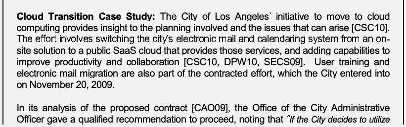
抽出したテキスト（原本と未照合・参考）
Cloud Transition Case Study: The City of Los Angeles’ initiative to move to cloud computing provides insight to the planning involved and the issues that can arise [CSC10]. The effort involves switching the city’s electronic mail and calendaring system from an on- site solution to a public SaaS cloud that provides those services, and adding capabilities to improve productivity and collaboration [CSC10, DPW10, SECS09]. User training and electronic mail migration are also part of the contracted effort, which the City entered into on November 20, 2009. In its analysis of the proposed contract [CAO09], the Office of the City Administrative Officer gave a qualified recommendation to proceed, noting that “If the City decides to utilize抽出したテキストの訳（原本と未照合・参考）
クラウド移行事例: ロサンゼルス市のクラウドコンピューティング移行計画は、必要な計画策定および発生し得る課題について知見を与える [CSC10]。この取り組みでは、市の電子メールおよびカレンダーシステムをオンサイトソリューションから、それらのサービスを提供するパブリックSaaSクラウドに移行し、生産性および協働を向上させる機能を追加する [CSC10, DPW10, SECS09]。ユーザートレーニングおよび電子メール移行も契約業務に含まれ、市は2009年11月20日に契約を締結した。提案契約の分析 [CAO09] において、市管理官事務所は条件付きで進行を推奨し、「市がこれらのサービスを利用すると決めた場合…現行の市所有・運用の構造に戻すには、費用が高すぎる可能性がある」と指摘した。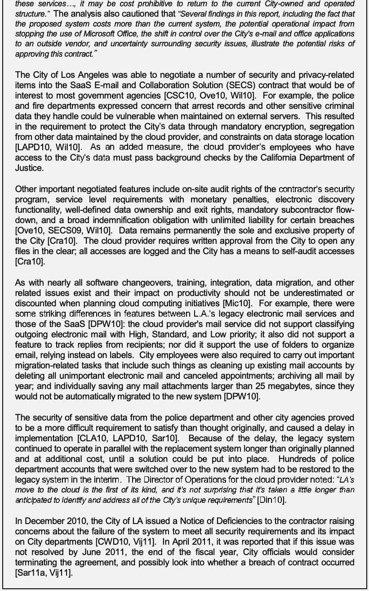
抽出したテキスト（原本と未照合・参考）
these services…, it may be cost prohibitive to return to the current City-owned and operated structure.” The analysis also cautioned that “Several findings in this report, including the fact that the proposed system costs more than the current system, the potential operational impact from stopping the use of Microsoft Office, the shift in control over the City's e-mail and office applications to an outside vendor, and uncertainty surrounding security issues, illustrate the potential risks of approving this contract.” The City of Los Angeles was able to negotiate a number of security and privacy-related items into the SaaS E-mail and Collaboration Solution (SECS) contract that would be of interest to most government agencies [CSC10, Ove10, Wil10]. For example, the police and fire departments expressed concern that arrest records and other sensitive criminal data they handle could be vulnerable when maintained on external servers. This resulted in the requirement to protect the City’s data through mandatory encryption, segregation from other data maintained by the cloud provider, and constraints on data storage location [LAPD10, Wil10]. As an added measure, the cloud provider’s employees who have access to the City’s data must pass background checks by the California Department of Justice. Other important negotiated features include on-site audit rights of the contractor’s security program, service level requirements with monetary penalties, electronic discovery functionality, well-defined data ownership and exit rights, mandatory subcontractor flow- down, and a broad indemnification obligation with unlimited liability for certain breaches [Ove10, SECS09, Wil10]. Data remains permanently the sole and exclusive property of the City [Cra10]. The cloud provider requires written approval from the City to open any files in the clear; all accesses are logged and the City has a means to self-audit accesses [Cra10]. As with nearly all software changeovers, training, integration, data migration, and other related issues exist and their impact on productivity should not be underestimated or discounted when planning cloud computing initiatives [Mic10]. For example, there were some striking differences in features between L.A.’s legacy electronic mail services and those of the SaaS [DPW10]: the cloud provider's mail service did not support classifying outgoing electronic mail with High, Standard, and Low priority; it also did not support a feature to track replies from recipients; nor did it support the use of folders to organize email, relying instead on labels. City employees were also required to carry out important migration-related tasks that include such things as cleaning up existing mail accounts by deleting all unimportant electronic mail and canceled appointments; archiving all mail by year; and individually saving any mail attachments larger than 25 megabytes, since they would not be automatically migrated to the new system [DPW10]. The security of sensitive data from the police department and other city agencies proved to be a more difficult requirement to satisfy than thought originally, and caused a delay in implementation [CLA10, LAPD10, Sar10]. Because of the delay, the legacy system continued to operate in parallel with the replacement system longer than originally planned and at additional cost, until a solution could be put into place. Hundreds of police department accounts that were switched over to the new system had to be restored to the legacy system in the interim. The Director of Operations for the cloud provider noted: “LA’s move to the cloud is the first of its kind, and it’s not surprising that it’s taken a little longer than anticipated to identify and address all of the City’s unique requirements” [Din10]. In December 2010, the City of LA issued a Notice of Deficiencies to the contractor raising concerns about the failure of the system to meet all security requirements and its impact on City departments [CWD10, Vij11]. In April 2011, it was reported that if this issue was not resolved by June 2011, the end of the fiscal year, City officials would consider terminating the agreement, and possibly look into whether a breach of contract occurred [Sar11a, Vij11].抽出したテキストの訳（原本と未照合・参考）
「本報告書の複数の所見は、提案システムの費用が現行システムより高いこと、Microsoft Officeの使用停止による運用上の潜在的影響、市の電子メールおよびオフィスアプリケーションに対する制御が外部ベンダーへ移ること、セキュリティ問題をめぐる不確実性など、本契約の承認に伴う潜在的リスクを示している」とも注意喚起した。ロサンゼルス市は、政府機関の多くが関心を持つセキュリティおよびプライバシー関連事項を、SaaS電子メール・コラボレーションソリューション（SECS）契約に複数盛り込む交渉に成功した [CSC10, Ove10, Wil10]。たとえば、警察・消防部門は、逮捕記録その他の機微な犯罪関連データを外部サーバーに保存すると脆弱になる可能性を懸念した。その結果、市のデータを必須の暗号化によって保護し、クラウドプロバイダーが維持する他のデータから分離し、データ保存場所を制約する要件が設けられた [LAPD10, Wil10]。さらに、市のデータにアクセスできるクラウドプロバイダー従業員は、カリフォルニア州司法省による身元調査に合格しなければならない。その他の重要な交渉事項には、請負業者のセキュリティプログラムに対するオンサイト監査権、金銭的罰則を伴うサービスレベル要件、電子情報開示機能、明確なデータ所有権および終了権、下請業者への必須条項の引き継ぎ、特定の侵害に対する無制限責任を含む広範な補償義務があった [Ove10, SECS09, Wil10]。データは永久に市の単独かつ排他的な所有物である [Cra10]。クラウドプロバイダーは、暗号化されていない状態でファイルを開く場合、市の書面による承認を必要とする。すべてのアクセスは記録され、市はアクセスを独自に監査できる [Cra10]。ほぼすべてのソフトウェア移行と同様、クラウドコンピューティングの取り組みを計画する際、トレーニング、統合、データ移行その他の関連課題があり、生産性への影響を過小評価または無視すべきではない [Mic10]。たとえば、L.A.市の従来の電子メールサービスとSaaSサービスの機能には顕著な違いがあった [DPW10]。クラウドプロバイダーのメールサービスは、送信メールに「高」「標準」「低」の優先度を設定できず、受信者からの返信を追跡する機能も、メール整理用フォルダーもサポートせず、代わりにラベルを使用していた。市職員はまた、新システムに自動移行されない25メガバイトを超える添付ファイルを個別に保存すること、重要でない電子メールや取り消された予定を削除して既存のメールアカウントを整理すること、年ごとに全メールをアーカイブすることなど、移行関連の重要作業を実施する必要があった [DPW10]。警察部門および他の市機関の機微データのセキュリティは、当初考えられていたよりも満たすことが難しい要件であり、実装の遅延を引き起こした [CLA10, LAPD10, Sar10]。遅延のため、代替システムと並行して従来システムが当初の計画より長く稼働し、解決策を導入するまで追加費用も発生した。新システムへ移行した警察部門の数百アカウントは、その間に従来システムへ戻す必要があった。クラウドプロバイダーの運用担当取締役は、「LAのクラウド移行は初めての事例であり、市固有の要件をすべて特定・解決するのに予想より時間がかかるのは驚くことではない」と述べた [Din10]。2010年12月、市はシステムがすべてのセキュリティ要件を満たさず、市の各部門に影響を及ぼしたことについて、請負業者に不備通知を発行した [CWD10, Vij11]。2011年4月には、2011年6月の会計年度末までに問題が解決しない場合、市当局は合意の終了を検討し、契約違反が生じたかどうかを調査する可能性もあると報じられた [Sar11a, Vij11]。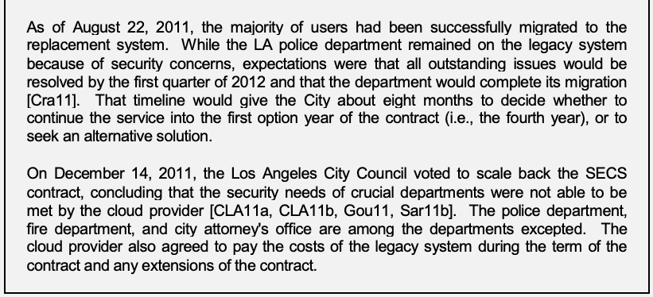
抽出したテキスト（原本と未照合・参考）
As of August 22, 2011, the majority of users had been successfully migrated to the replacement system. While the LA police department remained on the legacy system because of security concerns, expectations were that all outstanding issues would be resolved by the first quarter of 2012 and that the department would complete its migration [Cra11]. That timeline would give the City about eight months to decide whether to continue the service into the first option year of the contract (i.e., the fourth year), or to seek an alternative solution. On December 14, 2011, the Los Angeles City Council voted to scale back the SECS contract, concluding that the security needs of crucial departments were not able to be met by the cloud provider [CLA11a, CLA11b, Gou11, Sar11b]. The police department, fire department, and city attorney's office are among the departments excepted. The cloud provider also agreed to pay the costs of the legacy system during the term of the contract and any extensions of the contract.抽出したテキストの訳（原本と未照合・参考）
2011年8月22日現在、利用者の大半は代替システムへの移行を完了していた。セキュリティ上の懸念からロサンゼルス市警察は従来システムを引き続き使用していたが、残る問題は2012年第1四半期までに解決し、同部門も移行を完了する見込みであった [Cra11]。この日程により、市は契約の最初のオプション年（すなわち4年目）もサービスを継続するか、代替策を探すかを決める約8か月の猶予を得る。2011年12月14日、ロサンゼルス市議会は、重要部門のセキュリティニーズをクラウドプロバイダーが満たせなかったとして、SECS契約の規模縮小を可決した [CLA11a, CLA11b, Gou11, Sar11b]。警察部門、消防部門および市弁護士事務所は対象から除外された部門に含まれる。クラウドプロバイダーはまた、契約期間中および契約延長期間中の従来システムの費用を負担することに同意した。5.1 General Concerns
5.1 一般的な懸念事項
The terms of traditional information technology outsourcing contracts, particularly those involving sensitive data, can serve as guidelines for cloud computing initiatives. Three main security and privacy issues in service contracts have been identified previously and are relevant to outsourcing public cloud computing services [All88, Len03]:
従来型の情報技術外部委託契約の条件、特に機微データを扱う契約は、クラウドコンピューティングの取り組みに関するガイドラインとして役立つ。サービス契約におけるセキュリティおよびプライバシーの主な問題として、以前から次の3点が特定されており、パブリッククラウドサービスの外部委託にも関係する [All88, Len03]:
•Inadequate Policies and Practices. The security policies and practices of the cloud provider might not be adequate or compatible with those of the organization. The same issue applies to privacy as well. This can result in complications such as the following [All88]:
•ポリシーおよび慣行の不備。クラウドプロバイダーのセキュリティポリシーおよび慣行が、組織のものに対して不十分または不適合である場合がある。プライバシーについても同じ問題が当てはまる。これにより、次のような問題が起こり得る [All88]:
未レビュー訳•Undetected intrusions or violations due to insufficient auditing and monitoring policies by the cloud provider Lack of sufficient data and configuration integrity due to a mismatch between the organization’s and the cloud provider’s policies for separation of duty (i.e., clear assignment of roles and responsibilities) or redundancy (i.e., having sufficient checks and balances to ensure an operation is done consistently and correctly) Loss of privacy due to the cloud provider handling sensitive information less rigorously than the organization’s policy dictates.
•▪ クラウドプロバイダーの監査・監視ポリシーが不十分なため、侵入や違反を検知できない ▪ 組織とクラウドプロバイダーの職務分掌（役割と責任を明確に割り当てること）または冗長性（運用を一貫して正しく実施するために十分な相互確認・均衡を設けること）のポリシーが一致しないため、データおよび構成の完全性が不十分となる ▪ クラウドプロバイダーが機微情報を組織のポリシーで定められたよりも厳格でない方法で扱うことによるプライバシーの喪失。
未レビュー訳•Weak Confidentiality and Integrity Sureties. Insufficient security controls in the cloud provider’s platform could affect negatively the confidentiality and privacy, or integrity of the system. For example, use of an insecure method of remote access could allow intruders to gain unauthorized access, modify, or destroy the organization’s information systems and resources; to deliberately introduce security vulnerabilities or malware into the system; or to launch attacks on other systems from the organization’s network, perhaps making the organization liable for the damages incurred [All88].
•機密性および完全性に関する保証の弱さ。クラウドプロバイダーのプラットフォームでセキュリティ管理策が不十分な場合、システムの機密性、プライバシーまたは完全性に悪影響を及ぼす可能性がある。たとえば、安全でないリモートアクセス方式を使用すると、侵入者が不正アクセスを行い、組織の情報システムおよび資源を変更または破壊したり、意図的にセキュリティ脆弱性やマルウェアをシステムへ持ち込んだり、組織のネットワークから他のシステムを攻撃したりする可能性がある。その結果、組織が発生損害の責任を負う場合もある [All88]。
未レビュー訳•Weak Availability Sureties. Insufficient safeguards in the cloud provider’s platform could negatively affect the availability of the system. Besides the applications directly affected, a loss of system availability may cause a conflict for key resources that are required for critical organizational operations. For example, if disruptive processing operations (e.g., load rebalancing due to site failure or emergency maintenance) are performed by the cloud provider at the same time as peak organizational processing occurs, a denial of service condition could arise [All88]. A denial of service attack targeted at the cloud provider could also affect the organization’s applications and systems operating in the cloud or at the organization’s data center.
•可用性に関する保証の弱さ。クラウドプロバイダーのプラットフォームで保護策が不十分な場合、システムの可用性に悪影響を及ぼす可能性がある。直接影響を受けるアプリケーションに加え、システム可用性の喪失によって、重要な組織運用に必要な主要資源の競合が生じる可能性がある。たとえば、組織の処理がピークとなる時に、クラウドプロバイダーがサービス中断を伴う処理（サイト障害または緊急保守による負荷再分散など）を実施すると、サービス妨害状態が発生する可能性がある [All88]。クラウドプロバイダーを標的とするサービス妨害攻撃も、クラウド内または組織のデータセンター内で稼働する組織のアプリケーションやシステムに影響を及ぼす可能性がある。
未レビュー訳Assurances furnished to the organization by the cloud provider to support security claims, or by a certification and compliance review entity paid by the cloud provider, should be verified whenever possible through independent assessment by the organization. Moreover, a third-party certification or other assurances from the cloud provider do not necessarily grant a tenant application or system that same level of certification or compliance; those elements would likely require a separate certification assessment for that specific cloud environment.19
セキュリティに関する主張を裏付けるためにクラウドプロバイダーが組織に提示する保証、またはクラウドプロバイダーが費用を負担する認証・コンプライアンス審査機関の保証は、可能な限り組織が独立評価を通じて検証すべきである。さらに、クラウドプロバイダーの第三者認証その他の保証によって、テナントのアプリケーションまたはシステムにも同じレベルの認証・コンプライアンスが自動的に付与されるわけではない。これらの要素については、特定のクラウド環境を対象とした別個の認証評価が必要になる可能性が高い。19
未レビュー訳Other noteworthy concerns, which are indirectly related to security and privacy, also exist with outsourcing to public clouds. One of the most prevalent and challenging concerns is called the principal-agent problem. Another is the attenuation of an organization’s technical expertise.
パブリッククラウドへの外部委託には、セキュリティおよびプライバシーに間接的に関連する、その他の注目すべき懸念もある。最も広く見られ、対処が困難な懸念の一つがプリンシパル・エージェント問題である。もう一つは、組織の技術的専門知識の低下である。
•Principal-Agent Problem. The principal-agent problem occurs when the incentives of the agent (i.e., the cloud provider) are not aligned with the interests of the principal (i.e., the organization) [Row07]. Because it can be difficult to determine the level of effort a cloud provider is exerting towards security and privacy administration and remediation, the concern is that the organization might not recognize if the service level is dropping or has dropped below the extent required. One confounding issue is that increased security efforts are not guaranteed to result in noticeable improvements (e.g., fewer incidents), in part because of the growing amounts of malware and new types of attacks [Row07].
•プリンシパル・エージェント問題。エージェント（すなわちクラウドプロバイダー）のインセンティブが、プリンシパル（すなわち組織）の利益と一致しない場合に、プリンシパル・エージェント問題が発生する [Row07]。クラウドプロバイダーがセキュリティおよびプライバシーの管理・是正にどの程度努力しているかを判断することが難しいため、組織がサービスレベルの低下、または必要な水準を下回ったことに気付かない可能性が懸念される。さらに、セキュリティ対策を強化しても、目に見える改善（例: インシデントの減少）が必ず得られるとは限らない。これは一部には、マルウェアの増加や新しい攻撃の出現による [Row07]。
未レビュー訳•Attenuation of Expertise. Outsourced computing services can, over time, diminish the level of technical knowledge and expertise of the organization, since management and staff no longer need to deal regularly with technical issues at a detailed level [Gon09]. As new advancements and improvements are made to the cloud computing environment, the knowledge and expertise gained directly benefit the cloud provider, not the organization. Unless precautions are taken, an organization can lose its ability to keep up to date with technology advances and related security and privacy considerations, which in turn can affect its ability to plan and oversee new information technology projects effectively and to maintain accountability over existing cloud-based systems.
•専門知識の低下。外部委託したコンピューティングサービスは、管理者や職員が技術的課題の詳細に定期的に対処する必要がなくなるため、時間の経過とともに組織の技術知識および専門知識を低下させる可能性がある [Gon09]。クラウドコンピューティング環境に新たな進歩や改善があっても、そこで得られた知識と専門知識が直接役立つのは組織ではなくクラウドプロバイダーである。予防策を講じなければ、組織は技術の進歩および関連するセキュリティ・プライバシー上の考慮事項を把握し続ける能力を失い、新たな情報技術プロジェクトを効果的に計画・監督し、既存のクラウドベースシステムに関する説明責任を維持する能力にも影響が及ぶ。
未レビュー訳An organization may be able to employ compensating security and privacy controls to work around identified shortcomings in a public cloud service. Non-negotiable service agreements generally limit the range of risk-mitigation activities available to an organization, while negotiated service agreements, which provide greater range and flexibility, necessitate careful scrutiny and prioritization of requirements that are incorporated into the terms of service in order to be cost effective. In either case, however, available risk mitigation techniques are unlikely to ever be sufficient enough to allow high-value or highly sensitive data or mission-critical applications to be deployed to a public cloud. For these situations, the organization could consider employing a cloud computing environment with a more suitable deployment model, such as an internal private cloud, which can potentially offer greater oversight and authority over security and privacy, and better limit the type of tenants that share platform resources, reducing exposure in the event of a failure or configuration error in a control.
組織は、パブリッククラウドサービスに特定された欠点を補うため、代償的なセキュリティ・プライバシー管理策を採用できる場合がある。交渉不能なサービス合意では、組織が利用できるリスク軽減活動が通常制限される。一方、より広範で柔軟性のある交渉型サービス合意では、費用対効果を確保するため、サービス条件に盛り込む要件を慎重に精査し、優先順位を付ける必要がある。いずれの場合も、利用可能なリスク軽減技法だけでは、高価値または極めて機微なデータや、使命に不可欠なアプリケーションをパブリッククラウドへ配備できるだけの十分な対策にならない可能性が高い。そのような状況では、内部プライベートクラウドなど、より適切な導入モデルのクラウドコンピューティング環境を検討できる。これにより、セキュリティおよびプライバシーに対する監督と権限を強化し、プラットフォーム資源を共有するテナントの種類をより適切に制限できる可能性があり、管理策の障害または設定ミスが起きた場合の露出も低減できる。
There are several distinct stages of outsourcing at which an organization can carry out prescribed activities to remain accountable and mitigate the above-mentioned security and privacy issues: when planning the initiative (i.e., preliminary activities), when initiating the service contract and overseeing it (i.e., initiating and coincident activities), and when closing down the services and contract (i.e., concluding activities) [All88, Len03]. The subsequent sections of this chapter discuss these stages in detail.
外部委託には、組織が所定の活動を実施し、説明責任を維持し、前述のセキュリティおよびプライバシー問題を軽減できる複数の段階がある。取り組みを計画するとき（すなわち事前活動）、サービス契約の開始および監督を行うとき（すなわち開始時・並行活動）、サービスおよび契約を終了するとき（すなわち終了活動）である [All88, Len03]。本章の後続節では、これらの段階を詳しく論じる。
Federal Information Processing Standards (FIPS) are pertinent to all stages of outsourcing, particularly FIPS 199 and FIPS 200, which apply to planning at the early stages.20
連邦情報処理標準（FIPS）は外部委託のすべての段階に関係する。特に、FIPS 199およびFIPS 200は初期段階の計画に適用される。20
未レビュー訳•FIPS 199. This standard, entitled Standards for Security Categorization of Federal Information and Information Systems, provides a common framework and method for categorizing information and information systems to ensure that adequate levels of information security are provided, which are commensurate with the level of risk. The resulting security categorization feeds into other activities such as security control selection, privacy impact analysis, and critical infrastructure analysis.
•FIPS 199。この標準「連邦情報および情報システムのセキュリティ分類標準」は、情報および情報システムを分類する共通の枠組みと方法を提供し、リスクレベルに応じた十分な情報セキュリティを確保する。得られたセキュリティ分類は、セキュリティ管理策の選択、プライバシー影響分析、重要インフラ分析などの後続活動に反映される。
未レビュー訳•FIPS 200. This standard, entitled Minimum Security Requirements for Federal Information and Information Systems, directs agencies to meet the identified minimum security requirements for federal information and information systems by selecting the appropriate security controls and assurance requirements described in NIST Special Publication (SP) 800-53 Revision 3.
•FIPS 200。この標準「連邦情報および情報システムの最低セキュリティ要件」は、NIST特別出版物（SP）800-53改訂第3版で説明される適切なセキュリティ管理策および保証要件を選択し、連邦情報および情報システムに特定された最低限のセキュリティ要件を満たすよう各機関に指示する。
未レビュー訳In addition to SP 800-53 mentioned above, other NIST guidelines provide information and guidance on planning, implementing, and managing information system security and protecting information that apply to outsourcing initiatives. They include the NIST SPs listed below in Table 2, whose principles have the utmost relevance to cloud computing environments overall and should be used in conjunction with this publication.21
前述のSP 800-53に加え、他のNISTガイドラインも、外部委託の取り組みに適用される情報システムセキュリティの計画、実装、管理および情報保護に関する情報と指針を提供する。以下の表2に掲げるNIST SPが含まれる。これらの原則はクラウドコンピューティング環境全般に極めて重要であり、本出版物と併用すべきである。21
未レビュー訳Table 2: Selected NIST Special Publications
表2: 選定したNIST特別出版物
未レビュー訳SP 800-18
原文のみ
Guide for Developing Security Plans for Federal Information Systems
原文のみ
SP 800-34, Revision 1 Contingency Planning Guide for Federal Information Systems
原文のみ
SP 800-37, Revision 1 Guide for Applying the Risk Management Framework to Federal Information Systems
原文のみ
SP 800-39
原文のみ
Managing Information Security Risk
原文のみ
SP 800-53, Revision 3 Recommended Security Controls for Federal Information Systems and Organizations
原文のみ
SP 800-53, Appendix J Privacy Control Catalog
原文のみ
SP 800-53A, Revision 1 Guide for Assessing the Security Controls in Federal Information Systems
原文のみ
Guide for Mapping Types of Information and Information Systems to Security
原文のみ
SP 800-60
原文のみ
Categories
原文のみ
SP 800-61, Revision 1 Computer Security Incident Handling Guide
原文のみ
SP 800-64, Revision 2 Security Considerations in the System Development Life Cycle
原文のみ
SP 800-86
原文のみ
Guide to Integrating Forensic Techniques into Incident Response
原文のみ
SP 800-88
原文のみ
Guidelines for Media Sanitization
原文のみ
SP 800-115
原文のみ
Technical Guide to Information Security Testing and Assessment
原文のみ
SP 800-122
原文のみ
Guide to Protecting the Confidentiality of Personally Identifiable Information (PII)
原文のみ
Information Security Continuous Monitoring for Federal Information Systems and
原文のみ
SP 800-137
原文のみ
Organizations
原文のみ
In accordance with OMB policy, federal agencies are required to follow certain specific NIST Special Publications. However, there is flexibility in how agencies apply the guidance. Federal agencies should apply the security concepts and principles articulated in the NIST Special Publications in accordance with and in the context of the agency’s missions, business functions, and environment of operation. Consequently, the application of NIST guidance by federal agencies can result in different security solutions that are equally acceptable, compliant with the guidance, and meet the OMB definition of adequate security for federal information systems.
OMBポリシーに従い、連邦機関は特定のNIST特別出版物に従うことが義務付けられている。ただし、各機関がガイダンスを適用する方法には柔軟性がある。連邦機関は、NIST特別出版物に示されたセキュリティ概念および原則を、各機関の使命、業務機能および運用環境に即して適用すべきである。そのため、連邦機関によるNISTガイダンスの適用から、ガイダンスに準拠し、OMBが定義する連邦情報システムの適切なセキュリティを満たす、同等に受け入れ可能な異なるセキュリティソリューションが生じる場合がある。
5.2 Preliminary Activities
5.2 事前活動
In the first stage of outsourcing, the organization must perform various planning activities in preparation for issuing a contract for public cloud services. Planning helps to ensure that an organization derives full benefit from information technology spending. It also helps to ensure that the computing environment is as secure as possible and in compliance with all relevant organizational policies and that data privacy is maintained. Planning activities include the following items:
外部委託の第1段階では、組織はパブリッククラウドサービス契約を発行する準備として、さまざまな計画活動を実施しなければならない。計画は、組織が情報技術への支出から最大の利益を得る助けとなる。また、コンピューティング環境を可能な限り安全にし、関連する組織ポリシーすべてに準拠させ、データプライバシーを維持する助けにもなる。計画活動には次が含まれる:
•Specify Requirements. The organization must identify its security, privacy, and other requirements for cloud services, as a criterion for the selection of a cloud provider. Common security requirements include coverage for the following areas [CSA11b, Len03]:
•要件の明確化。組織は、クラウドサービス提供者を選定する基準として、セキュリティ、プライバシーおよびその他の要件を特定しなければならない。一般的なセキュリティ要件には、次の領域が含まれる [CSA11b, Len03]:
未レビュー訳•Personnel requirements, including clearances, roles, and responsibilities Regulatory requirements Service availability Problem reporting, review, and resolution Information handling and disclosure agreements and procedures Physical and logical access controls Network access control, connectivity, and filtering Data protection System configuration and patch management Backup and recovery Data retention and sanitization Security and vulnerability scanning Risk management Incident reporting, handling, and response Continuity of operations Resource management Certification and accreditation Assurance levels Independent auditing of services.
•▪ 人員要件（クリアランス、役割、責任を含む） ▪ 規制要件 ▪ サービス可用性 ▪ 問題の報告、レビューおよび解決 ▪ 情報取扱いおよび開示に関する合意・手順 ▪ 物理的および論理的アクセス制御 ▪ ネットワークアクセス制御、接続およびフィルタリング ▪ データ保護 ▪ システム構成およびパッチ管理 ▪ バックアップおよび復旧 ▪ データ保持およびサニタイズ ▪ セキュリティおよび脆弱性スキャン ▪ リスク管理 ▪ インシデントの報告、取扱いおよび対応 ▪ 業務継続 ▪ 資源管理 ▪ 認証および認定 ▪ 保証レベル ▪ サービスの独立監査。
未レビュー訳Part of the requirements analysis should narrow the choice among IaaS, PaaS, and SaaS service models to a single selection that is appropriate for the agency’s specific needs and objectives. The responsibilities of both the organization and the cloud provider vary depending on the service model. For example in IaaS, the cloud provider’s responsibility typically stops at the hypervisor. Organizations consuming cloud services must understand the delineation of responsibilities and how they must tie into the cloud provider’s processes to ensure that organizational governance practices are extended over this environment, and that mechanisms and tools are provided for managing those aspects that fall under the organization’s responsibility.
要件分析の一環として、IaaS、PaaSおよびSaaSのサービスモデルから、機関固有のニーズおよび目標に適した単一のモデルを選択する必要がある。組織とクラウドプロバイダーの双方の責任は、サービスモデルによって異なる。たとえばIaaSでは、クラウドプロバイダーの責任は通常ハイパーバイザーまでである。クラウドサービスを利用する組織は、責任の境界と、自らのガバナンス慣行をこの環境全体に及ぼすために、クラウドプロバイダーのプロセスとどのように連携するかを理解しなければならない。また、組織の責任範囲に属する側面を管理するための仕組みとツールが提供される必要がある。
Establishing an exit strategy is an important part of the planning process and should be factored into the requirements analysis. It also relates to the organization’s contingency and continuity planning activities. The exit strategy should cover a normal termination, such as that at expiration of the service agreement, and also an unexpected termination, such as that due to service provider bankruptcy or poor performance [Gra03]. The ability to export all of the organization’s data in a usable format through a secure, reliable, and efficient means, and in a timely manner, is a vital aspect of an exit strategy. Other aspects include addressing application dependencies on proprietary programming interfaces, system calls, and database technologies, as well as the recovery of useful metadata that may have accumulated within the cloud environment.
終了戦略の策定は計画プロセスの重要な一部であり、要件分析に組み込むべきである。また、組織の緊急時対応および業務継続計画活動にも関係する。終了戦略は、サービス合意期間の満了などの通常終了と、サービスプロバイダーの破産または性能不良などによる予期しない終了の両方を対象とすべきである [Gra03]。組織データをすべて、利用可能な形式で、安全、確実かつ効率的な手段により、適時にエクスポートできることは終了戦略の重要な要素である。その他の要素には、独自プログラミングインターフェース、システムコール、データベース技術へのアプリケーション依存性への対処、およびクラウド環境内に蓄積された有用なメタデータの復旧が含まれる。
Compliance with various federal standards, OMB guidance, and public law imposes requirements that need to be addressed in the requirement analysis. The implications of some key laws and regulations were discussed in the previous chapter, but others abound. For example, if a public-facing aspect to the cloud implementation exists, OMB Memoranda M-10-22, Guidance for Online Use of Web Measurement and Customization Technologies, and M-10-23, Guidance for Agency Use of Third-Party Websites and Applications, provide compliance guidance in terms of branding, PIA, policy, and other issues to be considered during planning. Compliance-related requirements, such as the protection of PII, may also be specific to an agency [Mcc10].22 Other requirements relevant to outsourcing exist, such as records management controls, accessibility, and user training, and should also be addressed. For example, Section 508 of the Rehabilitation Act of 1973 (29 U.S.C. 794d) establishes electronic and information technology requirements for accessibility to people with disabilities, including employees and members of the public.
連邦標準、OMBガイダンスおよび公法への準拠には、要件分析で扱う必要のある要件が伴う。主要な法律・規制の一部が前章で論じられたが、他にも多数ある。たとえば、クラウド実装が一般向け機能を含む場合、OMB覚書M-10-22「オンラインにおけるウェブ測定・カスタマイズ技術の使用に関するガイダンス」およびM-10-23「第三者ウェブサイトおよびアプリケーションの機関による使用に関するガイダンス」は、計画時に考慮すべきブランド、PIA、ポリシーその他の課題に関する準拠ガイダンスを提供する。PII保護などの準拠要件は、機関固有の場合もある [Mcc10]。22 記録管理管理策、アクセシビリティ、ユーザートレーニングなど、外部委託に関係する他の要件も存在し、対処すべきである。たとえば1973年リハビリテーション法第508条（合衆国法典第29編第794d条）は、職員および一般市民を含む障害者が利用できるようにするための電子・情報技術要件を定めている。
未レビュー訳Reviewing common outsourcing provisions in existing cloud computing contracts that cover areas such as privacy and security standards, regulatory and compliance issues, service level criteria and penalties, change management processes, continuity of service provisions, and termination rights, can be helpful in formulating requirements [Ove10]. Existing information technology outsourcing contracts in use by the organization can also be helpful.
プライバシーおよびセキュリティ標準、規制・準拠問題、サービスレベル基準と罰則、変更管理プロセス、サービス継続条項、終了権などを含む既存のクラウドコンピューティング契約の一般的な外部委託条項をレビューすると、要件策定に役立つ場合がある [Ove10]。組織が現在使用している既存の情報技術外部委託契約も参考になる。
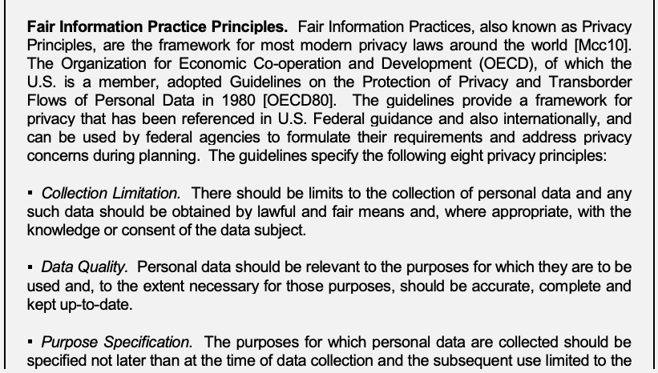
抽出したテキスト（原本と未照合・参考）
Fair Information Practice Principles. Fair Information Practices, also known as Privacy Principles, are the framework for most modern privacy laws around the world [Mcc10]. The Organization for Economic Co-operation and Development (OECD), of which the U.S. is a member, adopted Guidelines on the Protection of Privacy and Transborder Flows of Personal Data in 1980 [OECD80]. The guidelines provide a framework for privacy that has been referenced in U.S. Federal guidance and also internationally, and can be used by federal agencies to formulate their requirements and address privacy concerns during planning. The guidelines specify the following eight privacy principles: ▪ Collection Limitation. There should be limits to the collection of personal data and any such data should be obtained by lawful and fair means and, where appropriate, with the knowledge or consent of the data subject. ▪ Data Quality. Personal data should be relevant to the purposes for which they are to be used and, to the extent necessary for those purposes, should be accurate, complete and kept up-to-date. ▪ Purpose Specification. The purposes for which personal data are collected should be specified not later than at the time of data collection and the subsequent use limited to the抽出したテキストの訳（原本と未照合・参考）
公正情報慣行原則。公正情報慣行（プライバシー原則とも呼ばれる）は、世界の現代的なプライバシー法の大半の枠組みである [Mcc10]。米国が加盟する経済協力開発機構（OECD）は、1980年に「プライバシー保護と個人データの国境を越える流通に関するガイドライン」を採択した [OECD80]。このガイドラインは、米国の連邦ガイダンスおよび国際的な文書で参照されているプライバシーの枠組みを提供し、連邦機関が計画時に要件を策定しプライバシー懸念に対処するために使用できる。ガイドラインは次の8つのプライバシー原則を定める: ▪ 収集の制限。個人データの収集には制限を設けるべきであり、そのデータは適法かつ公正な手段で取得し、適切な場合にはデータ主体の認識または同意を得るべきである。▪ データ品質。個人データは利用目的に関連したものであるべきであり、その目的に必要な範囲で正確かつ完全で、最新の状態に保つべきである。▪ 目的の明確化。個人データを収集する目的は、遅くとも収集時までに特定すべきであり、その後の利用は、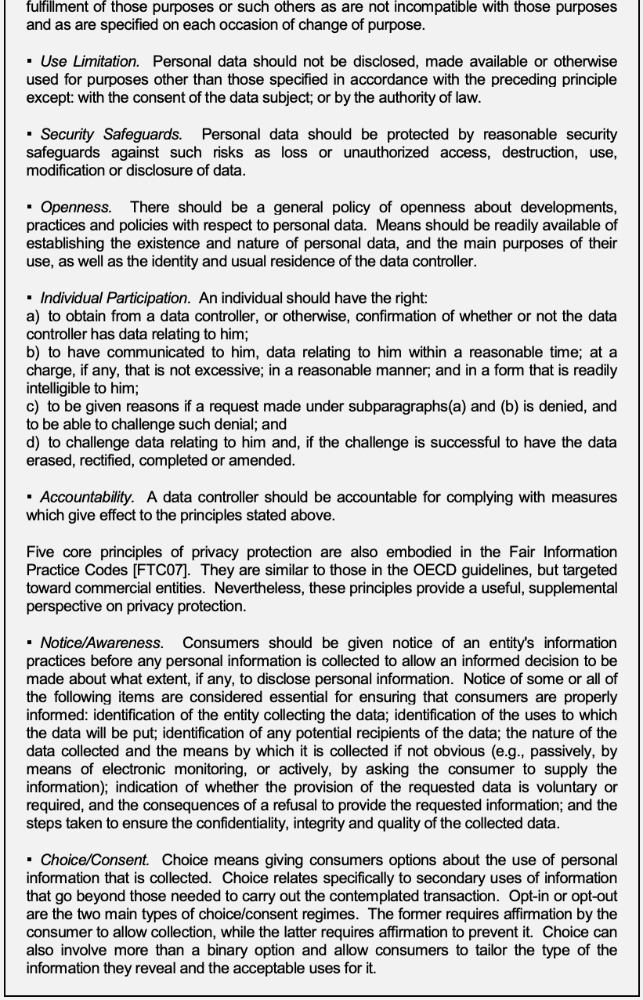
抽出したテキスト（原本と未照合・参考）
fulfillment of those purposes or such others as are not incompatible with those purposes and as are specified on each occasion of change of purpose. ▪ Use Limitation. Personal data should not be disclosed, made available or otherwise used for purposes other than those specified in accordance with the preceding principle except: with the consent of the data subject; or by the authority of law. ▪ Security Safeguards. Personal data should be protected by reasonable security safeguards against such risks as loss or unauthorized access, destruction, use, modification or disclosure of data. ▪ Openness. There should be a general policy of openness about developments, practices and policies with respect to personal data. Means should be readily available of establishing the existence and nature of personal data, and the main purposes of their use, as well as the identity and usual residence of the data controller. ▪ Individual Participation. An individual should have the right: a) to obtain from a data controller, or otherwise, confirmation of whether or not the data controller has data relating to him; b) to have communicated to him, data relating to him within a reasonable time; at a charge, if any, that is not excessive; in a reasonable manner; and in a form that is readily intelligible to him; c) to be given reasons if a request made under subparagraphs(a) and (b) is denied, and to be able to challenge such denial; and d) to challenge data relating to him and, if the challenge is successful to have the data erased, rectified, completed or amended. ▪ Accountability. A data controller should be accountable for complying with measures which give effect to the principles stated above. Five core principles of privacy protection are also embodied in the Fair Information Practice Codes [FTC07]. They are similar to those in the OECD guidelines, but targeted toward commercial entities. Nevertheless, these principles provide a useful, supplemental perspective on privacy protection. ▪ Notice/Awareness. Consumers should be given notice of an entity's information practices before any personal information is collected to allow an informed decision to be made about what extent, if any, to disclose personal information. Notice of some or all of the following items are considered essential for ensuring that consumers are properly informed: identification of the entity collecting the data; identification of the uses to which the data will be put; identification of any potential recipients of the data; the nature of the data collected and the means by which it is collected if not obvious (e.g., passively, by means of electronic monitoring, or actively, by asking the consumer to supply the information); indication of whether the provision of the requested data is voluntary or required, and the consequences of a refusal to provide the requested information; and the steps taken to ensure the confidentiality, integrity and quality of the collected data. ▪ Choice/Consent. Choice means giving consumers options about the use of personal information that is collected. Choice relates specifically to secondary uses of information that go beyond those needed to carry out the contemplated transaction. Opt-in or opt-out are the two main types of choice/consent regimes. The former requires affirmation by the consumer to allow collection, while the latter requires affirmation to prevent it. Choice can also involve more than a binary option and allow consumers to tailor the type of the information they reveal and the acceptable uses for it.抽出したテキストの訳（原本と未照合・参考）
目的の達成、または目的変更の都度明示された、それらの目的と両立しない他の目的に限られる。▪ 利用の制限。個人データは、前述の原則に従って特定された目的以外に開示、利用可能化、その他の方法で使用すべきではない。ただし、データ主体の同意がある場合、または法律の権限に基づく場合を除く。▪ セキュリティ保護策。個人データは、喪失、不正アクセス、破壊、利用、変更または開示などのリスクに対し、合理的なセキュリティ保護策によって保護すべきである。▪ 透明性。個人データに関する開発、慣行およびポリシーについて、一般に公開する方針を設けるべきである。個人データの存在と性質、主な利用目的、データ管理者の身元および通常の所在地を容易に確認できる手段を提供すべきである。▪ 個人参加。個人は、次の権利を有するべきである: a) データ管理者またはその他の者から、自分に関するデータをデータ管理者が保有するかどうかの確認を得る。b) 自分に関するデータを合理的な期間内に、過度でない料金で、合理的な方法により、容易に理解できる形式で通知される。c) a)およびb)に基づく要求が拒否された場合に理由を示され、その拒否に異議を申し立てる。d) 自分に関するデータに異議を申し立て、その異議が認められた場合にデータの消去、訂正、補完または変更を受ける。▪ 説明責任。データ管理者は、上記の原則を実効化する措置への準拠について説明責任を負うべきである。プライバシー保護の5つの中核原則は、公正情報慣行規範にも盛り込まれている [FTC07]。OECDガイドラインの原則と類似するが、商業組織を対象とする。それでも、プライバシー保護を補完的な視点から捉えるうえで有用である。▪ 通知／認識。消費者が個人情報を開示するかどうか、開示する場合の範囲について、十分な情報に基づく決定ができるよう、個人情報を収集する前に組織の情報慣行を通知すべきである。消費者に十分な情報を与えるため、次の項目の一部または全部の通知が不可欠とされる: データ収集主体の特定、データ利用目的の特定、データの潜在的受領者の特定、収集データの性質と、明らかでない場合には収集手段（例: 電子的監視による受動的収集、または消費者に情報提供を求める能動的収集）、要求されたデータの提供が任意か必須か、および拒否した場合の結果、収集データの機密性、完全性、品質を確保するために講じる措置。▪ 選択／同意。選択とは、収集した個人情報の利用に関する選択肢を消費者に与えることである。選択は、予定された取引を実行するために必要な範囲を超える情報の二次利用に特に関係する。オプトインとオプトアウトが選択／同意制度の主な2形態である。前者は収集を許可する消費者の明示的同意を必要とし、後者は収集を防ぐための明示的同意を必要とする。選択肢は二者択一に限らず、開示する情報の種類や許容する用途を消費者が調整できる場合もある。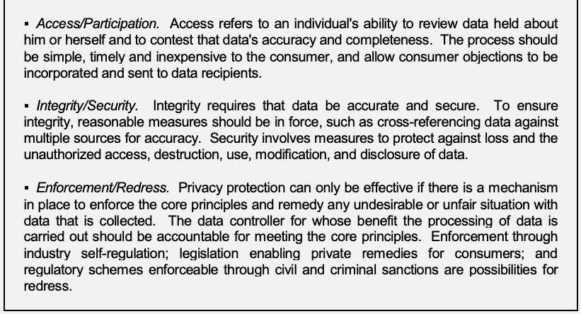
抽出したテキスト（原本と未照合・参考）
▪ Access/Participation. Access refers to an individual's ability to review data held about him or herself and to contest that data's accuracy and completeness. The process should be simple, timely and inexpensive to the consumer, and allow consumer objections to be incorporated and sent to data recipients. ▪ Integrity/Security. Integrity requires that data be accurate and secure. To ensure integrity, reasonable measures should be in force, such as cross-referencing data against multiple sources for accuracy. Security involves measures to protect against loss and the unauthorized access, destruction, use, modification, and disclosure of data. ▪ Enforcement/Redress. Privacy protection can only be effective if there is a mechanism in place to enforce the core principles and remedy any undesirable or unfair situation with data that is collected. The data controller for whose benefit the processing of data is carried out should be accountable for meeting the core principles. Enforcement through industry self-regulation; legislation enabling private remedies for consumers; and regulatory schemes enforceable through civil and criminal sanctions are possibilities for redress.抽出したテキストの訳（原本と未照合・参考）
▪ アクセス／参加。アクセスとは、個人が自分に関して保有されているデータを確認し、その正確性および完全性に異議を申し立てる能力を指す。このプロセスは消費者にとって簡単で、迅速かつ低コストであり、消費者からの異議を取り込みデータ受領者に伝達できるべきである。▪ 完全性／セキュリティ。完全性にはデータが正確で安全であることが必要である。完全性を確保するため、複数の情報源と照合して正確性を確認するなど、合理的な措置を講じるべきである。セキュリティには、データの喪失、不正アクセス、破壊、利用、変更および開示を防ぐ措置が含まれる。▪ 実施／救済。収集されたデータに関して望ましくない、または不公正な状況を是正し、中核原則を実施する仕組みがなければ、プライバシー保護は有効にならない。データ処理がその利益のために実施されるデータ管理者は、中核原則を満たす責任を負うべきである。救済方法には、業界の自主規制、消費者の私的救済を可能にする法律、民事・刑事制裁により強制可能な規制制度がある。•Assess Security and Privacy Risks. While outsourcing relieves operational commitment on the part of the organization, the act of engaging public cloud services poses risks against which an organization needs to safeguard itself. The previous chapter stressed the importance of instituting a flexible and adaptable risk management program for the lifecycle of the system. The risk analysis carried out at this stage should include factors such as the service model involved, the purpose and scope of the service, the types and level of access needed by the provider and proposed for use between the organizational computing environment and provider services, the service duration and dependencies, and the strength of protection offered via the security controls available from the cloud provider [Len03]. Another consideration, if a non-negotiable service agreement applies, is whether the terms of service are subject to unilateral amendment by the cloud provider, which would increase the security and privacy risks involved [CIO10a]. Privacy controls should be assessed as part of the analysis, as well as operational risks due to the locations of the cloud provider’s facilities.
•セキュリティおよびプライバシーリスクの評価。外部委託は組織の運用上の負担を軽減する一方、パブリッククラウドサービスの利用には組織が自らを保護すべきリスクが伴う。前章では、システムのライフサイクルを通じた柔軟で適応可能なリスク管理プログラムを確立する重要性を強調した。この段階のリスク分析には、サービスモデル、サービスの目的と範囲、プロバイダーが必要とするアクセスの種類とレベル、および組織のコンピューティング環境とプロバイダーサービス間での利用が提案されるアクセス、サービス期間および依存関係、クラウドプロバイダーが利用可能なセキュリティ管理策によって提供される保護の強度などを含めるべきである [Len03]。交渉不能なサービス合意が適用される場合、クラウドプロバイダーがサービス条件を一方的に改訂できるかどうかも考慮すべきであり、その場合はセキュリティおよびプライバシー上のリスクが高まる [CIO10a]。分析の一環としてプライバシー管理策を評価するとともに、クラウドプロバイダー施設の所在地に起因する運用リスクも評価すべきである。
未レビュー訳An organization may require a Privacy Threshold Analysis (PTA) to be completed before the development or acquisition of a new information system and when a substantial change is made to an existing system [Mcc10]. PTAs are used to determine if a system contains PII, whether a PIA or a SORN is required, and whether other privacy requirements apply to the information system. As mentioned earlier, a PIA is normally conducted for all new or substantially changed technology that collects, maintains, or disseminates PII, and makes them publicly available.
新しい情報システムの開発または取得前、および既存システムに重大な変更を加える場合、組織はプライバシー閾値分析（PTA）の実施を求める場合がある [Mcc10]。PTAは、システムにPIIが含まれるか、プライバシー影響評価（PIA）またはシステム・オブ・レコード通知（SORN）が必要か、その他のプライバシー要件が情報システムに適用されるかを判断するために用いる。前述のとおり、PIAは通常、PIIを収集、保持または配布し、PIIを一般に利用可能にするすべての新規または大幅に変更された技術について実施される。
PII should be evaluated to determine the potential harm that could result to the subject individuals and/or the organization if PII were inappropriately accessed, used, or disclosed (i.e., its confidentiality impact level) [Mcc10]. An organization decides upon the factors it uses in determining PII confidentiality impact levels and then creates and implements the appropriate policy, procedures, and controls to protect the information. For example, some federal agencies have expressed legal obligations to protect certain types of PII and should consider such obligations when determining the PII confidentiality impact levels and appropriate safeguards.23
PIIが不適切にアクセス、利用または開示された場合に、対象となる個人および／または組織に生じ得る潜在的損害（すなわち機密性影響レベル）を判断するため、PIIを評価すべきである [Mcc10]。組織はPIIの機密性影響レベルの判断に用いる要因を決定し、情報を保護するための適切なポリシー、手順および管理策を策定・実施する。たとえば、一部の連邦機関には特定の種類のPIIを保護する法的義務があり、PIIの機密性影響レベルと適切な保護策を決める際に、その義務を考慮すべきである。23
未レビュー訳The sensitivity of other types of data held by an organization is also an important factor when analyzing risk.24 The range of data an organization deals with is sometimes not fully appreciated. While data repositories containing PII or classified information are more easily recognized and taken into account, pockets of other types of sensitive data with different rules for handling may also exist. They include data items such as the following:
リスク分析では、組織が保有するその他の種類のデータの機微性も重要な要素である。24 組織が取り扱うデータの範囲が十分に認識されていない場合がある。PIIまたは機密情報を含むデータ保管庫は認識され考慮されやすいが、取扱い規則が異なるその他の種類の機微データが局所的に存在する場合もある。例として次のデータ項目がある:
未レビュー訳•Law enforcement and investigative unit data System security information, such as network schematics, configuration settings, and vulnerability reports Licensed source code and libraries, used in application development Digital documents and materials obtained under a non-disclosure agreement or memorandum of agreement Laboratory and research data whose collection, storage, and sharing are regulated Culturally sensitive data related to resource protection and management of Indian tribal land.
•▪ 法執行機関および捜査部門のデータ ▪ ネットワーク構成図、構成設定、脆弱性報告書などのシステムセキュリティ情報 ▪ アプリケーション開発に用いるライセンス済みソースコードおよびライブラリー ▪ 秘密保持契約または覚書に基づき取得したデジタル文書および資料 ▪ 収集、保管および共有が規制される実験室・研究データ ▪ 資源保護およびインディアン部族の土地管理に関わる文化的機微データ。
未レビュー訳An understanding of the underlying technologies the cloud provider uses to provision services is essential for conducting an accurate risk analysis. The security and privacy issues from the previous chapter identified important technology areas to review:
正確なリスク分析を行うには、クラウドプロバイダーがサービス提供に用いる基礎技術を理解することが不可欠である。前章で特定したセキュリティおよびプライバシー上の問題から、レビューすべき重要な技術領域は次のとおりである:
•Logical isolation techniques employed in the multi-tenant software architecture of the cloud Facilities for backup and recovery of data, and for sanitization of data Capabilities and processes for electronic discovery Mechanisms used to control access to data, to protect data while at rest, in transit, and in use, and to expunge data when no longer needed Facilities available for cryptography and cryptographic key management Mechanisms for secure authentication, authorization, and other identity and access management functions Facilities for incident response and disaster recovery.
•▪ クラウドのマルチテナントソフトウェアアーキテクチャで用いる論理分離技法 ▪ データのバックアップと復旧、およびデータのサニタイズのための設備 ▪ 電子情報開示の能力とプロセス ▪ 保存時、転送中および使用中のデータを保護し、不要になったデータを完全消去するためのアクセス制御メカニズム ▪ 暗号技術および暗号鍵管理に利用できる設備 ▪ 安全な認証、認可、その他のアイデンティティ・アクセス管理機能のメカニズム ▪ インシデント対応および災害復旧のための設備。
未レビュー訳As mentioned previously, if the results of a risk analysis show that the level is too high, the organization may be able to apply compensating controls to reduce risk to an acceptable level. Otherwise, it must either reject use of the service or accept a greater degree of risk. As an alternative to rejecting the service and not going forward, it might be possible to reduce the scope of the outsourcing effort to deal exclusively with less sensitive data. During a risk assessment, it also may become clear that some other model of deployment would be more suitable than a public cloud for the service model and application under analysis.
前述のとおり、リスク分析の結果、リスクレベルが高すぎると判明した場合、組織は代償的管理策を適用してリスクを許容可能なレベルまで軽減できる場合がある。それができなければ、サービスの利用を拒否するか、より高いリスクを受容しなければならない。サービスを拒否して取り組みを中止する以外に、より機微性の低いデータだけを扱うよう外部委託の範囲を縮小できる場合もある。リスク評価では、分析対象のサービスモデルおよびアプリケーションについて、パブリッククラウド以外の導入モデルの方が適していると判明する場合もある。
•Assess the Competency of the Cloud Provider. Before awarding a contract for outsourced services, the organization should evaluate the cloud provider’s ability and commitment to deliver the services over the target timeframe and meet the security and privacy levels stipulated. The cloud provider can be asked to demonstrate its capabilities and approach to security and privacy enforcement or to undergo an independent evaluation of its installation and systems [All88]. Contacting current clients of the cloud provider’s services, either identified independently (e.g., other government agencies) or provided as references by the cloud provider, and assessing their level of satisfaction in areas of security and privacy that are of concern to the organization can also provide insight into the competency of the cloud provider. In addition to evaluating thoroughly the privacy and security levels of the services to be provided, consideration should be given to such items as the following [Len03]:
•クラウドプロバイダーの能力評価。外部委託サービスの契約を締結する前に、組織は、クラウドプロバイダーが目標期間にわたりサービスを提供し、規定されたセキュリティおよびプライバシーの水準を満たす能力と意思を評価すべきである。クラウドプロバイダーに、自らの能力やセキュリティ・プライバシーの実施方法を実証させるか、設備およびシステムの独立評価を受けさせることができる [All88]。独自に特定した（例: 他の政府機関）またはクラウドプロバイダーが照会先として提示した現行顧客に連絡し、組織が懸念するセキュリティ・プライバシー領域における満足度を評価することも、プロバイダーの能力を把握するのに役立つ。提供サービスのプライバシーおよびセキュリティ水準を十分評価することに加えて、次の項目を検討すべきである [Len03]:
未レビュー訳•Experience and technical expertise of personnel The vetting process personnel undergo Quality and frequency of security and privacy awareness training provided to personnel Account management practices and accountability The type and effectiveness of the security services provided and underlying mechanisms used The adoption rate of new technologies Change management procedures and processes The cloud provider’s track record The ability of the cloud provider to meet the organization’s security and privacy policy, procedures, and regulatory compliance needs.
•▪ 職員の経験および技術的専門知識 ▪ 職員に対して実施する審査プロセス ▪ 職員に提供するセキュリティ・プライバシー意識向上トレーニングの質と頻度 ▪ アカウント管理慣行と説明責任 ▪ 提供されるセキュリティサービスの種類と有効性、および用いられる基礎メカニズム ▪ 新技術の採用率 ▪ 変更管理手順およびプロセス ▪ クラウドプロバイダーの実績 ▪ 組織のセキュリティ・プライバシーポリシー、手順および規制準拠のニーズを満たすクラウドプロバイダーの能力。
未レビュー訳5.3 Initiating and Coincident Activities
5.3 開始時および並行活動
The organization has a number of activities to carry out in the second stage of outsourcing, when awarding a contract to a cloud provider and overseeing the terms of the contract throughout its duration.
外部委託の第2段階では、クラウドプロバイダーとの契約締結時、および契約期間を通じた条件の監督時に、組織が複数の活動を実施する。
•Establish Contractual Obligations. The organization should ensure that all contractual requirements are explicitly stated in the service agreement, including privacy and security provisions [Gra03, Len03].25 The agreement should include definitions of both the organization’s and the cloud provider’s roles and responsibilities. The organization should also make certain that any compensating controls it needs to reduce risk to an acceptable level can be carried out within the terms of the agreement. The terms of the agreement should also include the following items [Gra03]:
•契約上の義務の確立。組織は、プライバシーおよびセキュリティ条項を含むすべての契約要件がサービス合意に明示されていることを確保すべきである [Gra03, Len03]。25 合意には、組織とクラウドプロバイダー双方の役割および責任を定義すべきである。また、リスクを許容可能なレベルまで軽減するために必要な代償的管理策を、合意条件のもとで実施できることを確認すべきである。合意条件には次の事項も含めるべきである [Gra03]:
未レビュー訳•A detailed description of the service environment, including facility locations and applicable security requirements Policies, procedures, and standards, including vetting and management of staff Predefined service levels and associated costs The process for assessing the cloud provider’s compliance with the service level agreement, including independent audits and testing Specific remedies for harm caused or noncompliance by the cloud provider The period of performance and due dates for any deliverable The cloud provider’s points of interface with the organization The organization’s responsibilities for providing relevant information and resources to the cloud provider Procedures, protections, and restrictions for collocating or commingling organizational data and for handling sensitive data The cloud provider’s obligations upon contract termination, such as the return and expunging of organizational data.
•▪ 施設所在地および適用されるセキュリティ要件を含むサービス環境の詳細な説明 ▪ 職員の審査および管理を含むポリシー、手順、標準 ▪ 事前に定めるサービスレベルおよび関連費用 ▪ 独立監査および試験を含む、クラウドプロバイダーのサービスレベル合意への準拠を評価するプロセス ▪ クラウドプロバイダーによる損害または不遵守に対する具体的な救済措置 ▪ 契約履行期間および成果物の提出期限 ▪ クラウドプロバイダーと組織との連絡窓口 ▪ クラウドプロバイダーに関連情報および資源を提供する組織の責任 ▪ 組織データの同じ場所への配置または混在、および機微データの取扱いに関する手順、保護策および制限 ▪ 契約終了時のクラウドプロバイダーの義務（組織データの返却および完全消去など）。
未レビュー訳The previous chapter pointed out additional areas where the organization is especially dependent on the service provider and where the terms of the service agreement should have extreme clarity to avoid potential problems. They include the following items:
前章で指摘したとおり、組織がサービスプロバイダーに特に依存し、潜在的な問題を避けるためにサービス合意の条件を極めて明確にしておくべき領域は、ほかにもある。次の項目が含まれる:
•Ownership rights over data Locus of organizational data within the cloud environment Security and privacy performance visibility Service availability and contingency options Data backup and recovery Incident response coordination and information sharing Disaster recovery.
•▪ データに対する所有権 ▪ クラウド環境内における組織データの所在地 ▪ セキュリティおよびプライバシー性能に対する可視性 ▪ サービス可用性および緊急時の選択肢 ▪ データのバックアップおよび復旧 ▪ インシデント対応の調整および情報共有 ▪ 災害復旧。
未レビュー訳Privacy regulations may be interpreted differently by an organization’s legal and privacy officers than by a cloud provider. The organization must take due care when reviewing the controls provided or negotiated in the cloud provider’s service agreement to identify and resolve inconsistencies between the organization’s and the cloud provider’s privacy policies. Organizations must ensure the controls provided are adequate to protect the types of information being planned for deployment to the cloud environment. OMB guidance M-07-16, Safeguarding Against and Responding to the Breach of Personally Identifiable Information, examines the requirements established in the Privacy Act and provides additional guidance regarding an agency’s obligations to protect PII.
プライバシー規制の解釈は、組織の法務・プライバシー担当者とクラウドプロバイダーで異なる場合がある。組織は、クラウドプロバイダーのサービス合意に定められる、または交渉される管理策を注意深く確認し、組織とプロバイダーのプライバシーポリシー間の不一致を特定して解決しなければならない。組織は、クラウド環境への配備を計画している情報の種類を保護するため、提供される管理策が十分であることを確保しなければならない。OMBガイダンスM-07-16「個人識別情報の漏えいに対する保護および対応」は、プライバシー法で定められた要件を検討し、PII保護に関する機関の義務に追加のガイダンスを提供する。
Before entering into the contract, it is advisable to have an experienced legal advisor review the terms in detail. Non-negotiable service agreements are typically drafted in favor of the cloud provider and may prove to be impracticable for an organization.
契約締結前に、経験豊富な法務顧問に条件を詳細にレビューしてもらうことが望ましい。交渉不能なサービス合意は通常クラウドプロバイダーに有利に作成されており、組織にとって実行不可能であると判明する可能性がある。
Reaching agreement on the terms of service of a negotiated service agreement for public cloud services can be a complicated process fraught with technical and legal issues. If a negotiated service agreement is used, a legal advisor should be involved from the onset to address complicated legal issues that are likely to arise during negotiations.
パブリッククラウドサービスの交渉型サービス合意についてサービス条件に合意することは、技術的・法的問題を多く含む複雑なプロセスとなり得る。交渉型サービス合意を用いる場合、交渉中に生じる可能性の高い複雑な法的問題に対処するため、開始時から法務顧問を関与させるべきである。
•Assess Performance. Continual assessment of the performance of the cloud provider and quality of the services provisioned is needed to ensure all contract obligations and organizational requirements are being met, and is an essential part of the risk management process.26 The organization should analyze the state of the system regularly and as frequently as necessary to manage security and privacy risks adequately. Continual assessment allows the organization to take immediate corrective or punitive action for noted deficiencies and also provides a reference point or benchmark for improving the terms of the service agreement [All88, Gra03, Len03].
•性能評価。契約上の義務および組織要件がすべて満たされていることを確保するには、クラウドプロバイダーの性能および提供サービスの品質を継続的に評価する必要があり、これはリスク管理プロセスの不可欠な部分である。26 組織は、セキュリティおよびプライバシーリスクを適切に管理するため、システムの状態を定期的に、必要な頻度で分析すべきである。継続的評価により、確認された不備に対する即時の是正措置または懲戒措置が可能となり、サービス合意条件を改善するための基準点も得られる [All88, Gra03, Len03]。
未レビュー訳5.4 Concluding Activities
5.4 終了活動
At the end of a project, when transitioning to another cloud provider, or for other reasons, the organization can decide to enter the final stage of outsourcing and terminate use of the public cloud services and close out the contract. Organizations should perform the following activities preceding the termination of an outsourcing contract:
プロジェクトの終了時、別のクラウドプロバイダーへの移行時、またはその他の理由で、組織は外部委託の最終段階に進み、パブリッククラウドサービスの利用を終了して契約を完了させることを決定できる。組織は外部委託契約の終了に先立ち、次の活動を実施すべきである:
•Reaffirm Contractual Obligations. The organization should alert the cloud provider about any relevant contractual requirements that must be observed upon termination, such as non-disclosure of certain terms of the agreement and sanitization of organizational data from storage media [Len03].
•契約上の義務の再確認。組織は、契約条件の一部を開示しないこと、ストレージメディアから組織データをサニタイズすることなど、終了時に遵守すべき関連契約要件をクラウドプロバイダーに再通知すべきである [Len03]。
未レビュー訳•Eliminate Physical and Electronic Access Rights. If any accounts and access rights to an organization’s computational resources were assigned to the cloud provider as part of the service agreement, they should be revoked in a timely manner by the organization [All88, Len03]. Similarly, physical access rights of security tokens and badges issued to the cloud provider also need to be revoked, and any personal tokens and badges used for access need to be recovered [All88].
•物理的および電子的アクセス権の削除。サービス合意の一部として、組織のコンピューティング資源へのアカウントおよびアクセス権がクラウドプロバイダーに割り当てられていた場合、組織は適時にこれらを取り消すべきである [All88, Len03]。同様に、クラウドプロバイダーに発行したセキュリティトークンおよびバッジの物理アクセス権も取り消し、アクセスに用いた個人用トークンおよびバッジを回収する必要がある [All88]。
未レビュー訳•Recover Organizational Resources and Data. The organization should ensure that any resources of the organization made available to the cloud provider under the terms of the service agreement, such as software, equipment, documentation, are returned or recovered in a usable form, as well as any data, programs, scripts, etc. owned by the organization and held by the cloud provider. If the terms of service require the cloud provider to purge data, programs, backup copies, and other cloud consumer content from its environment, evidence such as system reports or logs should be obtained and verified to ensure that the information has been properly expunged [Len03].27 These activities should be carried out in compliance with an agency’s records management policy.
•組織の資源およびデータの回収。組織は、サービス合意に基づきクラウドプロバイダーに提供したソフトウェア、機器、文書などの資源に加え、プロバイダーが保持する組織所有のデータ、プログラム、スクリプトなどを、使用可能な形で返却または回収できるようにすべきである。サービス条件でクラウドプロバイダーにデータ、プログラム、バックアップコピーその他のクラウド消費者コンテンツの環境からの消去が求められる場合、情報が適切に完全消去されたことを確認するため、システム報告書またはログなどの証拠を取得し検証すべきである [Len03]。27 これらの活動は機関の記録管理ポリシーに準拠して実施すべきである。
未レビュー訳Having an exit strategy established early in the planning stage, and periodically reviewing and updating its contents, can minimize the problems encountered with the termination of a service agreement, and the effort required to transition applications to another service provider or return them to the organization’s data center.
計画段階の早期に終了戦略を確立し、その内容を定期的にレビュー・更新すると、サービス合意の終了時に直面する問題と、アプリケーションを別のサービスプロバイダーへ移行する、または組織のデータセンターへ戻すための労力を最小限にできる。
5.5 Summary of Recommendations
5.5 推奨事項の概要
Table 3 below summarizes the issues and recommendations that apply at the various stages of outsourcing. They are complementary to those given earlier in Table 1, which stem from specific security and privacy issues.
以下の表3は、外部委託の各段階に適用される問題と推奨事項をまとめたものである。これらは、特定のセキュリティおよびプライバシー問題に由来する、先の表1に示したものを補完する。
Table 3: Outsourcing Activities and Recommendations
表3: 外部委託活動および推奨事項
Identify security, privacy, and other organizational requirements for cloud services to meet, as a criterion for selecting a cloud provider. Analyze the security and privacy controls of a cloud provider’s environment and assess
原文のみ
Preliminary Activities
原文のみ
the level of risk involved with respect to the control objectives of the organization. Evaluate the cloud provider’s ability and commitment to deliver cloud services over the target timeframe and meet the security and privacy levels stipulated.
原文のみ
Ensure that all contractual requirements are explicitly recorded in the service agreement, including privacy and security provisions, and that they are endorsed by the cloud provider.
原文のみ
Initiating and
原文のみ
Involve a legal advisor in the review of the service agreement and in any negotiations
原文のみ
Coincident Activities about the terms of service.
原文のみ
Continually assess the performance of the cloud provider and the quality of the services provisioned to ensure all contract obligations are being met and to manage and mitigate risk.
原文のみ
Alert the cloud provider about any contractual requirements that must be observed upon termination. Revoke all physical and electronic access rights assigned to the cloud provider and
原文のみ
Concluding Activities recover physical tokens and badges in a timely manner.
原文のみ
Ensure that organizational resources made available to or held by the cloud provider under the terms of service agreement are returned or recovered in a usable form, and that information has been properly expunged.
原文のみ
6. Conclusion
6. 結論
未レビュー訳Cloud computing promises to have far-reaching effects on the systems and networks of federal agencies and other organizations. Emphasis on the cost and performance benefits of public cloud computing should be balanced with the fundamental security and privacy concerns federal agencies and organizations have with these computing environments. Many of the features that make cloud computing attractive can also be at odds with traditional security models and controls. Several critical pieces of technology, such as a solution for federated trust, are not yet fully realized, impinging on successful cloud computing deployments. Determining the security of complex computer systems composed together is also a long-standing security issue that plagues large-scale computing in general, and cloud computing in particular. Attaining high-assurance qualities in system implementations has been an elusive goal of computer security researchers and practitioners and, as demonstrated in the examples given in this report, is also a work in progress for cloud computing. Nevertheless, public cloud computing is a compelling computing paradigm that agencies should consider for their information technology solution set.
クラウドコンピューティングは、連邦機関およびその他組織のシステムとネットワークに広範な影響を及ぼすと予想される。パブリッククラウドコンピューティングのコストおよび性能上の利点を重視する際には、連邦機関および組織がこれらのコンピューティング環境に抱く根本的なセキュリティおよびプライバシー上の懸念とのバランスを取るべきである。クラウドコンピューティングを魅力的にする機能の多くは、従来のセキュリティモデルおよび管理策と相容れない場合もある。連携された信頼の仕組みなど、いくつかの重要技術はまだ十分に実現されておらず、クラウドコンピューティングの導入成功を妨げている。複雑なコンピューターシステムを組み合わせた構成のセキュリティを判断することも、一般的な大規模コンピューティング、特にクラウドコンピューティングを悩ませる長年の課題である。システム実装に高保証の特性を実現することは、コンピューターセキュリティの研究者や実務者にとって達成困難な目標であり、本報告書の事例が示すとおり、クラウドコンピューティングでも継続中の課題である。それでも、パブリッククラウドコンピューティングは有望なコンピューティングパラダイムであり、各機関は情報技術ソリューションの選択肢として検討すべきである。
未レビュー訳Accountability for security and privacy in public cloud deployments cannot be delegated to a cloud provider and remains an obligation for the organization to fulfill. Federal agencies must ensure that any selected public cloud computing solution is configured, deployed, and managed to meet the security, privacy, and other requirements of the organization. Organizational data must be protected in a manner consistent with policies, whether in the organization’s computing center or the cloud. The organization must ensure that security and privacy controls are implemented correctly and operate as intended, throughout the system lifecycle.
パブリッククラウド導入におけるセキュリティおよびプライバシーの説明責任をクラウドプロバイダーに委任することはできず、組織が果たすべき義務として残る。連邦機関は、選択するパブリッククラウドコンピューティングソリューションが、組織のセキュリティ、プライバシーその他の要件を満たすよう構成、配備および管理されることを確保しなければならない。組織データは、組織のコンピューティングセンター内にある場合でもクラウド内にある場合でも、ポリシーに一致する方法で保護しなければならない。組織は、システムライフサイクル全体を通じて、セキュリティおよびプライバシー管理策が正しく実装され、意図どおりに運用されることを確保しなければならない。
The transition to an outsourced, public cloud computing environment is in many ways an exercise in risk management. Risk management entails identifying and assessing risk, and taking steps to reduce it to an acceptable level. Assessing and managing risk in cloud computing systems requires continuous monitoring of the security state of the system, and can prove challenging, since significant portions of the computing environment are under the control of the cloud provider and likely beyond the organization’s purview. Throughout the system lifecycle, risks that are identified must be carefully balanced against the security and privacy controls available and the expected benefits from their utilization. Too many controls can be inefficient and ineffective. Federal agencies and other organizations must work diligently to maintain an appropriate balance between the number and strength of controls and the risks associated with cloud computing solutions.
外部委託されたパブリッククラウドコンピューティング環境への移行は、多くの点でリスク管理の実践である。リスク管理には、リスクの特定・評価と、許容可能なレベルへ低減する措置が含まれる。クラウドコンピューティングシステムのリスク評価および管理には、システムのセキュリティ状態の継続的監視が必要であり、コンピューティング環境のかなりの部分がクラウドプロバイダーの制御下にあり、組織の管轄外である可能性が高いため、困難となり得る。システムライフサイクル全体を通じ、特定されたリスクと、利用可能なセキュリティ・プライバシー管理策、およびその利用によって期待される利点とのバランスを慎重に取らなければならない。管理策が多すぎると、非効率で有効性を損なう場合がある。連邦機関その他の組織は、管理策の数と強度、ならびにクラウドコンピューティングソリューションに伴うリスクとの適切なバランスを保つため、精力的に取り組まなければならない。
Cloud computing is a new computing paradigm that is still emerging. Technology advances are expected to improve performance and other qualities of services from public clouds, including privacy and security. Many agency systems are long lived and, if transitioned to a public cloud, will likely experience technology and other changes over the course of their lifetime. Cloud providers may decide to sell or merge their offerings with other companies; service offerings may be eclipsed by those of another cloud provider or fall into disfavor; and organizations may be required to re-compete an existing contract for cloud services, when all option years have been exhausted. Eventually having to displace some systems to another public cloud is a distinct possibility that federal agencies and other organizations must not overlook.
クラウドコンピューティングは、なお発展途上の新しいコンピューティングパラダイムである。技術の進歩により、パブリッククラウドサービスの性能その他の特性（プライバシーおよびセキュリティを含む）が改善されると予想される。多くの機関システムは長期間使用されるため、パブリッククラウドへ移行すると、そのライフタイム中に技術その他の変化を経験する可能性が高い。クラウドプロバイダーはサービスを他社に売却または統合する場合があり、他のクラウドプロバイダーのサービスに取って代わられたり、支持を失ったりすることもある。また、すべてのオプション年を使い切った際、組織は既存のクラウドサービス契約を再競争入札にかける必要が生じる場合がある。最終的に、一部システムを別のパブリッククラウドへ移転しなければならない可能性は十分にあり、連邦機関その他の組織はこれを見落としてはならない。
7. References
原文のみ
[All88] Julia Allen et al., Security for Information Technology Service Contracts, CMU/SEI-SIM-003, Software Engineering Institute, Carnegie Mellon University, January 1988, <URL: http://www.sei.cmu.edu/reports/98sim003.pdf>.
[All88] Julia Allen 他, Security for Information Technology Service Contracts, CMU/SEI-SIM-003, Software Engineering Institute, Carnegie Mellon University, 1988年1月, <URL: http://www.sei.cmu.edu/reports/98sim003.pdf>.
[Alp11] Pavel Alpeyev, Joseph Galante, Mariko Yasu, Amazon.com Server Said to Have Been Used in Sony Attack, Bloomberg, May 14, 2011, <URL: http://www.bloomberg.com/news/2011-05-13/sony-network-said-to-have-been-invaded-by-hackers-using-amazon-com-server.html>.
[Alp11] Pavel Alpeyev, Joseph Galante, Mariko Yasu, Amazon.com Server Said to Have Been Used in Sony Attack, Bloomberg, 2011年5月14日, <URL: http://www.bloomberg.com/news/2011-05-13/sony-network-said-to-have-been-invaded-by-hackers-using-amazon-com-server.html>.
[And11] Nate Anderson, Anonymous vs. HBGary: the Aftermath, Ars Technica, February 24, 2011, <URL: http://arstechnica.com/tech-policy/news/2011/02/anonymous-vs-hbgary-the-aftermath.ars>.
[And11] Nate Anderson, Anonymous vs. HBGary: the Aftermath, Ars Technica, 2011年2月24日, <URL: http://arstechnica.com/tech-policy/news/2011/02/anonymous-vs-hbgary-the-aftermath.ars>.
[Arm10] Michael Armbrust et al., A View of Cloud Computing, Communications of the ACM, Association for Computing Machinery, Vol. 53, No. 4, April 2010.
原文のみ
[Ash10] Warwick Ashford, Google Confirms Dismissal of Engineer for Breaching Privacy Rules, Computer Weekly, September 16, 2010, <URL: http://www.computerweekly.com/Articles/2010/09/16/242877/Google-confirms-dismissal-of-engineer-for-breaching-privacy.htm>.
[Ash10] Warwick Ashford, Google Confirms Dismissal of Engineer for Breaching Privacy Rules, Computer Weekly, 2010年9月16日, <URL: http://www.computerweekly.com/Articles/2010/09/16/242877/Google-confirms-dismissal-of-engineer-for-breaching-privacy.htm>.
[Avo00] Frederick M. Avolio, Best Practices in Network Security, Network Computing, March 20, 2000, <URL: http://www.networkcomputing.com/1105/1105f2.html>.
原文のみ
[Bar05] Elaine B. Barker, William C. Barker, Annabelle Lee, Guideline for Implementing Cryptography In the Federal Government, NIST Special Publication 800-21, Second Edition, December 2005, <URL: http://csrc.nist.gov/publications/nistpubs/800-21-1/sp800-21-1_Dec2005.pdf>.
[Bar05] Elaine B. Barker, William C. Barker, Annabelle Lee, Guideline for Implementing Cryptography In the Federal Government, NIST Special Publication 800-21, 第2版, 2005年12月, <URL: http://csrc.nist.gov/publications/nistpubs/800-21-1/sp800-21-1_Dec2005.pdf>.
[Bin09] David Binning, Top Five Cloud Computing Security Issues, Computer Weekly, April 24, 2009, <URL: http://www.computerweekly.com/Articles/2010/01/12/235782/Top-five-cloud-computing-security-issues.htm>.
[Bin09] David Binning, Top Five Cloud Computing Security Issues, Computer Weekly, 2009年4月24日, <URL: http://www.computerweekly.com/Articles/2010/01/12/235782/Top-five-cloud-computing-security-issues.htm>.
[Bos11] Bianca Bosker, Dropbox Bug Made Passwords Unnecessary, Left Data At Risk For Hours, The Huffington Post, June 21, 2011, <URL: http://www.huffingtonpost.com/2011/06/21/dropbox-security-bug-passwords_n_881085.html>.
[Bos11] Bianca Bosker, Dropbox Bug Made Passwords Unnecessary, Left Data At Risk For Hours, The Huffington Post, 2011年6月21日, <URL: http://www.huffingtonpost.com/2011/06/21/dropbox-security-bug-passwords_n_881085.html>.
[Bra10] Simon Bradshaw, Christopher Millard, Ian Walden, Contracts for Clouds: Comparison and Analysis of the Terms and Conditions of Cloud Computing Services, Queen Mary School of Law Legal Studies, Research Paper No. 63/2010, September 2, 2010, <URL: http://papers.ssrn.com/sol3/papers.cfm?abstract_id=1662374>.
原文のみ
[Bra11] Tony Bradley, Google, Skype, Yahoo Targeted by Rogue Comodo SSL Certificates, PCWorld, March 23, 2011, <URL: http://www.pcworld.com/businesscenter/article/223147/google_skype_yahoo_targeted_by_rogue_comodo_ssl_certificates.html>.
[Bra11] Tony Bradley, Google, Skype, Yahoo Targeted by Rogue Comodo SSL Certificates, PCWorld, 2011年3月23日, <URL: http://www.pcworld.com/businesscenter/article/223147/google_skype_yahoo_targeted_by_rogue_comodo_ssl_certificates.html>.
[Bro08] Jon Brodkin, Loss of Customer Data Spurs Closure of Online Storage Service ‘The Linkup,’ Network World, August 11, 2008, <URL: http://www.networkworld.com/news/2008/081108-linkup-failure.html?page=1>.
原文のみ
[Bro09] Carl Brooks, Amazon EC2 Attack Prompts Customer Support Changes, Tech Target, October 12, 2009, <URL: http://searchcloudcomputing.techtarget.com/news/article/0,289142,sid201_gci1371090,00.html>.
[Bro09] Carl Brooks, Amazon EC2 Attack Prompts Customer Support Changes, Tech Target, 2009年10月12日, <URL: http://searchcloudcomputing.techtarget.com/news/article/0,289142,sid201_gci1371090,00.html>.
[Cal09] Michael Calore, Ma.gnolia Suffers Major Data Loss, Site Taken Offline, Wired Magazine, January 30, 2009, <URL: http://www.wired.com/epicenter/2009/01/magnolia-suffer/>.
[Cal09] Michael Calore, Ma.gnolia Suffers Major Data Loss, Site Taken Offline, Wired Magazine, 2009年1月30日, <URL: http://www.wired.com/epicenter/2009/01/magnolia-suffer/>.
[CAO09] Report from Office of the City Administrative Officer: Analysis of Proposed Contract, City of Los Angeles, CAO File No.:0150-00813-0001, July 9, 2009, <URL: http://clkrep.lacity.org/onlinedocs/2009/09-1714_rpt_cao_7-9-09.pdf>.
原文のみ
[Cap09] Dawn Cappelli, Andrew Moore, Randall Trzeciak, Timothy J. Shimeall, Common Sense Guide to Prevention and Detection of Insider Threats, Third Edition, Version 3.1, CERT, January 2009, <URL: http://www.cert.org/archive/pdf/CSG-V3.pdf>.
原文のみ
[CBC04] USA Patriot Act Comes under Fire in B.C. Report, CBC News, October 30, 2004, <URL: http://www.cbc.ca/canada/story/2004/10/29/patriotact_bc041029.html>.
原文のみ
[Cha10] Rajarshi Chakraborty, Srilakshmi Ramireddy, T.S. Raghu, H. Raghav Rao, The Information Assurance Practices of Cloud Computing Vendors, IEEE IT Pro, Vol. 12, Issue 4, July/August 2010.
[Cha10] Rajarshi Chakraborty, Srilakshmi Ramireddy, T.S. Raghu, H. Raghav Rao, The Information Assurance Practices of Cloud Computing Vendors, IEEE IT Pro, Vol. 12, Issue 4, 2010年7月/8月.
[Cho09] Richard Chow et al., Controlling Data in the Cloud: Outsourcing Computation without Outsourcing Control, ACM Workshop on Cloud Computing Security, Chicago, Illinois, November 2009, <URL: http://www2.parc.com/csl/members/eshi/docs/ccsw.pdf>.
[Cho09] Richard Chow 他, Controlling Data in the Cloud: Outsourcing Computation without Outsourcing Control, ACM Workshop on Cloud Computing Security, Chicago, Illinois, 2009年11月, <URL: http://www2.parc.com/csl/members/eshi/docs/ccsw.pdf>.
[CIO10a] Privacy Recommendations for the Use of Cloud Computing by Federal Departments and Agencies, CIO Council, Privacy Committee, Web 2.0/Cloud Computing Subcommittee, August 2010, <URL: http://www.cio.gov/Documents/Privacy-Recommendations-Cloud-Computing-8-19-2010.docx>.
[CIO10a] Privacy Recommendations for the Use of Cloud Computing by Federal Departments and Agencies, CIO Council, Privacy Committee, Web 2.0/Cloud Computing Subcommittee, 2010年8月, <URL: http://www.cio.gov/Documents/Privacy-Recommendations-Cloud-Computing-8-19-2010.docx>.
[CIO10b] Federal Enterprise Architecture Security and Privacy Profile, Version 3, September 30, 2010, <URL: http://www.cio.gov/Documents/FEA-Security-Privacy-Profile-v3-09-30-2010.pdf>.
[CIO10b] Federal Enterprise Architecture Security and Privacy Profile, Version 3, 2010年9月30日, <URL: http://www.cio.gov/Documents/FEA-Security-Privacy-Profile-v3-09-30-2010.pdf>.
[Cla09] Gavin Clarke, Microsoft's Azure Cloud Suffers First Crash, The Register, March 16, 2009, <URL: http://www.theregister.co.uk/2009/03/16/azure_cloud_crash/>.
原文のみ
[CLA10] Second Status Report on the Implementation of the Google E-Mail and Collaboration System, City Administrative Officer, City of Los Angeles, July 9, 2010, <URL: http://clkrep.lacity.org/onlinedocs/2009/09-1714_rpt_cao_7-9-10.pdf>.
原文のみ
[CLA11a] Second Amendment to Contract Number C-116359 between the City and Computer Sciences Corporation for E-Mail and Collaboration Solution (Google), Inter-Departmental Correspondence, City of Los Angeles, December 9, 2011, <URL: http://clkrep.lacity.org/onlinedocs/2009/09-1714-S2_RPT_CLA_12-09-11.pdf>.
原文のみ
[CLA11b] Record of Council Action Regarding Second Amendment to Contract Number C-116359, City of Los Angeles, December 20, 2011, <URL: http://clkrep.lacity.org/onlinedocs/2009/09-1714-S2_CA_12-14-11.pdf>.
原文のみ
[Coc97] Steve Cocheo, The Bank Robber, the Quote, and the Final Irony, nFront, American Bankers Association (ABA) Banking Journal, 1997, <URL:
原文のみ
http://www.banking.com/aba/profile_0397.htm>.
原文のみ
[Cou09] David A. Couillard, Defogging the Cloud: Applying Fourth Amendment Principles to Evolving Privacy Expectations in Cloud Computing, Minnesota Law Review, Vol.
原文のみ
93, No. 6, June 2009.
原文のみ
[Cra08] George Craciun, Amazon EC2 Spreads Malware, Softpedia, July 1, 2008, <URL: http://news.softpedia.com/news/Amazon-EC2-Spreads-Malware-89014.shtml>.
原文のみ
[Cra10] Personal conversation with Kevin K. Crawford, Assistant General Manager, Information Technology Agency, City of Los Angeles, December 15, 2010.
原文のみ
[Cra11] Personal conversation with Kevin K. Crawford, Assistant General Manager, Information Technology Agency, City of Los Angeles, August 22, 2011.
原文のみ
[CSA11a] Encryption and Key Management, Cloud Security Alliance, January 12, 2011, <URL: https://wiki.cloudsecurityalliance.org/guidance/index.php/Encryption_and_Key_Management>.
[CSA11a] Encryption and Key Management, Cloud Security Alliance, 2011年1月12日, <URL: https://wiki.cloudsecurityalliance.org/guidance/index.php/Encryption_and_Key_Management>.
[CSA11b] Cloud Controls Matrix, Version 1.2, Cloud Security Alliance, August 26, 2011,
原文のみ
<URL:
原文のみ
https://cloudsecurityalliance.org/wp-
原文のみ
content/uploads/2011/08/CSA_CCM_v1.2.xls>.
原文のみ
[CSC10] LA SECS Overview: SaaS E-mail and Collaboration Solution (SECS) – Implementing Google for the Los Angeles, CSC, April 15, 2010, <URL: http://assets1.csc.com/lef/downloads/LEFBriefing_CSC_LA_Google_041510.pdf>.
原文のみ
[CWD10] Notice of Deficiencies-CSC Contract No. C-116359, City of Los Angeles, December 9, 2010, <URL: http://www.consumerwatchdog.org/resources/googdeficiency.pdf>.
原文のみ
[Daw05] Alistair B. Dawson, Understanding Electronic Discovery and Solving Its Problems, 56th Annual Program on Oil and Gas Law, The Center for American and International Law, February 17-18, 2005, Houston, Texas, <URL:
原文のみ
http://www.brsfirm.com/publications/docs/00037W.pdf>.
原文のみ
[Dem10] Kelley Dempsey et al., Information Security Continuous Monitoring for Federal Information Systems and Organizations, Initial Public Draft, SP 800-137, NIST, September 2011, <URL: http://csrc.nist.gov/publications/nistpubs/800-137/SP800-137-Final.pdf>.
[Dem10] Kelley Dempsey ほか, Information Security Continuous Monitoring for Federal Information Systems and Organizations, Initial Public Draft, SP 800-137, NIST, 2011年9月, <URL: http://csrc.nist.gov/publications/nistpubs/800-137/SP800-137-Final.pdf>.
[Dig08] Larry Dignam, Amazon Explains Its S3 Outage, ZDNET, February 16, 2008, <URL: http://www.zdnet.com/blog/btl/amazon-explains-its-s3-outage/8010>.
原文のみ
[Dij10] Marten van Dijk, Ari Juels, On the Impossibility of Cryptography Alone for Privacy-Preserving Cloud Computing, 5th USENIX Workshop on Hot Topics in Security
原文のみ
(HotSec
原文のみ
’10),
原文のみ
August
原文のみ
10,
原文のみ
2010,
原文のみ
<URL:
原文のみ
http://www.usenix.org/event/hotsec10/tech/full_papers/vanDijk.pdf>
原文のみ
[Din10] Jocelyn Ding, LA’s Move to Google Apps Continues Apace, Official Google Enterprise Blog, August 04, 2010, <URL: http://googleenterprise.blogspot.com/2010/08/las-move-to-google-apps-continues-apace.html>.
[Din10] Jocelyn Ding, LA’s Move to Google Apps Continues Apace, Official Google Enterprise Blog, 2010年8月4日, <URL: http://googleenterprise.blogspot.com/2010/08/las-move-to-google-apps-continues-apace.html>.
[DoC00] Safe Harbor Privacy Principles, U.S. Department of Commerce, July 21, 2000, <URL: http://export.gov/safeharbor/eu/eg_main_018475.asp>.
原文のみ
[DPW10] LA DPW Engineering Newsletter, No. 10-22, Los Angeles City, Department of Public Works (DPW), April 21, 2010, <URL:
原文のみ
http://eng.lacity.org/newsletters/2010/04-21-10.pdf>.
原文のみ
[Dun10a] John E. Dunn, Ultra-secure Firefox Offered to UK Bank Users, Techworld, February 26, 2010, <URL: http://news.techworld.com/security/3213740/ultra-secure-firefox-offered-to-uk-bank-users/>.
[Dun10a] John E. Dunn, Ultra-secure Firefox Offered to UK Bank Users, Techworld, 2010年2月26日, <URL: http://news.techworld.com/security/3213740/ultra-secure-firefox-offered-to-uk-bank-users/>.
[Dun10b] John E. Dunn, Virtualised USB Key Beats Keyloggers, Techworld, February 22, 2010, <URL: http://news.techworld.com/security/3213277/virtualised-usb-key-beats-keyloggers/>.
[Dun10b] John E. Dunn, Virtualised USB Key Beats Keyloggers, Techworld, 2010年2月22日, <URL: http://news.techworld.com/security/3213277/virtualised-usb-key-beats-keyloggers/>.
[DVA] What the VA Is Doing to Protect Your Privacy, VA Pamphlet 005-06-1, Department of Veteran Affairs, <URL: http://www.privacy.va.gov/docs/VA005-06-1_privacy_brochure.pdf>.
[DVA] What the VA Is Doing to Protect Your Privacy, VA Pamphlet 005-06-1, Department of Veteran Affairs, <URL: http://www.privacy.va.gov/docs/VA005-06-1_privacy_brochure.pdf>.
[Eis05] Margaret P. Eisenhauer, Privacy and Security Law Issues in Off-shore Outsourcing Transactions, Hunton & Williams LLP, The Outsourcing Institute, Legal Corner, February 15, 2005, <URL: http://www.outsourcing.com/legal_corner/pdf/Outsourcing_Privacy.pdf>.
[Eis05] Margaret P. Eisenhauer, Privacy and Security Law Issues in Off-shore Outsourcing Transactions, Hunton & Williams LLP, The Outsourcing Institute, Legal Corner, 2005年2月15日, <URL: http://www.outsourcing.com/legal_corner/pdf/Outsourcing_Privacy.pdf>.
[Fer07] Peter Ferrie, Attacks on Virtual Machine Emulators, White Paper, Symantec Corporation, January 2007, <URL: http://www.symantec.com/avcenter/reference/Virtual_Machine_Threats.pdf>.
[Fer07] Peter Ferrie, Attacks on Virtual Machine Emulators, White Paper, Symantec Corporation, 2007年1月, <URL: http://www.symantec.com/avcenter/reference/Virtual_Machine_Threats.pdf>.
[Fer09] Tim Ferguson, Salesforce.com Outage Hits Thousands of Businesses, CNET News, January 8, 2009, <URL: http://news.cnet.com/8301-1001_3-10136540-92.html>.
原文のみ
[Fer10] David S. Ferreiro, Guidance on Managing Records in Cloud Computing Environments, NARA Bulletin 2010-05, September 8, 2010, <URL: http://www.archives.gov:80/records-mgmt/bulletins/2010/2010-05.html>.
原文のみ
[Fre08] Stefan Frei, Thomas Duebendorfer, Gunter Ollmann, Martin May, Understanding the Web Browser Threat: Examination of vulnerable online Web browser populations and the "insecurity iceberg", ETH Zurich, Tech Report Nr. 288, 2008, <URL: http://e-collection.ethbib.ethz.ch/eserv/eth:30892/eth-30892-01.pdf>.
原文のみ
[Fow09] Geoffrey Fowler, Ben Worthen, The Internet Industry Is on a Cloud – Whatever That May Mean, The Wall Street Journal, March 26, 2009, <URL:
原文のみ
http://online.wsj.com/article/SB123802623665542725.html>.
原文のみ
[FTC07] Fair Information Practice Principles, Federal Trade Commission, June 25, 2007, <URL: http://www.ftc.gov/reports/privacy3/fairinfo.shtm>.
[FTC07] Fair Information Practice Principles, Federal Trade Commission, 2007年6月25日, <URL: http://www.ftc.gov/reports/privacy3/fairinfo.shtm>.
[Gaj09] Sebastian Gajek, Meiko Jensen, Lijun Liao, and Jörg Schwenk, Analysis of Signature Wrapping Attacks and Countermeasures, IEEE International Conference on Web Services, Los Angeles, California, July 2009.
[Gaj09] Sebastian Gajek, Meiko Jensen, Lijun Liao, Jörg Schwenk, Analysis of Signature Wrapping Attacks and Countermeasures, IEEE International Conference on Web Services, Los Angeles, California, 2009年7月.
[Gar05] Tal Garfinkel, Mendel Rosenblum, When Virtual Is Harder than Real: Security Challenges in Virtual Machine Based Computing Environments, HotOS’05, Santa Fe, New Mexico, June 2005, <URL: http://www.stanford.edu/~talg/papers/HOTOS05/virtual-harder-hotos05.pdf>.
[Gar05] Tal Garfinkel, Mendel Rosenblum, When Virtual Is Harder than Real: Security Challenges in Virtual Machine Based Computing Environments, HotOS’05, Santa Fe, New Mexico, 2005年6月, <URL: http://www.stanford.edu/~talg/papers/HOTOS05/virtual-harder-hotos05.pdf>.
[Gar07] Simson Garfinkel, An Evaluation of Amazon’s Grid Computing Services: EC2, S3 and SQS, Technical Report TR-08-07, Center for Research on Computation and Society, School for Engineering and Applied Sciences, Harvard University, July 2007, <URL: http://simson.net/clips/academic/2007.Harvard.S3.pdf>.
原文のみ
[GAO06] Privacy: Domestic and Offshore Outsourcing of Personal Information in Medicare, Medicaid, and TRICARE, United States Government Accountability Office, GAO-06-676, September 2006, <URL: http://www.gao.gov/new.items/d06676.pdf>.
原文のみ
[GAO10] Contractor Integrity: Stronger Safeguards Needed for Contractor Access to Sensitive Information, United States Government Accountability Office, GAO-10-693, September 2010, <URL: http://www.gao.gov/new.items/d10693.pdf>.
原文のみ
[Gee08] Daniel E. Geer, Complexity Is the Enemy, IEEE Security and Privacy, Vol. 6, No. 6, November/December 2008.
[Gee08] Daniel E. Geer, Complexity Is the Enemy, IEEE Security and Privacy, Vol. 6, No. 6, 2008年11月/12月.
[Gon09] Reyes Gonzalez, Jose Gasco, and Juan Llopis, Information Systems Outsourcing Reasons and Risks: An Empirical Study, International Journal of Human and Social Sciences, Vol. 4, No. 3, 2009, <URL: http://www.waset.org/journals/ijhss/v4/v4-3-
原文のみ
24.pdf>.
原文のみ
[Goo09a] Dan Goodin, Salesforce.com Outage Exposes Cloud's Dark Linings, The Register, January 6, 2009, <URL: http://www.theregister.co.uk/2009/01/06/salesforce_outage/>.
[Goo09a] Dan Goodin, Salesforce.com Outage Exposes Cloud's Dark Linings, The Register, 2009年1月6日, <URL: http://www.theregister.co.uk/2009/01/06/salesforce_outage/>.
[Goo09b] Dan Goodin, Webhost Hack Wipes Out Data for 100,000 Sites, The Register, June 8, 2009, <URL: http://www.theregister.co.uk/2009/06/08/webhost_attack/>.
原文のみ
[Goo10] Dan Goodin, Privacy Watchdog Pack Demands Facebook Close the 'App Gap', The Register, June 16, 2010, <URL: http://www.theregister.co.uk/2010/06/16/facebook_privacy/>.
[Goo10] Dan Goodin, Privacy Watchdog Pack Demands Facebook Close the 'App Gap', The Register, 2010年6月16日, <URL: http://www.theregister.co.uk/2010/06/16/facebook_privacy/>.
[Gou11] Jeff Gould, Los Angeles Ends Google Apps for LAPD; Decision Bigger Than You Think, AOL Government, December 19, 2011, <URL: http://gov.aol.com/2011/12/19/los-angeles-ends-google-apps-for-lapd-decision-bigger-than-you/>.
[Gou11] Jeff Gould, Los Angeles Ends Google Apps for LAPD; Decision Bigger Than You Think, AOL Government, 2011年12月19日, <URL: http://gov.aol.com/2011/12/19/los-angeles-ends-google-apps-for-lapd-decision-bigger-than-you/>.
[Gra03] Tim Grance et al., Guide to Information Technology Security Services, Special Publication 800-35, National Institute of Standards and Technology, October 2003, <URL: http://csrc.nist.gov/publications/nistpubs/800-35/NIST-SP800-35.pdf>.
原文のみ
[Gre09] Andy Greenberg, IBM's Blindfolded Calculator, Forbes Magazine, July 13, 2009, <URL: http://www.forbes.com/forbes/2009/0713/breakthroughs-privacy-super-secret-encryption.html>.
[Gre09] Andy Greenberg, IBM's Blindfolded Calculator, Forbes Magazine, 2009年7月13日, <URL: http://www.forbes.com/forbes/2009/0713/breakthroughs-privacy-super-secret-encryption.html>.
[Gro10] Bernd Grobauer, Thomas Schreck, Towards Incident Handling in the Cloud: Challenges and Approaches, ACM Cloud Computing Security Workshop, Chicago, Illinois, October 8, 2010.
[Gro10] Bernd Grobauer, Thomas Schreck, Towards Incident Handling in the Cloud: Challenges and Approaches, ACM Cloud Computing Security Workshop, Chicago, Illinois, 2010年10月8日.
[Gru09] Nils Gruschka, Luigi Lo Iacono, Vulnerable Cloud: SOAP Message Security Validation Revisited, IEEE International Conference on Web Services, Los Angeles, California, July 2009.
[Gru09] Nils Gruschka, Luigi Lo Iacono, Vulnerable Cloud: SOAP Message Security Validation Revisited, IEEE International Conference on Web Services, Los Angeles, California, 2009年7月.
[Gun08] Mike Gunderloy, Who Protects Your Cloud Data?, Web Worker Daily, January 13, 2008, <URL: http://webworkerdaily.com/2008/01/13/who-protects-your-cloud-data/>.
[Gun08] Mike Gunderloy, Who Protects Your Cloud Data?, Web Worker Daily, 2008年1月13日, <URL: http://webworkerdaily.com/2008/01/13/who-protects-your-cloud-data/>.
[Han06] Saul Hansell, Online Trail Can Lead To Court, The New York Times, February 4, 2006, <URL: http://query.nytimes.com/gst/fullpage.html?res=9B03E5D7163EF937A35751C0A9609C8B63>.
[Han06] Saul Hansell, Online Trail Can Lead To Court, The New York Times, 2006年2月4日, <URL: http://query.nytimes.com/gst/fullpage.html?res=9B03E5D7163EF937A35751C0A9609C8B63>.
[HR2458] Federal Information Security Management Act of 2002 (FISMA), H.R. 2458, Title III—Information Security, <URL: http://csrc.nist.gov/drivers/documents/FISMA-final.pdf>.
[HR2458] Federal Information Security Management Act of 2002 (FISMA), H.R. 2458, Title III—Information Security, <URL: http://csrc.nist.gov/drivers/documents/FISMA-final.pdf>.
[Inf09] Twitter Email Account Hack Highlights Cloud Dangers, Infosecurity Magazine, July 23, 2009, <URL: http://www.infosecurity-magazine.com/view/2668/twitter-email-account-hack-highlights-cloud-dangers-/>.
[Inf09] Twitter Email Account Hack Highlights Cloud Dangers, Infosecurity Magazine, 2009年7月23日, <URL: http://www.infosecurity-magazine.com/view/2668/twitter-email-account-hack-highlights-cloud-dangers-/>.
[Jac07] Dean Jacobs, Stefan Aulbach, Ruminations on Multi-Tenant Databases, Fachtagung für Datenbanksysteme in Business, Technologie und Web, Aachen, Germany, March 5-9, 2007, <URL: http://www.btw2007.de/paper/p514.pdf>.
[Jac07] Dean Jacobs, Stefan Aulbach, Ruminations on Multi-Tenant Databases, Fachtagung für Datenbanksysteme in Business, Technologie und Web, Aachen, Germany, 2007年3月5-9日, <URL: http://www.btw2007.de/paper/p514.pdf>.
[Jan08] Wayne Jansen, Karen Scarfone, Guidelines on Cell Phone and PDA Security, Special Publication (SP) 800-124, National Institute of Standards and Technology, October 2008, <URL: http://csrc.nist.gov/publications/nistpubs/800-124/SP800-124.pdf>
原文のみ
[Jen09] Meiko Jensen, Jörg Schwenk, Nils Gruschka, Luigi Lo Iacono, On Technical Security Issues in Cloud Computing, IEEE International Conference on Cloud Computing, Bangalore, India, September 21-25, 2009.
[Jen09] Meiko Jensen, Jörg Schwenk, Nils Gruschka, Luigi Lo Iacono, On Technical Security Issues in Cloud Computing, IEEE International Conference on Cloud Computing, Bangalore, India, 2009年9月21-25日.
[JTF10] Guide for Applying the Risk Management Framework to Federal Information Systems: A Security Life Cycle Approach, Joint Task Force Transformation Initiative, NIST Special Publication 800-37, Revision 1, <URL: http://csrc.nist.gov/publications/nistpubs/800-37-rev1/sp800-37-rev1-final.pdf>.
原文のみ
[Kan09] Balachandra Reddy Kandukuri, Ramakrishna Paturi V, Atanu Rakshit, Cloud Security Issues, IEEE International Conference on Services Computing, Bangalore, India, September 21-25, 2009.
[Kan09] Balachandra Reddy Kandukuri, Ramakrishna Paturi V, Atanu Rakshit, Cloud Security Issues, IEEE International Conference on Services Computing, Bangalore, India, 2009年9月21-25日.
[Kar08] Paul A. Karger, I/O for Virtual Machine Monitors: Security and Performance Issues, IEEE Security and Privacy, September/October 2008.
[Kar08] Paul A. Karger, I/O for Virtual Machine Monitors: Security and Performance Issues, IEEE Security and Privacy, 2008年9月/10月.
[Kat10] Neil Katz, Austin Plane Crash: Pilot Joseph Andrew Stack May Have Targeted IRS Offices, Says FBI, CBS News, February 18, 2010, <URL:
原文のみ
http://www.cbsnews.com/8301-504083_162-6220271-504083.html?tag=contentMain%3bcontentBody>.
原文のみ
[Kel05] Yared Keleta, J.H.P. Eloff, H.S. Venter, Proposing a Secure XACML Architecture Ensuring Privacy and Trust, Research in Progress Paper, University of Pretoria, 2005, <URL: http://icsa.cs.up.ac.za/issa/2005/Proceedings/Research/093_Article.pdf>.
原文のみ
[Ker10] Sean Michael Kerner, Mozilla Confirms Security Threat from Malicious Firefox Add-ons, eSecurity Planet, February 5, 2010, <URL: http://www.esecurityplanet.com/news/article.php/3863331/Mozilla-Confirms-Security-Threat-From-Malicious-Firefox-Add-Ons.htm>.
[Ker10] Sean Michael Kerner, Mozilla Confirms Security Threat from Malicious Firefox Add-ons, eSecurity Planet, 2010年2月5日, <URL: http://www.esecurityplanet.com/news/article.php/3863331/Mozilla-Confirms-Security-Threat-From-Malicious-Firefox-Add-Ons.htm>.
[Ker11] Justin Kern, Amazon Apologizes, Cites Human Error in Cloud Interruption, Information Management Online, April 29, 2011, <URL: http://www.information-management.com/news/cloud_SaaS_data_center_downtime_storage_Amazon-10020215-1.html>.
[Ker11] Justin Kern, Amazon Apologizes, Cites Human Error in Cloud Interruption, Information Management Online, 2011年4月29日, <URL: http://www.information-management.com/news/cloud_SaaS_data_center_downtime_storage_Amazon-10020215-1.html>.
[Kin06] Samuel King, Peter Chen, Yi-Min Wang, Chad Verbowski, Helen Wang, Jacob Lorch, SubVirt: Implementing Malware with Virtual Machines, IEEE Symposium on Security and Privacy, Berkeley, California, May 2006, <URL:
原文のみ
http://www.eecs.umich.edu/~pmchen/papers/king06.pdf>.
原文のみ
[Kre07] Brian Krebs, Salesforce.com Acknowledges Data Loss, Security Fix, The Washington Post, November 6, 2007, <URL: http://blog.washingtonpost.com/securityfix/2007/11/salesforcecom_acknowledges_dat.html>.
[Kre07] Brian Krebs, Salesforce.com Acknowledges Data Loss, Security Fix, The Washington Post, 2007年11月6日, <URL: http://blog.washingtonpost.com/securityfix/2007/11/salesforcecom_acknowledges_dat.html>.
[Kre08] Brian Krebs, Amazon: Hey Spammers, Get Off My Cloud! The Washington Post, July 1, 2008, <URL: http://voices.washingtonpost.com/securityfix/2008/07/amazon_hey_spammers_get_off_my.html>.
[Kre08] Brian Krebs, Amazon: Hey Spammers, Get Off My Cloud! The Washington Post, 2008年7月1日, <URL: http://voices.washingtonpost.com/securityfix/2008/07/amazon_hey_spammers_get_off_my.html>.
[Kow08] Eileen Kowalski et al., Insider Threat Study: Illicit Cyber Activity in the Government Sector, U.S. Secret Service and Carnegie Mellon University, Software Engineering Institute, January 2008, <URL: http://www.cert.org/archive/pdf/insiderthreat_gov2008.pdf>.
[Kow08] Eileen Kowalski et al., Insider Threat Study: Illicit Cyber Activity in the Government Sector, U.S. Secret Service and Carnegie Mellon University, Software Engineering Institute, 2008年1月、 <URL: http://www.cert.org/archive/pdf/insiderthreat_gov2008.pdf>.
[Kri08] Michael Krigsma, Amazon S3 Web Services Down. Bad, Bad News for Customers, ZDNET, February 15, 2008, <URL: http://blogs.zdnet.com/projectfailures/?p=602>.
原文のみ
[Kum08] Sushil Kumar, Oracle Database Backup in the Cloud, White Paper, Oracle Corporation, September 2008.
[Kum08] Sushil Kumar, Oracle Database Backup in the Cloud, White Paper, Oracle Corporation, 2008年9月.
[Lab95] Stephen Labaton, 2 Men Held in Attempt to Bomb I.R.S. Office, New York Times, December 29, 1995, <URL: http://www.nytimes.com/1995/12/29/us/2-men-held-in-attempt-to-bomb-irs-office.html?pagewanted=1>.
[Lab95] Stephen Labaton, 2 Men Held in Attempt to Bomb I.R.S. Office, New York Times, 1995年12月29日, <URL: http://www.nytimes.com/1995/12/29/us/2-men-held-in-attempt-to-bomb-irs-office.html?pagewanted=1>.
[LAPD10] Supplemental Report to the City Administrative Officer: Second Status Report on the Implementation of the Google E-Mail and Collaboration System (C.F. 09-1714), Los Angeles Police Department, City of Los Angeles, <URL: http://clkrep.lacity.org/onlinedocs/2009/09-1714_rpt_lapd_7-8-10.pdf>.
原文のみ
[Lat96] 20-Year Term in Plot to Bomb IRS Offices, Nation In Brief, Los Angeles Times, August 10, 1996, <URL: http://articles.latimes.com/1996-08-10/news/mn-32970_1_20-year-term>.
[Lat96] 20-Year Term in Plot to Bomb IRS Offices, Nation In Brief, Los Angeles Times, 1996年8月10日, <URL: http://articles.latimes.com/1996-08-10/news/mn-32970_1_20-year-term>.
[Lea09] Neal Leavitt, Is Cloud Computing Really Ready for Prime Time?, IEEE Computer, January 2009.
[Lea09] Neal Leavitt, Is Cloud Computing Really Ready for Prime Time?, IEEE Computer, 2009年1月.
[Len03] Bee Leng, A Security Guide for Acquiring Outsourced Service, GIAC GSEC Practical (v1.4b), SANS Institute, August 19, 2003, <URL: http://www.sans.org/reading_room/whitepapers/services/a_security_guide_for_acquiring_outsourced_service_1241>.
[Len03] Bee Leng, A Security Guide for Acquiring Outsourced Service, GIAC GSEC Practical (v1.4b), SANS Institute, 2003年8月19日, <URL: http://www.sans.org/reading_room/whitepapers/services/a_security_guide_for_acquiring_outsourced_service_1241>.
[Mag10] James Maguire, How Cloud Computing Security Resembles the Financial Meltdown, Datamation, internet.com, April 27, 2010, <URL: http://itmanagement.earthweb.com/netsys/article.php/3878811/How-Cloud-Computing-Security-Resembles-the-Financial-Meltdown.htm>.
原文のみ
[Mcc10] Erika McCallister, Tim Grance, Karen Scarfone, Guide to Protecting the Confidentiality of Personally Identifiable Information (PII), SP 800-122, National Institute of Standards and Technology, April 2010, <URL: http://csrc.nist.gov/publications/nistpubs/800-122/sp800-122.pdf>.
原文のみ
[Mcd10] Steve McDonald, Legal and Quasi-Legal Issues in Cloud Computing Contracts, Workshop Document, EDUCAUSE and NACUBO Workshop on Cloud Computing and Shared Services, Tempe, Arizona, February 8–10, 2010, <URL: http://net.educause.edu/section_params/conf/CCW10/issues.pdf>.
原文のみ
[Mcm07] Robert McMillan, Salesforce.com Warns Customers of Phishing Scam, PC Magazine, IDG News Network, November 6, 2007, <URL: http://www.pcworld.com/businesscenter/article/139353/salesforcecom_warns_customers_of_phishing_scam.html>.
[Mcm07] Robert McMillan, Salesforce.com Warns Customers of Phishing Scam, PC Magazine, IDG News Network, 2007年11月6日, <URL: http://www.pcworld.com/businesscenter/article/139353/salesforcecom_warns_customers_of_phishing_scam.html>.
[Mcm09a] Robert McMillan, Hackers Find a Home in Amazon's EC2 Cloud, Infoworld, IDG News Network, December 10, 2009, <URL: http://www.infoworld.com/d/cloud-computing/hackers-find-home-in-amazons-ec2-cloud-742>.
[Mcm09a] Robert McMillan, Hackers Find a Home in Amazon's EC2 Cloud, Infoworld, IDG News Network, 2009年12月10日, <URL: http://www.infoworld.com/d/cloud-computing/hackers-find-home-in-amazons-ec2-cloud-742>.
[Mcm09b] Robert McMillan, Misdirected Spyware Infects Ohio Hospital, PC Magazine, IDG News Service September 17, 2009, <URL: http://www.pcworld.com/businesscenter/article/172185/misdirected_spyware_infects_ohio_hospital.html>.
[Mcm09b] Robert McMillan, Misdirected Spyware Infects Ohio Hospital, PC Magazine, IDG News Service 2009年9月17日、 <URL: http://www.pcworld.com/businesscenter/article/172185/misdirected_spyware_infects_ohio_hospital.html>.
[Mee09] Haroon Meer, Nick Arvanitis, Marco Slaviero, Clobbering the Cloud, Part 4 of 5, Black Hat USA Talk Write-up, SensePost SDH Labs, 2009, <URL: http://www.sensepost.com/labs/conferences/clobbering_the_cloud/amazon>.
原文のみ
[Mel11] Peter Mell, Tim Grance, The NIST Definition of Cloud Computing, Special Publication 800-145, National Institute of Standards and Technology, August 2011, <URL: http://csrc.nist.gov/publications/nistpubs/800-145/sp800-145.pdf>.
原文のみ
[Met09] Cade Metz, DDoS Attack Rains Down on Amazon Cloud, The Register, October 5, 2009, <URL: http://www.theregister.co.uk/2009/10/05/amazon_bitbucket_outage/>.
原文のみ
[Met11] Cade Metz, Amazon Cloud Fell from Sky after Botched Network Upgrade, The Register, April 29, 2011, <URL: http://www.theregister.co.uk/2011/04/29/amazon_ec2_outage_post_mortem/>.
[Met11] Cade Metz, Amazon Cloud Fell from Sky after Botched Network Upgrade, The Register, 2011年4月29日、 <URL: http://www.theregister.co.uk/2011/04/29/amazon_ec2_outage_post_mortem/>.
[Mic09] The Windows Azure Malfunction This Weekend, Windows Azure <Team Blog>, Microsoft Corporation, March 18, 2009, <URL: http://blogs.msdn.com/windowsazure/archive/2009/03/18/the-windows-azure-malfunction-this-weekend.aspx>.
[Mic09] The Windows Azure Malfunction This Weekend, Windows Azure <Team Blog>, Microsoft Corporation, 2009年3月18日, <URL: http://blogs.msdn.com/windowsazure/archive/2009/03/18/the-windows-azure-malfunction-this-weekend.aspx>.
[Mic10] Fact-Based Comparison of Hosted Services: Google vs. Microsoft, Microsoft Corporation, May 16, 2010, <URL: http://download.microsoft.com/download/0/5/F/05FF69ED-6F8F-4357-863B-12E27D6F1115/Hosted%20Services%20Comparison%20Whitepaper%20-%20Google%20vs%20Microsoft.pdf>.
[Mic10] Fact-Based Comparison of Hosted Services: Google vs. Microsoft, Microsoft Corporation, 2010年5月16日、 <URL: http://download.microsoft.com/download/0/5/F/05FF69ED-6F8F-4357-863B-12E27D6F1115/Hosted%20Services%20Comparison%20Whitepaper%20-%20Google%20vs%20Microsoft.pdf>.
[Mil08] Rich Miller, Major Outage for Amazon S3 and EC2, Data Center Knowledge, February 15, 2008, <URL: http://www.datacenterknowledge.com/archives/2008/02/15/major-outage-for-amazon-s3-and-ec2/>.
[Mil08] Rich Miller, Major Outage for Amazon S3 and EC2, Data Center Knowledge, 2008年2月15日, <URL: http://www.datacenterknowledge.com/archives/2008/02/15/major-outage-for-amazon-s3-and-ec2/>.
[Mil09] Rich Miller, Lightning Strike Triggers Amazon EC2 Outage, Data Center Knowledge, June 11, 2009, <URL: http://www.datacenterknowledge.com/archives/2009/06/11/lightning-strike-triggers-amazon-ec2-outage/>.
[Mil09] Rich Miller, Lightning Strike Triggers Amazon EC2 Outage, Data Center Knowledge, 2009年6月11日, <URL: http://www.datacenterknowledge.com/archives/2009/06/11/lightning-strike-triggers-amazon-ec2-outage/>.
[Mod08] Austin Modine, Downed Salesforce Systems Slow Europe and US, The Register, February 11, 2008, <URL: http://www.theregister.co.uk/2008/02/11/salesforce_outages_feb_2008/>.
[Mod08] Austin Modine, Downed Salesforce Systems Slow Europe and US, The Register, 2008年2月11日, <URL: http://www.theregister.co.uk/2008/02/11/salesforce_outages_feb_2008/>.
[MRG10] Online Banking: Browser Security Project, Malware Research Group, Zorin Nexus Ltd., June 2010, <URL: http://malwareresearchgroup.com/wp-content/uploads/2009/01/Online-Banking-Browser-Security-Project-June-
原文のみ
201013.zip>.
原文のみ
[Mul10] Robert Mullins, The Biggest Cloud on the Planet is Owned by the Crooks, Network World, March 22, 2010, <URL: http://www.networkworld.com/community/node/58829>.
[Mul10] Robert Mullins, The Biggest Cloud on the Planet is Owned by the Crooks, Network World, 2010年3月22日, <URL: http://www.networkworld.com/community/node/58829>.
[Nav10] Eliminating the Data Security and Regulatory Concerns of Using SaaS Applications, White Paper, Navajo Systems, January 2010, <URL: http://www.navajosystems.com/media/Virtual_Private_SaaS_White_Paper.pdf>.
原文のみ
[Obe08a] Jon Oberheide, Evan Cooke, Farnam Jahanian, Empirical Exploitation of Live Virtual Machine Migration, Black Hat Security Conference, Washington, DC, February 2008, <URL: http://www.blackhat.com/presentations/bh-dc-08/Oberheide/Whitepaper/bh-dc-08-oberheide-WP.pdf>.
[Obe08a] Jon Oberheide, Evan Cooke, Farnam Jahanian, Empirical Exploitation of Live Virtual Machine Migration, Black Hat Security Conference, Washington, DC, 2008年2月, <URL: http://www.blackhat.com/presentations/bh-dc-08/Oberheide/Whitepaper/bh-dc-08-oberheide-WP.pdf>.
[Obe08b] Jon Oberheide, Evan Cooke, Farnam Jahanian, CloudAV: N-Version Antivirus in the Network Cloud, USENIX Security Symposium, Association, San Jose, CA, July 28-August 1, 2008, <URL: http://www.eecs.umich.edu/fjgroup/pubs/usenix08-cloudav.pdf>.
[Obe08b] Jon Oberheide, Evan Cooke, Farnam Jahanian, CloudAV: N-Version Antivirus in the Network Cloud, USENIX Security Symposium, Association, San Jose, CA, 2008年7月28日～8月1日, <URL: http://www.eecs.umich.edu/fjgroup/pubs/usenix08-cloudav.pdf>.
[OECD80] OECD Guidelines on the Protection of Privacy and Transborder Flows of Personal Data, Organisation for Economic Co-operation and Development, September 23,1980, <URL: http://www.oecd.org/document/18/0,3746,en_2649_34255_1815186_1_1_1_1,00.html>.
[OECD80] OECD Guidelines on the Protection of Privacy and Transborder Flows of Personal Data, Organisation for Economic Co-operation and Development, 1980年9月23日, <URL: http://www.oecd.org/document/18/0,3746,en_2649_34255_1815186_1_1_1_1,00.html>.
[Opp03] David Oppenheimer, Archana Ganapathi, David Patterson, Why Do Internet Services Fail, and What Can Be Done About It?, 4th USENIX Symposium on Internet Technologies and Systems, March 2003, <URL:
原文のみ
http://roc.cs.berkeley.edu/papers/usits03.pdf>.
原文のみ
[Orm07] Tavis Ormandy, An Empirical Study into the Security Exposure to Hosts of Hostile Virtualized Environments, 2007, <URL: http://taviso.decsystem.org/virtsec.pdf>.
原文のみ
[Ove10] Stephanie Overby, How to Negotiate a Better Cloud Computing Contract, CIO, April 21, 2010, <URL: http://www.cio.com/article/591629/How_to_Negotiate_a_Better_Cloud_Computing_Contract>.
[Ove10] Stephanie Overby, How to Negotiate a Better Cloud Computing Contract, CIO, 2010年4月21日, <URL: http://www.cio.com/article/591629/How_to_Negotiate_a_Better_Cloud_Computing_Contract>.
[Owa10] Cloud-10 Multi Tenancy and Physical Security, The Open Web Application Security Project, Cloud Top 10 Security Risks, August 30, 2010, <URL:
原文のみ
https://www.owasp.org/index.php/Cloud-10_Multi_Tenancy_and_Physical_Security>.
原文のみ
[Pea09] Siani Pearson, Taking Account of Privacy When Designing Cloud Computing Services, International Conference on Software Engineering (ICSE) Workshop on Software Engineering Challenges of Cloud Computing, Vancouver, Canada, May 23,
原文のみ
2009.
原文のみ
[Pep11a] Julianne Pepitone, Amazon EC2 Outage Downs Reddit, Quora, CNN Money, April 22, 2011, <URL: http://money.cnn.com/2011/04/21/technology/amazon_server_outage/index.htm>.
[Pep11a] Julianne Pepitone, Amazon EC2 Outage Downs Reddit, Quora, CNN Money, 2011年4月22日, <URL: http://money.cnn.com/2011/04/21/technology/amazon_server_outage/index.htm>.
[Pep11b] Julianne Pepitone, RSA Offers to Replace All SecurID Tokens after Hack Attack, CNN Money Tech, June 8, 2011, <URL: http://money.cnn.com/2011/06/08/technology/securid_hack/index.htm>.
原文のみ
[Per11] By Juan Carlos Perez, Microsoft's Cloud BPOS Suite Suffers Outage Again, InfoWorld Inc., June 22, 2011, <URL: http://www.infoworld.com/d/applications/microsofts-cloud-bpos-suite-suffers-outage-again-050>.
[Per11] By Juan Carlos Perez, Microsoft's Cloud BPOS Suite Suffers Outage Again, InfoWorld Inc., 2011年6月22日, <URL: http://www.infoworld.com/d/applications/microsofts-cloud-bpos-suite-suffers-outage-again-050>.
[Pon10] Larry Ponemon, Security of Cloud Computing Users, Ponemon Institute, May 12, 2010, <URL: http://www.ca.com/files/IndustryResearch/security-cloud-computing-users_235659.pdf>.
[Pon10] Larry Ponemon, Security of Cloud Computing Users, Ponemon Institute, 2010年5月12日, <URL: http://www.ca.com/files/IndustryResearch/security-cloud-computing-users_235659.pdf>.
[Pro07] Niels Provos, Dean McNamee, Panayiotis Mavrommatis, Ke Wang, Nagendra Modadugu, The Ghost in the Browser: Analysis of Web-based Malware, Hot Topics in Understanding Botnets (HotBots), April 10, 2007, Cambridge, Massachusetts, <URL: http://www.usenix.org/events/hotbots07/tech/full_papers/provos/provos.pdf>.
原文のみ
[Pro09] Niels Provos, Moheeb Abu Rajab, Panayiotis Mavrommatis, Cybercrime 2.0: When the Cloud Turns Dark, Communications of the ACM, April 2009.
原文のみ
[Pro10] Cloud Security and Privacy: Data Security and Storage, November 18, 2010, <URL http://mscerts.programming4.us/programming/Cloud%20Security%20and%20Privacy%20%20%20Data%20Security%20and%20Storage.aspx>.
[Pro10] Cloud Security and Privacy: Data Security and Storage, 2010年11月18日, <URL http://mscerts.programming4.us/programming/Cloud%20Security%20and%20Privacy%20%20%20Data%20Security%20and%20Storage.aspx>.
[Rag09] Steve Ragan, New Service Offers Cloud Cracking for WPA, The Tech Herald, December 8, 2009, <URL: http://www.thetechherald.com/article.php/200950/4906/New-service-offers-cloud-cracking-for-WPA>.
[Rag09] Steve Ragan, New Service Offers Cloud Cracking for WPA, The Tech Herald, 2009年12月8日, <URL: http://www.thetechherald.com/article.php/200950/4906/New-service-offers-cloud-cracking-for-WPA>.
[Rap09] J.R. Raphael, Facebook Privacy Change Sparks Federal Complaint, PC World, February 17, 2009, <URL: http://www.pcworld.com/article/159703/facebook.html?tk=rel_news>.
[Rap09] J.R. Raphael, Facebook Privacy Change Sparks Federal Complaint, PC World, 2009年2月17日, <URL: http://www.pcworld.com/article/159703/facebook.html?tk=rel_news>.
[Ref10] Security Within a Virtualized Environment: A New Layer in Layered Security, White Paper, Reflex Security, retrieved April 23, 2010, <URL: http://www.vmware.com/files/pdf/partners/security/security-virtualized-whitepaper.pdf>.
原文のみ
[Ris09] Thomas Ristenpart, Eran Tromer, Hovav Shacham, Stefan Savage, Hey, You, Get Off of My Cloud: Exploring Information Leakage in Third-Party Compute Clouds, ACM Conference on Computer and Communications Security, November 2009, <URL:
原文のみ
http://cseweb.ucsd.edu/~hovav/dist/cloudsec.pdf>.
原文のみ
[Row07] Brent R. Rowe, Will Outsourcing IT Security Lead to a Higher Social Level of Security?, Research Triangle Institute International, July 2007, <URL:
原文のみ
http://weis2007.econinfosec.org/papers/47.pdf>.
原文のみ
[Sar10] David Sarno, Los Angeles Police Department Switch to Google E-mail System Hits Federal Roadblock, Los Angeles Times, November 03, 2010, <URL: http://articles.latimes.com/2010/nov/03/business/la-fi-google-la-20101103>.
原文のみ
[Sar11a] David Sarno, Google Facing Hurdles in Bid to Provide Email Service to Governments, Los Angeles Times, April 14, 2011, <URL: http://articles.latimes.com/2011/apr/14/business/la-fi-google-email-20110414>.
原文のみ
[Sar11b] David Sarno, L.A. won't put LAPD on Google's cloud-based email system, Los Angeles Times, December 14, 2011, <URL: http://articles.latimes.com/2011/dec/14/business/la-fi-google-email-20111215>.
[Sar11b] David Sarno, L.A. won't put LAPD on Google's cloud-based email system, Los Angeles Times, 2011年12月14日, <URL: http://articles.latimes.com/2011/dec/14/business/la-fi-google-email-20111215>.
[Sca11] Karen Scarfone, Murugiah Souppaya, Paul Hoffman, Guide to Security for Full Virtualization Technologies, Special Publication 800-125, National Institute of Standards and Technology, January 2011, <URL: http://csrc.nist.gov/publications/nistpubs/800-125/SP800-125-final.pdf >.
原文のみ
[Sch00] Bruce Schneier, Crypto-Gram Newsletter, Software Complexity and Security, March 15, 2000, <URL: http://www.schneier.com/crypto-gram-0003.html#8>.
原文のみ
[Sch10] Jeff Schnepper, Don't Like the Tax Law? Don't Shoot the IRS, MSN, March 10, 2010, <URL: http://articles.moneycentral.msn.com/Taxes/blog/page.aspx?post=1692029&_blg=1,1619827>.
[Sch10] Jeff Schnepper, Don't Like the Tax Law? Don't Shoot the IRS, MSN, 2010年3月10日, <URL: http://articles.moneycentral.msn.com/Taxes/blog/page.aspx?post=1692029&_blg=1,1619827>.
[Sch11] Mathew J. Schwartz, Are You Ready for an FBI Server Takedown?, Information Week, July 01, 2011, <URL: http://www.informationweek.com/news/security/management/231000897>.
[Sch11] Mathew J. Schwartz, Are You Ready for an FBI Server Takedown?, Information Week, 2011年7月1日, <URL: http://www.informationweek.com/news/security/management/231000897>.
[Sha08] Amit Shah, Kernel-based Virtualization with KVM, Linux Magazine, issue 86, January 2008, <URL: http://www.linux-magazine.com/w3/issue/86/Kernel_Based_Virtualization_With_KVM.pdf>.
[Sha08] Amit Shah, Kernel-based Virtualization with KVM, Linux Magazine, 第86号, 2008年1月, <URL: http://www.linux-magazine.com/w3/issue/86/Kernel_Based_Virtualization_With_KVM.pdf>.
[Sec05] VMware Vulnerability in NAT Networking, BugTraq, SecurityFocus, December 21, 2005, <URL: http://www.securityfocus.com/archive/1/420017 and http://www.securityfocus.com/bid/15998/>.
[Sec05] VMware Vulnerability in NAT Networking, BugTraq, SecurityFocus, 2005年12月21日, <URL: http://www.securityfocus.com/archive/1/420017 および http://www.securityfocus.com/bid/15998/>.
[SECS09] Professional Services Contract, SAAS E-Mail & Collaboration Solution (SECS), City of Los Angeles, November 10, 2009, <URL: https://sites.google.com/a/lageecs.lacity.org/la-geecs-blog/home/faqs-1/C-116359_c_11-20-09.pdf?attredirects=0&d=1>
[SECS09] Professional Services Contract, SAAS E-Mail & Collaboration Solution (SECS), City of Los Angeles, 2009年11月10日, <URL: https://sites.google.com/a/lageecs.lacity.org/la-geecs-blog/home/faqs-1/C-116359_c_11-20-09.pdf?attredirects=0&d=1>
[She05] Tim Shelton, Remote Heap Overflow, ACSSEC-2005-11-25 - 0x1, <URL: http://packetstormsecurity.org/0512-advisories/ACSSEC-2005-11-25-0x1.txt>.
原文のみ
[Sla09] Marco Slaviero, BlackHat Presentation Demo Vids: Amazon, part 4 of 5, AMIBomb, August 8, 2009, <URL: http://www.sensepost.com/blog/3797.html>.
原文のみ
[Sob06] Charles H. Sobey, Laslo Orto, and Glenn Sakaguchi, Drive-Independent Data-Recovery: The Current State-of-the-Art, IEEE Transactions on Magnetics, February 2006, <URL: http://www.actionfront.com/whitepaper/Drive%20Independent%20Data%20Recovery%20TMRC2005%20Preprint.pdf>.
[Sob06] Charles H. Sobey, Laslo Orto, Glenn Sakaguchi, Drive-Independent Data-Recovery: The Current State-of-the-Art, IEEE Transactions on Magnetics, 2006年2月, <URL: http://www.actionfront.com/whitepaper/Drive%20Independent%20Data%20Recovery%20TMRC2005%20Preprint.pdf>.
[Som11] Juraj Somorovsky et al., All Your Clouds Belong to Us – Security Analysis of Cloud Management Interfaces, ACM Cloud Computing Security Workshop (CCSW), Chicago, October 21, 2011.
[Som11] Juraj Somorovsky 他, All Your Clouds Belong to Us – Security Analysis of Cloud Management Interfaces, ACM Cloud Computing Security Workshop (CCSW), Chicago, 2011年10月21日.
[Sto02] Gary Stoneburner, Alice Goguen, and Alexis Feringa, Risk Management Guide for Information Technology Systems, SP 800-30, NIST, July 2002, <URL: http://csrc.nist.gov/publications/nistpubs/800-30/sp800-30.pdf>.
原文のみ
[Sto10] Jon Stokes, EMC's Atmos Shutdown Shows Why Cloud Lock-in is Still Scary, Ars Technica, July 2010, <URL: http://arstechnica.com/business/news/2010/07/emcs-atmos-shutdown-shows-why-cloud-lock-in-is-still-scary.ars>.
[Sto10] Jon Stokes, EMC's Atmos Shutdown Shows Why Cloud Lock-in is Still Scary, Ars Technica, 2010年7月, <URL: http://arstechnica.com/business/news/2010/07/emcs-atmos-shutdown-shows-why-cloud-lock-in-is-still-scary.ars>.
[Sut09] John D. Sutter, Twitter Hack Raises Questions about 'Cloud Computing', CNN, July 16, 2009, <URL: http://edition.cnn.com/2009/TECH/07/16/twitter.hack/>.
原文のみ
[Swa06] Marianne Swanson, Joan Hash, Pauline Bowen, Guide for Developing Security Plans for Federal Information Systems, NIST, Special Publication 800-18, Revision 1, February 2006, <URL: http://csrc.nist.gov/publications/nistpubs/800-18-Rev1/sp800-18-Rev1-final.pdf>.
[Swa06] Marianne Swanson, Joan Hash, Pauline Bowen, Guide for Developing Security Plans for Federal Information Systems, NIST, Special Publication 800-18, Revision 1, 2006年2月, <URL: http://csrc.nist.gov/publications/nistpubs/800-18-Rev1/sp800-18-Rev1-final.pdf>.
[UCG10] Cloud Computing Use Cases White Paper, Version 4.0, Cloud Computing Use Case Discussion Group, July 2, 2010, <URL: http://opencloudmanifesto.org/Cloud_Computing_Use_Cases_Whitepaper-4_0.pdf>.
[UCG10] Cloud Computing Use Cases White Paper, Version 4.0, Cloud Computing Use Case Discussion Group, 2010年7月2日, <URL: http://opencloudmanifesto.org/Cloud_Computing_Use_Cases_Whitepaper-4_0.pdf>.
[Val08] Craig Valli, Andrew Woodward, The 2008 Australian Study of Remnant Data Contained on 2nd Hand Hard Disks: The Saga Continues, The 6th Australian Digital Forensics Conference, Perth, Western Australia, December 1-3, 2008, <URL: http://conferences.secau.org/proceedings/2008/forensics/Valli%20and%20Woodward%202008%20remnant%20Data%20saga%20continues.pdf>.
[Val08] Craig Valli, Andrew Woodward, The 2008 Australian Study of Remnant Data Contained on 2nd Hand Hard Disks: The Saga Continues, The 6th Australian Digital Forensics Conference, Perth, Western Australia, 2008年12月1日～3日、<URL: http://conferences.secau.org/proceedings/2008/forensics/Valli%20and%20Woodward%202008%20remnant%20Data%20saga%20continues.pdf>。
[Vaq09] Luis M. Vaquero1, Luis Rodero-Merino1, Juan Caceres, Maik Lindner, A Break in the Clouds: Towards a Cloud Definition, Computer Communication Review (CCR) Online, Short technical Notes, January 2009, <URL: http://ccr.sigcomm.org/online/files/p50-v39n1l-vaqueroA.pdf>.
原文のみ
[Vie09] Kleber Vieira, Alexandre Schulter, Carlos Westphall, Carla Westphall, Intrusion Detection Techniques in Grid and Cloud Computing Environment, IT Professional, IEEE Computer Society, August 26, 2009.
[Vie09] Kleber Vieira, Alexandre Schulter, Carlos Westphall, Carla Westphall, Intrusion Detection Techniques in Grid and Cloud Computing Environment, IT Professional, IEEE Computer Society, 2009年8月26日。
[Vij11] Jaikumar Vijayan, City of Los Angeles May Sue over Delays in Google Apps Project, Computer World, April 18, 2011, <URL: http://computerworld.co.nz/news.nsf/management/city-of-los-angeles-may-sue-over-delays-in-google-apps-project-report>.
[Vij11] Jaikumar Vijayan, City of Los Angeles May Sue over Delays in Google Apps Project, Computer World, 2011年4月18日, <URL: http://computerworld.co.nz/news.nsf/management/city-of-los-angeles-may-sue-over-delays-in-google-apps-project-report>.
[Vmw09] VMware Hosted Products and Patches for ESX and ESXi Resolve a Critical Security Vulnerability, VMware Security Advisory, VMSA-2009-0006, <URL: http://www.vmware.com/security/advisories/VMSA-2009-0006.html>.
原文のみ
[Vmw10] VMware vShield: Virtualization-Aware Security for the Cloud, product brochure, 2010, <URL: http://www.vmware.com/files/pdf/vmware-vshield_br-en.pdf>.
原文のみ
[Wai08] Phil Wainewright. Many Degrees of Multi-tenancy, ZDNET News and Blogs, June 16, 2008, <URL: http://blogs.zdnet.com/SAAS/?p=533>.
[Wai08] Phil Wainewright. Many Degrees of Multi-tenancy, ZDNET News and Blogs, 2008年6月16日、<URL: http://blogs.zdnet.com/SAAS/?p=533>。
[Wal10] Hannah Wald, Cloud Computing for the Federal Community, IAnewsletter, Vol. 13, No. 2, Information Assurance Technology Analysis Center, Spring 2010.
原文のみ
[Wei09] Jinpeng Wei, Xiaolan Zhang, Glenn Ammons, Vasanth Bala, Peng Ning, Managing Security of Virtual Machine Images in a Cloud Environment, ACM Cloud Computing Security Workshop (CCSW’09) , Chicago, Illinois, November 13, 2009.
原文のみ
[Wei11] Thilo Weichert, Cloud Computing and Data Privacy, The Sedona Conference, Working Group on International Electronic Information Management, Discovery & Disclosure, February 2011, <URL: https://www.datenschutzzentrum.de/cloud-computing/20100617-cloud-computing-and-data-privacy.pdf>.
原文のみ
[Whi09] Lance Whitney, Amazon EC2 Cloud Service Hit by Botnet, Outage, December 11, 2009, CNET News, <URL: http://news.cnet.com/8301-1009_3-10413951-83.html>.
原文のみ
[Wil10] Matt Williams, All Eyes are on Los Angeles as City Deploys Cloud-Based E-Mail, Government Technology, February 10, 2010, <URL: http://www.govtech.com/gt/744804?id=744804&full=1&story_pg=1>.
原文のみ
[Xen08] Xen Architecture Overview, Version 1.2, Xen Wiki Whitepaper, February 13, 2008,
原文のみ
<URL:
原文のみ
http://wiki.xensource.com/xenwiki/XenArchitecture?action=AttachFile&do=get&targ et=Xen+Architecture_Q1+2008.pdf>.
原文のみ
[You07] Greg Young, Neil MacDonald, John Pescatore, Limited Choices are Available for Network Firewalls in Virtualized Servers, Gartner, Inc., ID Number: G00154065, December 20, 2007, <URL: http://www.reflexsystems.com/Content/News/20071220-GartnerVirtualSecurityReport.pdf>.
[You07] Greg Young, Neil MacDonald, John Pescatore, Limited Choices are Available for Network Firewalls in Virtualized Servers, Gartner, Inc., ID番号：G00154065、2007年12月20日、<URL: http://www.reflexsystems.com/Content/News/20071220-GartnerVirtualSecurityReport.pdf>。
[You08] Lamia Youseff, Maria Butrico, Dilma Da Silva, Toward a Unified Ontology of Cloud Computing, Grid Computing Environments Workshop (GCE08), held in conjunction with SC08, November 2008, <URL: http://www.cs.ucsb.edu/~lyouseff/CCOntology/CloudOntology.pdf>.
[You08] Lamia Youseff, Maria Butrico, Dilma Da Silva, Toward a Unified Ontology of Cloud Computing, Grid Computing Environments Workshop (GCE08), SC08と併催, 2008年11月, <URL: http://www.cs.ucsb.edu/~lyouseff/CCOntology/CloudOntology.pdf>.
[Zet09a] Kim Zetter, FBI Defends Disruptive Raids on Texas Data Centers, Wired Magazine, April 7, 2009, <URL: http://www.wired.com/threatlevel/2009/04/data-centers-ra/>.
原文のみ
[Zet09b] Kim Zetter, Bank Sends Sensitive E-mail to Wrong Gmail Address, Sues Google, Wired Magazine, September 21, 2009, <URL: http://www.wired.com/threatlevel/2009/09/bank-sues-google/>.
[Zet09b] Kim Zetter, Bank Sends Sensitive E-mail to Wrong Gmail Address, Sues Google, Wired Magazine, 2009年9月21日, <URL: http://www.wired.com/threatlevel/2009/09/bank-sues-google/>.
Appendix A—Acronyms
付録A—略語
未レビュー訳CAPTCHA Completely Automated Public Turing test to tell Computers and Humans Apart
CAPTCHA 完全自動公開チューリングテスト（コンピューターと人間を区別するテスト）
未レビュー訳CRM
CRM
未レビュー訳Customer Relationship Management
顧客関係管理
未レビュー訳ESI
ESI
未レビュー訳Electronically Stored Information
電子的に保存された情報
未レビュー訳FISMA Federal Information Security Management Act
FISMA 連邦情報セキュリティ管理法
未レビュー訳FOIA
FOIA
未レビュー訳Freedom of Information Act
情報公開法
未レビュー訳FTP
FTP
未レビュー訳File Transfer Protocol
ファイル転送プロトコル
未レビュー訳HIPAA Health Insurance Portability and Accountability Act HVAC Heating, Ventilation, and Air Conditioning
HIPAA 医療保険の携行性と説明責任に関する法律 HVAC 暖房、換気および空調
IA
IA
未レビュー訳Information Assurance
情報保証
未レビュー訳IaaS
IaaS
未レビュー訳Infrastructure as a Service
サービスとしてのインフラストラクチャ
未レビュー訳MX
MX
未レビュー訳Mail eXchange
メール交換
未レビュー訳NARA
NARA
未レビュー訳National Archives and Records Administration
国立公文書記録管理局
未レビュー訳NAT
NAT
未レビュー訳Network Address Translation
ネットワークアドレス変換
未レビュー訳OECD
OECD
未レビュー訳Organization for Economic Co-operation and Development
経済協力開発機構
未レビュー訳OMB
OMB
未レビュー訳Office of Management and Budget
行政管理予算局
未レビュー訳PaaS
PaaS
未レビュー訳Platform as a Service PCI DSS Payment Card Industry Data Security Standard
サービスとしてのプラットフォーム PCI DSS ペイメントカード業界データセキュリティ基準
未レビュー訳PDP
PDP
未レビュー訳Policy Decision Point
ポリシー決定ポイント
未レビュー訳PEP
PEP
未レビュー訳Policy Enforcement Point
ポリシー実施ポイント
未レビュー訳PIA
PIA
未レビュー訳Privacy Impact Assessment
プライバシー影響評価
未レビュー訳PII
PII
未レビュー訳Personally Identifiable Information
個人識別可能情報
未レビュー訳SaaS
SaaS
未レビュー訳Software as a Service
サービスとしてのソフトウェア
未レビュー訳SSAE
SSAE
未レビュー訳Standards for Attestation Engagements
証明業務基準
未レビュー訳SORN
SORN
未レビュー訳System of Records Notice
記録システム通知
未レビュー訳SECS
SECS
未レビュー訳SaaS E-mail and Collaboration Solution
SaaS電子メール・コラボレーションソリューション
未レビュー訳SAML
SAML
未レビュー訳Security Assertion Markup Language
セキュリティアサーションマークアップ言語
未レビュー訳SLA
SLA
未レビュー訳Service Level Agreement
サービスレベル合意
未レビュー訳SOAP
SOAP
未レビュー訳Simple Object Access Protocol (originally)
Simple Object Access Protocol（当初の名称）
未レビュー訳SPI
SPI
未レビュー訳Sensitive Personal Information
機微な個人情報
未レビュー訳US-CERT United States Computer Emergency Readiness Team
US-CERT 米国コンピュータ緊急事態対応チーム
WPA
WPA
未レビュー訳WiFi Protected Access
Wi-Fi Protected Access
未レビュー訳XACML eXtensible Access Control Markup Language
XACML eXtensible Access Control Markup Language
未レビュー訳XML
XML
未レビュー訳eXtensible Markup Language
eXtensible Markup Language
未レビュー訳Appendix B—Online Resources
付録B—オンライン資料
未レビュー訳The table below contains a list of online resources that may be helpful to security professionals and other readers of this publication in gaining a greater understanding of cloud computing security and privacy issues and possible mitigations.
以下の表には、セキュリティ専門家や本刊行物の他の読者が、クラウドコンピューティングのセキュリティおよびプライバシー上の課題と、考えられる緩和策について理解を深める際に役立つオンライン資料を掲載する。
抽出したテキストの訳（原本と未照合・参考）
| 資料の説明 | URL |
DRAFT Cloud Computing Synopsis and
クラウドコンピューティングの概要および
未レビュー訳http://csrc.nist.gov/publications/drafts/800-146/Draft-NIST-
http://csrc.nist.gov/publications/drafts/800-146/Draft-NIST-
未レビュー訳Recommendations, NIST, May 2011
推奨事項（草案）、NIST、2011年5月
未レビュー訳SP800-146.pdf
SP800-146.pdf
未レビュー訳Challenging Security Requirements for US
米国政府のクラウドコンピューティング導入を阻むセキュリティ要件（草案）のタイトル冒頭
未レビュー訳http://collaborate.nist.gov/twiki-cloud-
http://collaborate.nist.gov/twiki-cloud-
未レビュー訳Government Cloud Computing Adoption (Draft),
政府クラウドコンピューティング導入（草案）、
未レビュー訳computing/pub/CloudComputing/CloudSecurity/NIST_Securi
computing/pub/CloudComputing/CloudSecurity/NIST_Securi
未レビュー訳Cloud Security Working Group, NIST, November
Cloud Security Working Group、NIST、11月
未レビュー訳ty_Requirements_for_US_Government_Cloud.pdf
ty_Requirements_for_US_Government_Cloud.pdf
未レビュー訳2011 Top Threats to Cloud Computing, V1.0, Cloud http://www.cloudsecurityalliance.org/topthreats/csathreats. Security Alliance, March 2010 v1.0.pdf Privacy Recommendations for the Use of Cloud
2011年 クラウドコンピューティングに対する主な脅威、バージョン1.0、Cloud http://www.cloudsecurityalliance.org/topthreats/csathreats. Security Alliance、2010年3月 v1.0.pdf 連邦省庁および機関によるクラウドコンピューティング利用に関するプライバシー推奨事項
未レビュー訳http://www.cio.gov/documents/Privacy-Recommendations-
http://www.cio.gov/documents/Privacy-Recommendations-
未レビュー訳Computing by Federal Departments and Agencies,
連邦省庁および機関によるクラウドコンピューティング利用
未レビュー訳Cloud-Computing-8-19-2010.docx
Cloud-Computing-8-19-2010.docx
未レビュー訳CIO Council, Privacy Committee, August 19,2010 Security Guidance For Critical Areas of Focus in Cloud Computing, V2.1, Cloud Security Alliance, http://www.cloudsecurityalliance.org/csaguide.pdf December 2009 Cloud Computing Risk Assessment, European
CIO Council、プライバシー委員会、2010年8月19日 セキュリティアライアンス「クラウドコンピューティングの重要領域に関するセキュリティガイダンス」バージョン2.1、http://www.cloudsecurityalliance.org/csaguide.pdf、2009年12月 クラウドコンピューティングのリスク評価、欧州
未レビュー訳http://www.enisa.europa.eu/act/rm/files/deliverables/cloud
http://www.enisa.europa.eu/act/rm/files/deliverables/cloud
未レビュー訳Network and Information Security Agency,
ネットワーク・情報セキュリティ庁、
未レビュー訳-computing-risk-assessment/at_download/fullReport
-computing-risk-assessment/at_download/fullReport
未レビュー訳November 2009 The 10 Worst Cloud Outages (and what we can
2009年11月 クラウドの最悪の停止事例10件（そこから何を学べるか）
未レビュー訳http://www.infoworld.com/d/cloud-computing/the-10-
http://www.infoworld.com/d/cloud-computing/the-10-
未レビュー訳learn from them), J R Raphael, InfoWorld, June
そこから学べること）、J R Raphael、InfoWorld、6月
未レビュー訳worst-cloud-outages-and-what-we-can-learn-them-902
worst-cloud-outages-and-what-we-can-learn-them-902
未レビュー訳27, 2011 The Future of Cloud Computing, Version 1.0,
27日、2011年 クラウドコンピューティングの未来、バージョン1.0、
未レビュー訳http://cordis.europa.eu/fp7/ict/ssai/docs/cloud-report-
http://cordis.europa.eu/fp7/ict/ssai/docs/cloud-report-
未レビュー訳Commission of the European Communities, Expert
欧州共同体委員会、クラウドコンピューティング専門家
未レビュー訳final.pdf
final.pdf
未レビュー訳Group on Cloud Computing, January 2010
グループ、2010年1月
未レビュー訳